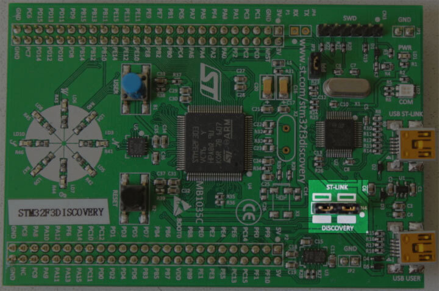

소개
임베디드 Rust 북에 오신 것을 환영합니다: 마이크로컨트롤러와 같은 "베어 메탈" 임베디드 시스템에서 Rust 프로그래밍 언어를 사용하는 방법에 대한 입문서입니다.
임베디드 Rust는 누구를 위한 것인가
임베디드 Rust는 Rust 언어가 제공하는 고수준 개념과 안전성 보장을 활용하면서 임베디드 프로그래밍을 하고자 하는 모든 사람을 위한 것입니다. (Rust는 누구를 위한 것인가도 참조하세요)
범위
이 책의 목표는 다음과 같습니다:
-
개발자들이 임베디드 Rust 개발에 빠르게 적응할 수 있도록 돕습니다. 즉, 개발 환경을 설정하는 방법을 알려줍니다.
-
임베디드 개발에서 Rust를 사용하는 현재의 모범 사례를 공유합니다. 즉, Rust 언어 기능을 최대한 활용하여 더 정확한 임베디드 소프트웨어를 작성하는 방법을 알려줍니다.
-
경우에 따라서는 요리책 역할을 합니다. 예를 들어, 하나의 프로젝트에서 C와 Rust를 어떻게 혼합할 수 있을까요?
이 책은 가능한 한 일반적이려고 하지만 독자와 저자 모두에게 편의를 위해 모든 예제에서 ARM Cortex-M 아키텍처를 사용합니다. 하지만 이 책은 독자가 이 특정 아키텍처에 익숙하다고 가정하지 않으며, 필요한 경우 이 아키텍처에 특정한 세부사항을 설명합니다.
이 책은 누구를 위한 것인가
이 책은 임베디드 배경이나 Rust 배경을 가진 사람들을 대상으로 하지만, 임베디드 Rust 프로그래밍에 관심이 있는 모든 사람이 이 책에서 무언가를 얻을 수 있다고 믿습니다. 사전 지식이 없는 분들은 "가정 및 전제 조건" 섹션을 읽고 부족한 지식을 보충하여 책을 더 잘 활용하고 읽기 경험을 향상시키기를 권합니다. "기타 자료" 섹션에서 보충하고 싶은 주제에 대한 자료를 찾을 수 있습니다.
가정 및 전제 조건
-
Rust 프로그래밍 언어를 편안하게 사용할 수 있고, 데스크톱 환경에서 Rust 애플리케이션을 작성, 실행, 디버깅해본 경험이 있어야 합니다. 또한 이 책은 Rust 2018을 대상으로 하므로 2018 에디션의 관용구에도 익숙해야 합니다.
-
C, C++, Ada와 같은 다른 언어로 임베디드 시스템을 개발하고 디버깅하는 데 익숙하며, 다음과 같은 개념들에 친숙해야 합니다:
- 크로스 컴파일
- 메모리 매핑 주변장치
- 인터럽트
- I2C, SPI, 시리얼 등과 같은 일반적인 인터페이스
기타 자료
위에서 언급한 내용 중 익숙하지 않은 것이 있거나 이 책에서 언급된 특정 주제에 대한 더 많은 정보를 원한다면 다음 자료들이 도움이 될 것입니다.
| 주제 | 자료 | 설명 |
|---|---|---|
| Rust | Rust 책 | 아직 Rust에 익숙하지 않다면, 이 책을 읽어보시기를 강력히 권합니다. |
| Rust, 임베디드 | Discovery 책 | 임베디드 프로그래밍을 한 번도 해본 적이 없다면, 이 책이 더 나은 시작점이 될 수 있습니다 |
| Rust, 임베디드 | 임베디드 Rust 서재 | 여기서 Rust 임베디드 워킹 그룹에서 제공하는 여러 다른 자료들을 찾을 수 있습니다. |
| Rust, 임베디드 | Embedonomicon | Rust로 임베디드 프로그래밍을 할 때의 세부적인 내용들. |
| Rust, 임베디드 | 임베디드 FAQ | 임베디드 환경에서 Rust에 대한 자주 묻는 질문들. |
| Rust, 임베디드 | 포괄적인 Rust 🦀: 베어 메탈 | 베어 메탈 Rust 개발에 대한 1일 수업용 교육 자료 |
| 인터럽트 | 인터럽트 | - |
| 메모리 매핑 입출력/주변장치 | 메모리 매핑 입출력 | - |
| SPI, UART, RS232, USB, I2C, TTL | SPI, UART 및 기타 인터페이스에 대한 Stack Exchange | - |
번역
이 책은 관대한 자원봉사자들에 의해 번역되었습니다. 여러분의 번역을 여기에 나열하고 싶다면 PR을 열어 추가해 주세요.
이 책을 사용하는 방법
이 책은 일반적으로 처음부터 끝까지 순서대로 읽는다고 가정합니다. 후반 장들은 이전 장의 개념을 기반으로 하며, 이전 장에서는 주제에 대한 세부사항을 깊이 다루지 않고 후반 장에서 다시 다룰 수 있습니다.
이 책은 포함된 대부분의 예제에서 STMicroelectronics의 STM32F3DISCOVERY 개발 보드를 사용할 것입니다. 이 보드는 ARM Cortex-M 아키텍처를 기반으로 하며, 이 아키텍처를 기반으로 한 대부분의 CPU에서 기본 기능은 동일하지만, 마이크로컨트롤러의 주변장치와 기타 구현 세부사항은 벤더마다 다르고, 종종 같은 벤더의 마이크로컨트롤러 패밀리 간에도 다릅니다.
이러한 이유로, 이 책의 예제를 따라하기 위해 STM32F3DISCOVERY 개발 보드를 구입하시기를 권합니다.
이 책에 기여하기
이 책의 작업은 이 저장소에서 조정되며 주로 리소스 팀에서 개발됩니다.
이 책의 지침을 따르는 데 문제가 있거나 책의 일부 섹션이 충분히 명확하지 않거나 따라하기 어렵다면 그것은 버그이며 이 책의 이슈 트래커에 보고해야 합니다.
오타를 수정하고 새로운 내용을 추가하는 풀 리퀘스트는 매우 환영합니다!
이 자료 재사용하기
이 책은 다음 라이선스 하에 배포됩니다:
- 이 책에 포함된 코드 샘플과 독립적인 Cargo 프로젝트는 MIT 라이선스와 Apache License v2.0 조건 하에 라이선스됩니다.
- 이 책에 포함된 글, 그림, 다이어그램은 크리에이티브 커먼즈 CC-BY-SA v4.0 라이선스의 조건 하에 라이선스됩니다.
요약: 작업에서 우리의 텍스트나 이미지를 사용하려면 다음이 필요합니다:
- 적절한 크레딧을 제공하세요 (즉, 슬라이드에 이 책을 언급하고 관련 페이지에 대한 링크를 제공하세요)
- CC-BY-SA v4.0 라이선스에 대한 링크를 제공하세요
- 자료를 어떤 방식으로든 변경했는지 표시하고, 우리 자료에 대한 모든 변경사항을 동일한 라이선스 하에 제공하세요
또한 이 책이 유용하다고 생각하시면 알려주세요!
하드웨어 소개
우리가 작업할 하드웨어에 익숙해져 봅시다.
STM32F3DISCOVERY ("F3")

이 보드에는 무엇이 포함되어 있나요?
-
STM32F303VCT6 마이크로컨트롤러. 이 마이크로컨트롤러는 다음을 가지고 있습니다
-
단정밀도 부동소수점 연산을 위한 하드웨어 지원과 최대 72MHz의 클록 주파수를 가진 단일 코어 ARM Cortex-M4F 프로세서.
-
256 KiB의 "플래시" 메모리. (1 KiB = 1024 바이트)
-
48 KiB의 RAM.
-
타이머, I2C, SPI, USART와 같은 다양한 통합 주변장치.
-
보드 양쪽의 두 줄의 헤더를 통해 접근할 수 있는 범용 입출력(GPIO) 및 기타 유형의 핀.
-
"USB USER"라고 표시된 USB 포트를 통해 접근할 수 있는 USB 인터페이스.
-
-
LSM303DLHC 칩의 일부인 가속도계.
-
LSM303DLHC 칩의 일부인 자력계.
-
나침반 모양으로 배열된 8개의 사용자 LED.
-
두 번째 마이크로컨트롤러: STM32F103. 이 마이크로컨트롤러는 실제로 온보드 프로그래머/디버거의 일부이며 "USB ST-LINK"라는 이름의 USB 포트에 연결되어 있습니다.
보드의 더 자세한 기능 목록과 추가 사양은 STMicroelectronics 웹사이트를 참조하세요.
주의사항: 보드에 외부 신호를 적용하려는 경우 주의하세요. 마이크로컨트롤러 STM32F303VCT6 핀은 3.3볼트의 정격 전압을 사용합니다. 자세한 정보는 매뉴얼의 6.2 절대 최대 정격 섹션을 참조하세요
no_std Rust 환경
임베디드 프로그래밍이라는 용어는 다양한 종류의 프로그래밍 클래스에 사용됩니다. 몇 KB의 RAM과 ROM만을 가진 8비트 MCU(ST72325xx와 같은) 프로그래밍부터 32/64비트 4코어 Cortex-A53 @ 1.4 GHz와 1GB RAM을 가진 라즈베리 파이(Model B 3+)와 같은 시스템까지 다양합니다. 어떤 종류의 대상과 사용 사례를 가지고 있는지에 따라 코드를 작성할 때 다른 제한사항/한계가 적용됩니다.
임베디드 프로그래밍에는 두 가지 일반적인 분류가 있습니다:
호스트 환경
이런 종류의 환경은 일반적인 PC 환경과 유사합니다. 이는 파일 시스템, 네트워킹, 메모리 관리, 스레드 등과 같은 다양한 시스템과 상호작용할 수 있는 기본 요소를 제공하는 시스템 인터페이스 예: POSIX가 제공된다는 의미입니다. 표준 라이브러리는 일반적으로 이러한 기본 요소에 의존하여 기능을 구현합니다. 또한 어떤 종류의 sysroot와 RAM/ROM 사용량 제한, 그리고 아마도 일부 특수 HW나 I/O가 있을 수 있습니다. 전반적으로 특수 목적 PC 환경에서 코딩하는 것처럼 느껴집니다.
베어 메탈 환경
베어 메탈 환경에서는 프로그램 이전에 로드된 코드가 없습니다. OS에서 제공하는 소프트웨어 없이는 표준 라이브러리를 로드할 수 없습니다. 대신 프로그램은 사용하는 크레이트와 함께 하드웨어(베어 메탈)만을 사용하여 실행할 수 있습니다. Rust가 표준 라이브러리를 로드하는 것을 방지하려면 no_std를 사용하세요. 표준 라이브러리의 플랫폼 독립적인 부분은 libcore를 통해 사용할 수 있습니다. libcore는 또한 임베디드 환경에서 항상 바람직하지 않은 것들을 제외합니다. 이러한 것들 중 하나는 동적 메모리 할당을 위한 메모리 할당자입니다. 이것이나 다른 기능이 필요한 경우 이를 제공하는 크레이트가 종종 있습니다.
libstd 런타임
앞서 언급했듯이 libstd를 사용하려면 어떤 종류의 시스템 통합이 필요하지만, 이는 libstd가 단순히 OS 추상화에 접근하는 일반적인 방법을 제공하기 때문만이 아니라 런타임도 제공하기 때문입니다. 이 런타임은 무엇보다도 스택 오버플로 보호 설정, 명령줄 인수 처리, 프로그램의 main 함수가 호출되기 전에 메인 스레드 생성을 담당합니다. 이 런타임은 no_std 환경에서도 사용할 수 없습니다.
요약
#![no_std]는 크레이트가 std-크레이트 대신 core-크레이트에 링크될 것임을 나타내는 크레이트 수준 속성입니다. libcore 크레이트는 프로그램이 실행될 시스템에 대해 어떠한 가정도 하지 않는 std 크레이트의 플랫폼 독립적인 하위 집합입니다. 따라서 부동 소수점, 문자열 및 슬라이스와 같은 언어 기본 요소에 대한 API와 원자적 연산 및 SIMD 명령어와 같은 프로세서 기능을 노출하는 API를 제공합니다. 그러나 플랫폼 통합과 관련된 모든 것에 대한 API는 부족합니다. 이러한 속성 때문에 no_std 및 libcore 코드는 부트로더, 펌웨어 또는 커널과 같은 모든 종류의 부트스트래핑(단계 0) 코드에 사용될 수 있습니다.
개요
| 기능 | no_std | std |
|---|---|---|
| 힙 (동적 메모리) | * | ✓ |
| 컬렉션 (Vec, BTreeMap 등) | ** | ✓ |
| 스택 오버플로 보호 | ✘ | ✓ |
| main 이전에 초기화 코드 실행 | ✘ | ✓ |
| libstd 사용 가능 | ✘ | ✓ |
| libcore 사용 가능 | ✓ | ✓ |
| 펌웨어, 커널 또는 부트로더 코드 작성 | ✓ | ✘ |
alloc크레이트를 사용하고 alloc-cortex-m과 같은 적절한 할당자를 사용하는 경우에만 해당됩니다.
** collections 크레이트를 사용하고 전역 기본 할당자를 구성하는 경우에만 해당됩니다.
** 안전한 난수 생성기가 부족하여 HashMap 및 HashSet을 사용할 수 없습니다.
참조
도구
마이크로컨트롤러를 다루는 것은 여러 가지 다른 도구를 사용하는 것을 포함합니다. 이는 노트북과는 다른 아키텍처를 다루고 원격 장치에서 프로그램을 실행하고 디버깅해야 하기 때문입니다.
아래 나열된 모든 도구를 사용할 것입니다. 최소 버전이 지정되지 않은 경우 최신 버전은 모두 작동해야 하지만, 저희가 테스트한 버전을 나열했습니다.
- Rust 1.31, 1.31-beta 또는 더 새로운 툴체인 + ARM Cortex-M 컴파일 지원.
cargo-binutils~0.1.4qemu-system-arm. 테스트 버전: 3.0.0- OpenOCD >=0.8. 테스트 버전: v0.9.0 및 v0.10.0
- ARM 지원 GDB. 버전 7.12 이상을 강력히 권장합니다. 테스트 버전: 7.10, 7.11, 7.12 및 8.1
cargo-generate또는git. 이 도구들은 선택 사항이지만 책을 따라하기 쉽게 해줄 것입니다.
아래 텍스트는 이러한 도구를 사용하는 이유를 설명합니다. 설치 지침은 다음 페이지에서 찾을 수 있습니다.
cargo-generate 또는 git
베어 메탈 프로그램은 프로그램의 메모리 레이아웃을 올바르게 얻기 위해 링크 프로세스에 일부 조정이 필요한 비표준(no_std) Rust 프로그램입니다. 이를 위해서는 일부 추가 파일(링커 스크립트 등) 및 설정(링커 플래그 등)이 필요합니다. 저희는 이러한 것들을 템플릿으로 패키징하여 프로젝트 이름 및 대상 하드웨어의 특성과 같은 누락된 정보만 채우면 됩니다.
저희 템플릿은 템플릿에서 새 Cargo 프로젝트를 생성하기 위한 Cargo 하위 명령인 cargo-generate와 호환됩니다. git, curl, wget 또는 웹 브라우저를 사용하여 템플릿을 다운로드할 수도 있습니다.
cargo-binutils
cargo-binutils는 Rust 툴체인과 함께 제공되는 LLVM 도구를 쉽게 사용할 수 있도록 하는 Cargo 하위 명령 모음입니다. 이 도구에는 objdump, nm, size의 LLVM 버전이 포함되어 있으며 바이너리를 검사하는 데 사용됩니다.
GNU binutils 대신 이 도구를 사용하는 장점은 (a) LLVM 도구 설치가 OS에 관계없이 동일한 단일 명령 설치(rustup component add llvm-tools)이며 (b) objdump와 같은 도구는 ARM에서 x86_64까지 rustc가 지원하는 모든 아키텍처를 지원한다는 것입니다. 이는 둘 다 동일한 LLVM 백엔드를 공유하기 때문입니다.
qemu-system-arm
QEMU는 에뮬레이터입니다. 이 경우 ARM 시스템을 완전히 에뮬레이션할 수 있는 변형을 사용합니다. QEMU를 사용하여 호스트에서 임베디드 프로그램을 실행합니다. 덕분에 하드웨어가 없어도 이 책의 일부를 따라할 수 있습니다!
임베디드 Rust 디버깅을 위한 도구
개요
Rust에서 임베디드 시스템을 디버깅하려면 디버깅 프로세스를 관리하는 소프트웨어, 프로그램 실행을 검사하고 제어하는 디버거, 호스트와 임베디드 장치 간의 상호 작용을 용이하게 하는 하드웨어 프로브를 포함한 전문 도구가 필요합니다. 이 문서는 디버깅 프로세스를 단순화하고 지원하는 Probe-rs 및 OpenOCD와 같은 필수 소프트웨어 도구와 GDB 및 Probe-rs Visual Studio Code 확장과 같은 주요 디버거를 설명합니다. 또한 Rusty-probe, ST-Link, J-Link 및 MCU-Link와 같은 주요 하드웨어 프로브를 다루며, 이는 임베디드 장치의 효과적인 디버깅 및 프로그래밍에 필수적입니다.
디버깅 도구를 구동하는 소프트웨어
Probe-rs
Probe-rs는 임베디드 시스템의 디버거와 함께 작동하도록 설계된 현대적인 Rust 중심 소프트웨어입니다. OpenOCD와 달리 Probe-rs는 단순성을 염두에 두고 구축되었으며 다른 디버깅 솔루션에서 흔히 볼 수 있는 구성 부담을 줄이는 것을 목표로 합니다. 다양한 프로브와 타겟을 지원하며 임베디드 하드웨어와 상호 작용하기 위한 고수준 인터페이스를 제공합니다. Probe-rs는 Rust 툴링과 직접 통합되며 확장을 통해 Visual Studio Code와 통합되어 개발자가 디버깅 워크플로를 간소화할 수 있습니다.
OpenOCD (오픈 온칩 디버거)
OpenOCD는 임베디드 시스템 디버깅, 테스트 및 프로그래밍에 사용되는 오픈 소스 소프트웨어 도구입니다. 호스트 시스템과 임베디드 하드웨어 간의 인터페이스를 제공하며 JTAG 및 SWD(Serial Wire Debug)와 같은 다양한 전송 계층을 지원합니다. OpenOCD는 디버거인 GDB와 통합됩니다. OpenOCD는 광범위한 문서와 대규모 커뮤니티를 통해 널리 지원되지만, 특히 사용자 정의 임베디드 설정의 경우 복잡한 구성이 필요할 수 있습니다.
디버거
디버거는 개발자가 오류나 버그를 식별하고 수정하기 위해 프로그램 실행을 검사하고 제어할 수 있도록 합니다. 중단점 설정, 코드 한 줄씩 실행, 변수 값 및 메모리 상태 검사와 같은 기능을 제공합니다. 디버거는 철저한 소프트웨어 개발 및 유지 관리에 필수적이며, 개발자가 다양한 조건에서 코드가 의도한 대로 작동하는지 확인할 수 있도록 합니다.
디버거는 다음을 수행하는 방법을 알고 있습니다:
- 메모리 매핑 레지스터와 상호 작용합니다.
- 중단점/감시점 설정.
- 메모리 매핑 레지스터를 읽고 씁니다.
- 디버그 이벤트로 인해 MCU가 중단되었을 때 감지합니다.
- 디버그 이벤트가 발생한 후 MCU 실행을 계속합니다.
- 마이크로컨트롤러의 FLASH를 지우고 씁니다.
Probe-rs Visual Studio Code 확장
Probe-rs는 Visual Studio Code 확장을 제공하여 광범위한 설정 없이 원활한 디버깅 경험을 제공합니다. 이 연결을 통해 개발자는 예쁜 출력 및 자세한 오류 메시지와 같은 Rust 특정 기능을 사용하여 디버깅 프로세스가 Rust 생태계와 일치하도록 할 수 있습니다.
GDB (GNU 디버거)
GDB는 개발자가 프로그램 실행 중 또는 충돌 후 프로그램 상태를 검사할 수 있도록 하는 다목적 디버깅 도구입니다. 임베디드 Rust의 경우 GDB는 OpenOCD 또는 다른 디버깅 서버를 통해 대상 시스템에 연결하여 임베디드 코드와 상호 작용합니다. GDB는 고도로 구성 가능하며 원격 디버깅, 변수 검사 및 조건부 중단점과 같은 기능을 지원합니다. 다양한 플랫폼에서 사용할 수 있으며 예쁜 출력 및 IDE 통합과 같은 Rust 특정 디버깅 요구 사항에 대한 광범위한 지원을 제공합니다.
프로브
하드웨어 프로브는 호스트 컴퓨터와 대상 임베디드 장치 간의 통신을 용이하게 하기 위해 임베디드 시스템 개발 및 디버깅에 사용되는 장치입니다. 일반적으로 JTAG 또는 SWD와 같은 프로토콜을 지원하여 임베디드 시스템의 마이크로컨트롤러 또는 마이크로프로세서를 프로그래밍, 디버깅 및 분석할 수 있습니다. 하드웨어 프로브는 개발자가 중단점을 설정하고, 코드를 단계별로 실행하고, 메모리 및 프로세서 레지스터를 검사하여 실시간으로 문제를 진단하고 해결할 수 있도록 하는 데 중요합니다.
Rusty-probe
Rusty-probe는 probe-rs와 함께 작동하도록 설계된 오픈 소스 USB 기반 하드웨어 디버깅 프로브입니다. Rusty-Probe와 probe-rs의 조합은 임베디드 Rust 애플리케이션을 개발하는 개발자를 위한 사용하기 쉽고 비용 효율적인 솔루션을 제공합니다.
ST-Link
ST-Link는 STMicroelectronics에서 주로 STM32 및 STM8 마이크로컨트롤러 시리즈를 위해 개발한 인기 있는 디버깅 및 프로그래밍 프로브입니다. JTAG 또는 SWD(Serial Wire Debug) 인터페이스를 통해 디버깅 및 프로그래밍을 모두 지원합니다. ST-Link는 STMicroelectronics의 광범위한 개발 보드에서 직접 지원하고 주요 IDE에 통합되어 STM 마이크로컨트롤러를 사용하는 개발자에게 편리한 선택이므로 널리 사용됩니다.
J-Link
SEGGER Microcontroller에서 개발한 J-Link는 RISC-V와 같은 ARM 외에도 광범위한 CPU 코어 및 장치를 지원하는 강력하고 다재다능한 디버거입니다. 고성능과 신뢰성으로 유명한 J-Link는 JTAG, SWD 및 미세 피치 JTAG 인터페이스를 포함한 다양한 통신 인터페이스를 지원합니다. 플래시 메모리의 무제한 중단점과 다양한 개발 환경과의 호환성과 같은 고급 기능으로 선호됩니다.
MCU-Link
MCU-Link는 NXP Semiconductors에서 제공하는 프로그래머 역할도 하는 디버깅 프로브입니다. 다양한 ARM Cortex 마이크로컨트롤러를 지원하며 MCUXpresso IDE와 같은 개발 도구와 원활하게 인터페이스합니다. MCU-Link는 특히 다용도성과 경제성으로 유명하여 취미 개발자, 교육자 및 전문 개발자 모두에게 접근 가능한 옵션입니다.
도구 설치
이 페이지에는 몇 가지 도구에 대한 OS 독립적인 설치 지침이 포함되어 있습니다:
Rust 툴체인
https://rustup.rs의 지침에 따라 rustup을 설치하세요.
참고 컴파일러 버전이 1.31 이상인지 확인하세요. rustc -V는 아래 표시된 날짜보다 최신 날짜를 반환해야 합니다.
$ rustc -V
rustc 1.31.1 (b6c32da9b 2018-12-18)
대역폭 및 디스크 사용량 문제로 인해 기본 설치는 네이티브 컴파일만 지원합니다. ARM Cortex-M 아키텍처에 대한 크로스 컴파일 지원을 추가하려면 다음 컴파일 대상 중 하나를 선택하세요. 이 책의 예제에 사용된 STM32F3DISCOVERY 보드의 경우 thumbv7em-none-eabihf 대상을 사용하세요. 자신에게 가장 적합한 Cortex-M을 찾으세요.
Cortex-M0, M0+, M1 (ARMv6-M 아키텍처):
rustup target add thumbv6m-none-eabi
Cortex-M3 (ARMv7-M 아키텍처):
rustup target add thumbv7m-none-eabi
하드웨어 부동 소수점 없는 Cortex-M4 및 M7 (ARMv7E-M 아키텍처):
rustup target add thumbv7em-none-eabi
하드웨어 부동 소수점 있는 Cortex-M4F 및 M7F (ARMv7E-M 아키텍처):
rustup target add thumbv7em-none-eabihf
Cortex-M23 (ARMv8-M 아키텍처):
rustup target add thumbv8m.base-none-eabi
Cortex-M33 및 M35P (ARMv8-M 아키텍처):
rustup target add thumbv8m.main-none-eabi
하드웨어 부동 소수점 있는 Cortex-M33F 및 M35PF (ARMv8-M 아키텍처):
rustup target add thumbv8m.main-none-eabihf
cargo-binutils
cargo install cargo-binutils
rustup component add llvm-tools
WINDOWS: Visual Studio 2019용 C++ 빌드 도구 필수 구성 요소가 설치되어 있습니다. https://visualstudio.microsoft.com/thank-you-downloading-visual-studio/?sku=BuildTools&rel=16
cargo-generate
나중에 템플릿에서 프로젝트를 생성하는 데 사용할 것입니다.
cargo install cargo-generate
참고: 일부 Linux 배포판(예: Ubuntu)에서는 cargo-generate를 설치하기 전에 libssl-dev 및 pkg-config 패키지를 설치해야 할 수 있습니다.
OS별 지침
이제 사용 중인 OS에 특정한 지침을 따르세요:
리눅스
다음은 몇 가지 Linux 배포판에 대한 설치 명령어입니다.
패키지
- Ubuntu 18.04 이상 / Debian stretch 이상
참고
gdb-multiarch는 ARM Cortex-M 프로그램을 디버깅하는 데 사용할 GDB 명령어입니다.
sudo apt install gdb-multiarch openocd qemu-system-arm
- Ubuntu 14.04 및 16.04
참고
arm-none-eabi-gdb는 ARM Cortex-M 프로그램을 디버깅하는 데 사용할 GDB 명령어입니다.
sudo apt install gdb-arm-none-eabi openocd qemu-system-arm
- Fedora 27 이상
sudo dnf install gdb openocd qemu-system-arm
- Arch Linux
참고
arm-none-eabi-gdb는 ARM Cortex-M 프로그램을 디버깅하는 데 사용할 GDB 명령어입니다.
sudo pacman -S arm-none-eabi-gdb qemu-system-arm openocd
udev 규칙
이 규칙을 사용하면 루트 권한 없이 Discovery 보드와 함께 OpenOCD를 사용할 수 있습니다.
아래에 표시된 내용으로 /etc/udev/rules.d/70-st-link.rules 파일을 생성하세요.
# STM32F3DISCOVERY rev A/B - ST-LINK/V2
ATTRS{idVendor}=="0483", ATTRS{idProduct}=="3748", TAG+="uaccess"
# STM32F3DISCOVERY rev C+ - ST-LINK/V2-1
ATTRS{idVendor}=="0483", ATTRS{idProduct}=="374b", TAG+="uaccess"
그런 다음 다음 명령으로 모든 udev 규칙을 다시 로드하세요:
sudo udevadm control --reload-rules
보드가 노트북에 연결되어 있었다면, 플러그를 뽑았다가 다시 연결하세요.
이 명령을 실행하여 권한을 확인할 수 있습니다:
lsusb
다음과 같이 표시되어야 합니다.
(..)
Bus 001 Device 018: ID 0483:374b STMicroelectronics ST-LINK/V2.1
(..)
버스 및 장치 번호를 기록해 두세요. 이 번호를 사용하여 /dev/bus/usb/<bus>/<device>와 같은 경로를 생성하세요. 그런 다음 이 경로를 다음과 같이 사용하세요:
ls -l /dev/bus/usb/001/018
crw-------+ 1 root root 189, 17 Sep 13 12:34 /dev/bus/usb/001/018
getfacl /dev/bus/usb/001/018 | grep user
user::rw-
user:you:rw-
권한에 추가된 +는 확장 권한의 존재를 나타냅니다. getfacl 명령은 사용자 당신이 이 장치를 사용할 수 있음을 알려줍니다.
이제 다음 섹션으로 이동하세요.
macOS
모든 도구는 Homebrew 또는 MacPorts를 사용하여 설치할 수 있습니다:
Homebrew로 도구 설치
$ # GDB
$ brew install arm-none-eabi-gdb
$ # OpenOCD
$ brew install openocd
$ # QEMU
$ brew install qemu
참고 OpenOCD가 충돌하면 다음을 사용하여 최신 버전을 설치해야 할 수 있습니다:
$ brew install --HEAD openocd
MacPorts로 도구 설치
$ # GDB
$ sudo port install arm-none-eabi-gcc
$ # OpenOCD
$ sudo port install openocd
$ # QEMU
$ sudo port install qemu
그게 다입니다! 다음 섹션으로 이동하세요.
윈도우
arm-none-eabi-gdb
ARM은 Windows용 .exe 설치 프로그램을 제공합니다. 여기에서 다운로드하여 지침을 따르세요. 설치 프로세스가 끝나기 직전에 "환경 변수에 경로 추가" 옵션을 선택/체크하세요. 그런 다음 도구가 %PATH%에 있는지 확인하세요:
$ arm-none-eabi-gdb -v
GNU gdb (GNU Tools for Arm Embedded Processors 7-2018-q2-update) 8.1.0.20180315-git
(..)
OpenOCD
Windows용 OpenOCD 공식 바이너리 릴리스는 없지만 직접 컴파일할 의향이 없다면 xPack 프로젝트에서 여기에서 바이너리 배포판을 제공합니다. 제공된 설치 지침을 따르세요. 그런 다음 바이너리가 설치된 경로를 포함하도록 %PATH% 환경 변수를 업데이트하세요. (쉬운 설치를 사용했다면 C:\Users\USERNAME\AppData\Roaming\xPacks\@xpack-dev-tools\openocd\0.10.0-13.1\.content\bin\)
다음 명령으로 OpenOCD가 %PATH%에 있는지 확인하세요:
$ openocd -v
Open On-Chip Debugger 0.10.0
(..)
QEMU
공식 웹사이트에서 QEMU를 다운로드하세요.
ST-LINK USB 드라이버
또한 이 USB 드라이버를 설치해야 합니다. 그렇지 않으면 OpenOCD가 작동하지 않습니다. 설치 프로그램 지침을 따르고 올바른 버전(32비트 또는 64비트)의 드라이버를 설치했는지 확인하세요.
그게 다입니다! 다음 섹션으로 이동하세요.
설치 확인
이 섹션에서는 필요한 도구/드라이버 중 일부가 올바르게 설치 및 구성되었는지 확인합니다.
미니 USB 케이블을 사용하여 노트북/PC를 디스커버리 보드에 연결하세요. 디스커버리 보드에는 두 개의 USB 커넥터가 있습니다. 보드 가장자리 중앙에 있는 "USB ST-LINK"라고 표시된 커넥터를 사용하세요.
또한 ST-LINK 헤더가 채워져 있는지 확인하세요. 아래 그림을 참조하세요. ST-LINK 헤더가 강조 표시되어 있습니다.

이제 다음 명령을 실행하세요:
openocd -f interface/stlink.cfg -f target/stm32f3x.cfg
참고: 2017년 0.10.0 릴리스를 포함한 이전 버전의 OpenOCD에는 새롭고 선호되는
interface/stlink.cfg파일이 포함되어 있지 않습니다. 대신interface/stlink-v2.cfg또는interface/stlink-v2-1.cfg를 사용해야 할 수 있습니다.
다음과 같은 출력이 표시되고 프로그램이 콘솔을 차단해야 합니다:
Open On-Chip Debugger 0.10.0
Licensed under GNU GPL v2
For bug reports, read
http://openocd.org/doc/doxygen/bugs.html
Info : auto-selecting first available session transport "hla_swd". To override use 'transport select <transport>'.
adapter speed: 1000 kHz
adapter_nsrst_delay: 100
Info : The selected transport took over low-level target control. The results might differ compared to plain JTAG/SWD
none separate
Info : Unable to match requested speed 1000 kHz, using 950 kHz
Info : Unable to match requested speed 1000 kHz, using 950 kHz
Info : clock speed 950 kHz
Info : STLINK v2 JTAG v27 API v2 SWIM v15 VID 0x0483 PID 0x374B
Info : using stlink api v2
Info : Target voltage: 2.919881
Info : stm32f3x.cpu: hardware has 6 breakpoints, 4 watchpoints
내용이 정확히 일치하지 않을 수 있지만 중단점 및 감시점에 대한 마지막 줄이 표시되어야 합니다. 이 줄이 표시되면 OpenOCD 프로세스를 종료하고 다음 섹션으로 이동하세요.
breakpoints" 줄이 표시되지 않았다면 다음 명령 중 하나를 시도해 보세요.
openocd -f interface/stlink-v2.cfg -f target/stm32f3x.cfg
openocd -f interface/stlink-v2-1.cfg -f target/stm32f3x.cfg
이 명령 중 하나가 작동한다면 Discovery 보드의 이전 하드웨어 개정판을 사용하고 있다는 의미입니다. 이는 문제가 되지 않지만 나중에 설정을 약간 다르게 구성해야 하므로 이 사실을 기억해 두세요. 다음 섹션으로 이동할 수 있습니다.
일반 사용자로는 어떤 명령도 작동하지 않는다면 루트 권한으로 실행해 보세요(예: sudo openocd ..). 명령이 루트 권한으로 작동한다면 udev 규칙이 올바르게 설정되었는지 확인하세요.
이 시점까지 OpenOCD가 작동하지 않는다면 이슈를 열어주세요. 저희가 도와드리겠습니다!
시작하기
이 섹션에서는 임베디드 프로그램을 작성, 빌드, 플래싱 및 디버깅하는 과정을 안내합니다. 인기 있는 오픈 소스 하드웨어 에뮬레이터인 QEMU를 사용하여 기본 사항을 보여주므로 특별한 하드웨어 없이도 대부분의 예제를 시도할 수 있습니다. 하드웨어가 필요한 유일한 섹션은 당연히 OpenOCD를 사용하여 STM32F3DISCOVERY를 프로그래밍하는 하드웨어 섹션입니다.
QEMU
LM3S6965, Cortex-M3 마이크로컨트롤러를 위한 프로그램 작성을 시작하겠습니다. 이를 초기 타겟으로 선택한 이유는 QEMU를 사용하여 에뮬레이션할 수 있기 때문에 이 섹션에서는 하드웨어를 만질 필요가 없고 툴링과 개발 과정에 집중할 수 있습니다.
중요 이 튜토리얼에서는 프로젝트 이름으로 "app"을 사용하겠습니다. "app"이라는 단어를 볼 때마다 프로젝트에 대해 선택한 이름으로 바꿔야 합니다. 또는 프로젝트 이름을 "app"으로 지정하여 치환을 피할 수도 있습니다.
비표준 Rust 프로그램 만들기
cortex-m-quickstart 프로젝트 템플릿을 사용하여 새 프로젝트를 생성하겠습니다. 생성된 프로젝트는 기본 애플리케이션을 포함할 것입니다: 새로운 임베디드 rust 애플리케이션을 위한 좋은 시작점입니다. 또한 프로젝트에는 핵심 임베디드 rust 기능을 강조하는 여러 개별 애플리케이션이 있는 examples 디렉토리가 포함됩니다.
cargo-generate 사용하기
먼저 cargo-generate를 설치하세요
cargo install cargo-generate
그런 다음 새 프로젝트를 생성하세요
cargo generate --git https://github.com/rust-embedded/cortex-m-quickstart
Project Name: app
Creating project called `app`...
Done! New project created /tmp/app
cd app
git 사용하기
저장소를 클론하세요
git clone https://github.com/rust-embedded/cortex-m-quickstart app
cd app
그런 다음 Cargo.toml 파일의 플레이스홀더를 채우세요
[package]
authors = ["{{authors}}"] # "{{authors}}" -> "John Smith"
edition = "2018"
name = "{{project-name}}" # "{{project-name}}" -> "app"
version = "0.1.0"
# ..
[[bin]]
name = "{{project-name}}" # "{{project-name}}" -> "app"
test = false
bench = false
둘 다 사용하지 않기
cortex-m-quickstart 템플릿의 최신 스냅샷을 가져와서 압축을 해제하세요.
curl -LO https://github.com/rust-embedded/cortex-m-quickstart/archive/master.zip
unzip master.zip
mv cortex-m-quickstart-master app
cd app
또는 cortex-m-quickstart로 이동하여 녹색 "Clone or download" 버튼을 클릭한 다음 "Download ZIP"을 클릭할 수 있습니다.
그런 다음 "git 사용하기" 버전의 두 번째 부분에서 수행한 대로 Cargo.toml 파일의 플레이스홀더를 채우세요.
프로그램 개요
편의를 위해 src/main.rs의 소스 코드에서 가장 중요한 부분을 소개합니다:
#![no_std]
#![no_main]
use panic_halt as _;
use cortex_m_rt::entry;
#[entry]
fn main() -> ! {
loop {
// 여기에 코드를 작성하세요
}
}이 프로그램은 표준 Rust 프로그램과 약간 다르므로 자세히 살펴보겠습니다.
#![no_std]는 이 프로그램이 표준 크레이트인 std에 링크되지 않을 것임을 나타냅니다. 대신 그 하위 집합인 core 크레이트에 링크될 것입니다.
#![no_main]은 이 프로그램이 대부분의 Rust 프로그램이 사용하는 표준 main 인터페이스를 사용하지 않을 것임을 나타냅니다. no_main을 사용하는 주된 이유는 no_std 컨텍스트에서 main 인터페이스를 사용하려면 nightly가 필요하기 때문입니다.
use panic_halt as _;. 이 크레이트는 프로그램의 패닉 동작을 정의하는 panic_handler를 제공합니다. 이에 대해서는 책의 패닉 장에서 더 자세히 다룰 것입니다.
#[entry]는 프로그램의 진입점을 표시하는 데 사용되는 cortex-m-rt 크레이트에서 제공하는 속성입니다. 표준 main 인터페이스를 사용하지 않으므로 프로그램의 진입점을 나타내는 다른 방법이 필요하며, 그것이 #[entry]입니다.
fn main() -> !. 우리 프로그램은 대상 하드웨어에서 실행되는 유일한 프로세스이므로 종료되기를 원하지 않습니다! 컴파일 시점에 그렇게 될 것임을 보장하기 위해 발산 함수(함수 시그니처의 -> ! 부분)를 사용합니다.
크로스 컴파일
다음 단계는 Cortex-M3 아키텍처용 프로그램을 크로스 컴파일하는 것입니다. 컴파일 대상($TRIPLE)이 무엇인지 안다면 cargo build --target $TRIPLE을 실행하는 것만큼 간단합니다. 다행히 템플릿의 .cargo/config.toml에 답이 있습니다:
tail -n6 .cargo/config.toml
[build]
# Pick ONE of these compilation targets
# target = "thumbv6m-none-eabi" # Cortex-M0 and Cortex-M0+
target = "thumbv7m-none-eabi" # Cortex-M3
# target = "thumbv7em-none-eabi" # Cortex-M4 and Cortex-M7 (no FPU)
# target = "thumbv7em-none-eabihf" # Cortex-M4F and Cortex-M7F (with FPU)
Cortex-M3 아키텍처용으로 크로스 컴파일하려면 thumbv7m-none-eabi를 사용해야 합니다. 이 대상은 Rust 툴체인을 설치할 때 자동으로 설치되지 않으므로, 아직 추가하지 않았다면 지금 툴체인에 이 대상을 추가하는 것이 좋습니다:
rustup target add thumbv7m-none-eabi
.cargo/config.toml 파일에 thumbv7m-none-eabi 컴파일 대상이 기본값으로 설정되어 있으므로 아래 두 명령은 동일하게 작동합니다:
cargo build --target thumbv7m-none-eabi
cargo build
검사
이제 target/thumbv7m-none-eabihf/debug/app에 비네이티브 ELF 바이너리가 있습니다. cargo-binutils를 사용하여 검사할 수 있습니다.
cargo-readobj를 사용하여 ELF 헤더를 출력하여 이것이 ARM 바이너리임을 확인할 수 있습니다.
cargo readobj --bin app -- --file-headers
참고:
--bin app은target/$TRIPLE/debug/app의 바이너리를 검사하는 간편한 방법입니다.--bin app은 필요한 경우 바이너리를 (재)컴파일합니다.
ELF Header:
Magic: 7f 45 4c 46 01 01 01 00 00 00 00 00 00 00 00 00
Class: ELF32
Data: 2's complement, little endian
Version: 1 (current)
OS/ABI: UNIX - System V
ABI Version: 0x0
Type: EXEC (Executable file)
Machine: ARM
Version: 0x1
Entry point address: 0x405
Start of program headers: 52 (bytes into file)
Start of section headers: 153204 (bytes into file)
Flags: 0x5000200
Size of this header: 52 (bytes)
Size of program headers: 32 (bytes)
Number of program headers: 2
Size of section headers: 40 (bytes)
Number of section headers: 19
Section header string table index: 18
cargo-size는 바이너리의 링커 섹션 크기를 출력할 수 있습니다.
cargo size --bin app --release -- -A
최적화된 버전을 검사하기 위해 --release를 사용합니다.
app :
section size addr
.vector_table 1024 0x0
.text 92 0x400
.rodata 0 0x45c
.data 0 0x20000000
.bss 0 0x20000000
.debug_str 2958 0x0
.debug_loc 19 0x0
.debug_abbrev 567 0x0
.debug_info 4929 0x0
.debug_ranges 40 0x0
.debug_macinfo 1 0x0
.debug_pubnames 2035 0x0
.debug_pubtypes 1892 0x0
.ARM.attributes 46 0x0
.debug_frame 100 0x0
.debug_line 867 0x0
Total 14570
ELF 링커 섹션에 대한 복습
.text는 프로그램 명령어를 포함합니다..rodata는 문자열과 같은 상수 값을 포함합니다..data는 초기 값이 0이 아닌 정적으로 할당된 변수를 포함합니다..bss는 초기 값이 0인 정적으로 할당된 변수도 포함합니다..vector_table은 벡터(인터럽트) 테이블을 저장하는 데 사용하는 _비_표준 섹션입니다..ARM.attributes및.debug_*섹션은 메타데이터를 포함하며 바이너리를 플래싱할 때 대상에 로드되지 않습니다.
중요: ELF 파일은 디버그 정보와 같은 메타데이터를 포함하므로 디스크상의 _크기_는 장치에 플래싱될 때 프로그램이 차지할 공간을 정확하게 반영하지 않습니다. 바이너리의 실제 크기를 확인하려면 항상 cargo-size를 사용하세요.
cargo-objdump를 사용하여 바이너리를 역어셈블할 수 있습니다.
cargo objdump --bin app --release -- --disassemble --no-show-raw-insn --print-imm-hex
참고 위 명령이
Unknown command line argument에 대해 불평하면 다음 버그 보고서를 참조하세요: https://github.com/rust-embedded/book/issues/269
참고 이 출력은 시스템에 따라 다를 수 있습니다. rustc, LLVM 및 라이브러리의 새 버전은 다른 어셈블리를 생성할 수 있습니다. 스니펫을 작게 유지하기 위해 일부 명령어를 잘라냈습니다.
app: file format ELF32-arm-little
Disassembly of section .text:
main:
400: bl #0x256
404: b #-0x4 <main+0x4>
Reset:
406: bl #0x24e
40a: movw r0, #0x0
< .. truncated any more instructions .. >
DefaultHandler_:
656: b #-0x4 <DefaultHandler_>
UsageFault:
657: strb r7, [r4, #0x3]
DefaultPreInit:
658: bx lr
__pre_init:
659: strb r7, [r0, #0x1]
__nop:
65a: bx lr
HardFaultTrampoline:
65c: mrs r0, msp
660: b #-0x2 <HardFault_>
HardFault_:
662: b #-0x4 <HardFault_>
HardFault:
663: <unknown>
실행 중
다음으로, QEMU에서 임베디드 프로그램을 실행하는 방법을 살펴보겠습니다! 이번에는 실제로 무언가를 하는 hello 예제를 사용할 것입니다.
편의를 위해 examples/hello.rs의 소스 코드를 소개합니다:
//! 세미호스팅을 사용하여 호스트 콘솔에 "Hello, world!"를 출력합니다
#![no_main]
#![no_std]
use panic_halt as _;
use cortex_m_rt::entry;
use cortex_m_semihosting::{debug, hprintln};
#[entry]
fn main() -> ! {
hprintln!("Hello, world!").unwrap();
// QEMU 종료
// 참고: 하드웨어에서 실행하지 마십시오. OpenOCD 상태를 손상시킬 수 있습니다
debug::exit(debug::EXIT_SUCCESS);
loop {}
}이 프로그램은 세미호스팅이라는 것을 사용하여 호스트 콘솔에 텍스트를 출력합니다. 실제 하드웨어를 사용할 때는 디버그 세션이 필요하지만 QEMU를 사용할 때는 그냥 작동합니다.
예제를 컴파일하여 시작해 봅시다:
cargo build --example hello
출력 바이너리는 target/thumbv7m-none-eabi/debug/examples/hello에 위치합니다.
QEMU에서 이 바이너리를 실행하려면 다음 명령을 실행하세요:
qemu-system-arm \
-cpu cortex-m3 \
-machine lm3s6965evb \
-nographic \
-semihosting-config enable=on,target=native \
-kernel target/thumbv7m-none-eabi/debug/examples/hello
Hello, world!
명령은 텍스트를 출력한 후 성공적으로 종료되어야 합니다 (종료 코드 = 0). *nix에서는 다음 명령으로 확인할 수 있습니다:
echo $?
0
QEMU 명령을 분석해 봅시다:
-
qemu-system-arm. 이것은 QEMU 에뮬레이터입니다. 이 QEMU 바이너리에는 몇 가지 변형이 있습니다. 이 변형은 이름에서 알 수 있듯이 ARM 머신의 전체 시스템 에뮬레이션을 수행합니다. -
-cpu cortex-m3. 이것은 QEMU에게 Cortex-M3 CPU를 에뮬레이트하도록 지시합니다. CPU 모델을 지정하면 일부 잘못된 컴파일 오류를 잡을 수 있습니다. 예를 들어, 하드웨어 FPU가 있는 Cortex-M4F용으로 컴파일된 프로그램을 실행하면 QEMU가 실행 중에 오류를 발생시킵니다. -
-machine lm3s6965evb. 이것은 QEMU에게 LM3S6965 마이크로컨트롤러를 포함하는 평가 보드인 LM3S6965EVB를 에뮬레이트하도록 지시합니다. -
-nographic. 이것은 QEMU에게 GUI를 실행하지 않도록 지시합니다. -
-semihosting-config (..). 이것은 QEMU에게 세미호스팅을 활성화하도록 지시합니다. 세미호스팅을 통해 에뮬레이트된 장치는 호스트의 stdout, stderr, stdin을 사용하고 호스트에 파일을 생성할 수 있습니다. -
-kernel $file. 이것은 QEMU에게 에뮬레이트된 머신에 로드하고 실행할 바이너리를 알려줍니다.
긴 QEMU 명령을 일일이 입력하는 것은 너무 많은 작업입니다! 사용자 지정 러너를 설정하여 프로세스를 단순화할 수 있습니다. .cargo/config.toml에는 QEMU를 호출하는 주석 처리된 러너가 있습니다. 주석을 해제해 봅시다:
head -n3 .cargo/config.toml
[target.thumbv7m-none-eabi]
# uncomment this to make `cargo run` execute programs on QEMU
runner = "qemu-system-arm -cpu cortex-m3 -machine lm3s6965evb -nographic -semihosting-config enable=on,target=native -kernel"
이 러너는 기본 컴파일 대상인 thumbv7m-none-eabi 대상에만 적용됩니다. 이제 cargo run은 프로그램을 컴파일하고 QEMU에서 실행할 것입니다:
cargo run --example hello --release
Compiling app v0.1.0 (file:///tmp/app)
Finished release [optimized + debuginfo] target(s) in 0.26s
Running `qemu-system-arm -cpu cortex-m3 -machine lm3s6965evb -nographic -semihosting-config enable=on,target=native -kernel target/thumbv7m-none-eabi/release/examples/hello`
Hello, world!
디버깅
디버깅은 임베디드 개발에 매우 중요합니다. 어떻게 하는지 알아봅시다.
임베디드 장치 디버깅은 디버그하려는 프로그램이 디버거 프로그램(GDB 또는 LLDB)을 실행하는 머신에서 실행되지 않으므로 원격 디버깅을 포함합니다.
원격 디버깅은 클라이언트와 서버를 포함합니다. QEMU 설정에서 클라이언트는 GDB(또는 LLDB) 프로세스가 되고 서버는 임베디드 프로그램을 실행하는 QEMU 프로세스가 됩니다.
이 섹션에서는 이미 컴파일한 hello 예제를 사용할 것입니다.
첫 번째 디버깅 단계는 QEMU를 디버깅 모드로 실행하는 것입니다:
qemu-system-arm \
-cpu cortex-m3 \
-machine lm3s6965evb \
-nographic \
-semihosting-config enable=on,target=native \
-gdb tcp::3333 \
-S \
-kernel target/thumbv7m-none-eabi/debug/examples/hello
이 명령은 콘솔에 아무것도 출력하지 않으며 터미널을 차단합니다. 이번에는 두 가지 추가 플래그를 전달했습니다:
-
-gdb tcp::3333. 이것은 QEMU에게 TCP 포트 3333에서 GDB 연결을 기다리도록 지시합니다. -
-S. 이것은 QEMU에게 시작 시 머신을 정지하도록 지시합니다. 이것이 없으면 디버거를 실행할 기회를 얻기 전에 프로그램이 main의 끝에 도달했을 것입니다!
다음으로 다른 터미널에서 GDB를 실행하고 예제의 디버그 심볼을 로드하도록 지시합니다:
gdb-multiarch -q target/thumbv7m-none-eabi/debug/examples/hello
참고: 설치 챕터에서 설치한 GDB 버전에 따라 gdb-multiarch 대신 다른 버전의 GDB가 필요할 수 있습니다. arm-none-eabi-gdb 또는 단순히 gdb일 수도 있습니다.
그런 다음 GDB 셸 내에서 TCP 포트 3333에서 연결을 기다리는 QEMU에 연결합니다.
target remote :3333
Remote debugging using :3333
Reset () at $REGISTRY/cortex-m-rt-0.6.1/src/lib.rs:473
473 pub unsafe extern "C" fn Reset() -> ! {
프로세스가 중단되고 프로그램 카운터가 Reset이라는 함수를 가리키는 것을 볼 수 있습니다. 이것은 리셋 핸들러입니다. Cortex-M 코어가 부팅 시 실행하는 것입니다.
일부 설정에서는 위에 표시된
Reset () at $REGISTRY/cortex-m-rt-0.6.1/src/lib.rs:473줄 대신 gdb가 다음과 같은 경고를 출력할 수 있습니다:
core::num::bignum::Big32x40::mul_small () at src/libcore/num/bignum.rs:254src/libcore/num/bignum.rs: No such file or directory.그것은 알려진 결함입니다. 해당 경고는 안전하게 무시해도 됩니다. 대부분 Reset()에 있을 것입니다.
이 리셋 핸들러는 결국 우리의 main 함수를 호출할 것입니다. 중단점과 continue 명령을 사용하여 그곳까지 건너뛰어 봅시다. 중단점을 설정하려면 먼저 list 명령으로 코드에서 중단하고 싶은 위치를 살펴봅시다.
list main
이것은 examples/hello.rs 파일의 소스 코드를 보여줄 것입니다.
6 use panic_halt as _;
7
8 use cortex_m_rt::entry;
9 use cortex_m_semihosting::{debug, hprintln};
10
11 #[entry]
12 fn main() -> ! {
13 hprintln!("Hello, world!").unwrap();
14
15 // exit QEMU
"Hello, world!" 바로 앞인 13행에 중단점을 추가하고 싶습니다. break 명령으로 그렇게 할 수 있습니다:
break 13
이제 continue 명령으로 gdb에게 main 함수까지 실행하도록 지시할 수 있습니다:
continue
Continuing.
Breakpoint 1, hello::__cortex_m_rt_main () at examples\hello.rs:13
13 hprintln!("Hello, world!").unwrap();
이제 "Hello, world!"를 출력하는 코드에 가까워졌습니다. next 명령을 사용하여 계속 진행해 봅시다.
next
16 debug::exit(debug::EXIT_SUCCESS);
이 시점에서 qemu-system-arm을 실행하는 터미널에 "Hello, world!"가 출력되는 것을 볼 수 있습니다.
$ qemu-system-arm (..)
Hello, world!
next를 다시 호출하면 QEMU 프로세스가 종료됩니다.
next
[Inferior 1 (Remote target) exited normally]
이제 GDB 세션을 종료할 수 있습니다.
quit
하드웨어
이제 툴링과 개발 프로세스에 어느 정도 익숙해졌을 것입니다. 이 섹션에서는 실제 하드웨어로 전환할 것입니다. 프로세스는 대체로 동일하게 유지됩니다. 시작해 봅시다.
하드웨어 알아보기
시작하기 전에 대상 장치의 몇 가지 특성을 식별해야 합니다. 이 특성들은 프로젝트를 구성하는 데 사용될 것입니다:
-
ARM 코어. 예: Cortex-M3.
-
ARM 코어에 FPU가 포함되어 있습니까? Cortex-M4F 및 Cortex-M7F 코어에는 포함되어 있습니다.
-
대상 장치에는 플래시 메모리와 RAM이 얼마나 있습니까? 예: 256 KiB 플래시 및 32 KiB RAM.
-
주소 공간에서 플래시 메모리와 RAM은 어디에 매핑되어 있습니까? 예: RAM은 일반적으로
0x2000_0000주소에 위치합니다.
이 정보는 장치의 데이터 시트 또는 참조 설명서에서 찾을 수 있습니다.
이 섹션에서는 참조 하드웨어인 STM32F3DISCOVERY를 사용할 것입니다. 이 보드에는 STM32F303VCT6 마이크로컨트롤러가 포함되어 있습니다. 이 마이크로컨트롤러는 다음을 가지고 있습니다:
-
단정밀도 FPU를 포함하는 Cortex-M4F 코어
-
0x0800_0000 주소에 위치한 256 KiB 플래시.
-
0x2000_0000 주소에 위치한 40 KiB RAM. (다른 RAM 영역이 있지만 단순화를 위해 무시합니다).
구성
새로운 템플릿 인스턴스로 처음부터 시작하겠습니다. cargo-generate 없이 이 작업을 수행하는 방법에 대한 자세한 내용은 QEMU에 대한 이전 섹션을 참조하십시오.
$ cargo generate --git https://github.com/rust-embedded/cortex-m-quickstart
Project Name: app
Creating project called `app`...
Done! New project created /tmp/app
$ cd app
첫 번째 단계는 .cargo/config.toml에 기본 컴파일 대상을 설정하는 것입니다.
tail -n5 .cargo/config.toml
# Pick ONE of these compilation targets
# target = "thumbv6m-none-eabi" # Cortex-M0 and Cortex-M0+
# target = "thumbv7m-none-eabi" # Cortex-M3
# target = "thumbv7em-none-eabi" # Cortex-M4 and Cortex-M7 (no FPU)
target = "thumbv7em-none-eabihf" # Cortex-M4F and Cortex-M7F (with FPU)
Cortex-M4F 코어를 포함하므로 thumbv7em-none-eabihf를 사용할 것입니다.
참고: 이전 챕터에서 기억하시겠지만, 모든 대상을 설치해야 하며 이것은 새로운 대상입니다. 따라서 이 대상을 위해
rustup target add thumbv7em-none-eabihf설치 프로세스를 실행하는 것을 잊지 마십시오.
두 번째 단계는 memory.x 파일에 메모리 영역 정보를 입력하는 것입니다.
$ cat memory.x
/* Linker script for the STM32F303VCT6 */
MEMORY
{
/* NOTE 1 K = 1 KiBi = 1024 bytes */
FLASH : ORIGIN = 0x08000000, LENGTH = 256K
RAM : ORIGIN = 0x20000000, LENGTH = 40K
}
참고: 어떤 이유로든 특정 빌드 대상의 첫 번째 빌드를 수행한 후
memory.x파일을 변경했다면,cargo build가memory.x의 업데이트를 추적하지 않을 수 있으므로cargo build전에cargo clean을 수행하십시오.
hello 예제로 다시 시작할 것이지만, 먼저 작은 변경 사항을 적용해야 합니다.
examples/hello.rs에서 debug::exit() 호출이 주석 처리되거나 제거되었는지 확인하십시오. 이 호출은 QEMU에서 실행할 때만 사용됩니다.
#[entry]
fn main() -> ! {
hprintln!("Hello, world!").unwrap();
// QEMU 종료
// 참고: 하드웨어에서 실행하지 마십시오. OpenOCD 상태를 손상시킬 수 있습니다
// debug::exit(debug::EXIT_SUCCESS);
loop {}
}이제 이전과 같이 cargo build를 사용하여 프로그램을 크로스 컴파일하고 cargo-binutils를 사용하여 바이너리를 검사할 수 있습니다. cortex-m-rt 크레이트는 칩을 실행하는 데 필요한 모든 마법을 처리하며, 다행히 거의 모든 Cortex-M CPU는 동일한 방식으로 부팅됩니다.
cargo build --example hello
디버깅
디버깅은 약간 다르게 보일 것입니다. 사실, 첫 번째 단계는 대상 장치에 따라 다르게 보일 수 있습니다. 이 섹션에서는 STM32F3DISCOVERY에서 실행되는 프로그램을 디버깅하는 데 필요한 단계를 보여줄 것입니다. 이것은 참조용이며, 디버깅에 대한 장치별 정보는 Debugonomicon을 확인하십시오.
이전과 마찬가지로 원격 디버깅을 수행할 것이며 클라이언트는 GDB 프로세스가 될 것입니다. 하지만 이번에는 서버가 OpenOCD가 될 것입니다.
확인 섹션에서 했던 것처럼 디스커버리 보드를 노트북/PC에 연결하고 ST-LINK 헤더가 채워져 있는지 확인하십시오.
터미널에서 openocd를 실행하여 디스커버리 보드의 ST-LINK에 연결하십시오. 템플릿의 루트에서 이 명령을 실행하십시오. openocd는 사용할 인터페이스 파일과 타겟 파일을 나타내는 openocd.cfg 파일을 선택할 것입니다.
cat openocd.cfg
# Sample OpenOCD configuration for the STM32F3DISCOVERY development board
# Depending on the hardware revision you got you'll have to pick ONE of these
# interfaces. At any time only one interface should be commented out.
# Revision C (newer revision)
source [find interface/stlink.cfg]
# Revision A and B (older revisions)
# source [find interface/stlink-v2.cfg]
source [find target/stm32f3x.cfg]
참고 확인 섹션에서 디스커버리 보드의 이전 개정판을 가지고 있음을 알게 되었다면, 이 시점에서
openocd.cfg파일을 수정하여interface/stlink-v2.cfg를 사용해야 합니다.
$ openocd
Open On-Chip Debugger 0.10.0
Licensed under GNU GPL v2
For bug reports, read
http://openocd.org/doc/doxygen/bugs.html
Info : auto-selecting first available session transport "hla_swd". To override use 'transport select <transport>'.
adapter speed: 1000 kHz
adapter_nsrst_delay: 100
Info : The selected transport took over low-level target control. The results might differ compared to plain JTAG/SWD
none separate
Info : Unable to match requested speed 1000 kHz, using 950 kHz
Info : Unable to match requested speed 1000 kHz, using 950 kHz
Info : clock speed 950 kHz
Info : STLINK v2 JTAG v27 API v2 SWIM v15 VID 0x0483 PID 0x374B
Info : using stlink api v2
Info : Target voltage: 2.913879
Info : stm32f3x.cpu: hardware has 6 breakpoints, 4 watchpoints
다른 터미널에서 GDB를 실행하십시오. 역시 템플릿의 루트에서 실행하십시오.
gdb-multiarch -q target/thumbv7em-none-eabihf/debug/examples/hello
참고: 이전과 마찬가지로 설치 챕터에서 설치한 GDB 버전에 따라 gdb-multiarch 대신 다른 버전의 GDB가 필요할 수 있습니다. arm-none-eabi-gdb 또는 단순히 gdb일 수도 있습니다.
다음으로 GDB를 OpenOCD에 연결합니다. OpenOCD는 포트 3333에서 TCP 연결을 기다리고 있습니다.
(gdb) target remote :3333
Remote debugging using :3333
0x00000000 in ?? ()
이제 load 명령을 사용하여 프로그램을 마이크로컨트롤러에 플래시 (로드)하십시오.
(gdb) load
Loading section .vector_table, size 0x400 lma 0x8000000
Loading section .text, size 0x1518 lma 0x8000400
Loading section .rodata, size 0x414 lma 0x8001918
Start address 0x08000400, load size 7468
Transfer rate: 13 KB/sec, 2489 bytes/write.
프로그램이 로드되었습니다. 이 프로그램은 세미호스팅을 사용하므로 세미호스팅 호출을 하기 전에 OpenOCD에게 세미호스팅을 활성화하도록 알려야 합니다. monitor 명령을 사용하여 OpenOCD에 명령을 보낼 수 있습니다.
(gdb) monitor arm semihosting enable
semihosting is enabled
monitor help명령을 호출하여 모든 OpenOCD 명령을 볼 수 있습니다.
이전과 마찬가지로 중단점과 continue 명령을 사용하여 main까지 건너뛸 수 있습니다.
(gdb) break main
Breakpoint 1 at 0x8000490: file examples/hello.rs, line 11.
Note: automatically using hardware breakpoints for read-only addresses.
(gdb) continue
Continuing.
Breakpoint 1, hello::__cortex_m_rt_main_trampoline () at examples/hello.rs:11
11 #[entry]
참고 위에서
continue명령을 실행한 후 GDB가 중단점을 맞추는 대신 터미널을 차단한다면,memory.x파일의 메모리 영역 정보가 장치에 대해 올바르게 설정되었는지(시작 및 길이 모두) 다시 확인해야 할 수 있습니다.
step으로 main 함수로 들어갑니다.
(gdb) step
halted: PC: 0x08000496
hello::__cortex_m_rt_main () at examples/hello.rs:13
13 hprintln!("Hello, world!").unwrap();
next로 프로그램을 진행하면 OpenOCD 콘솔에 "Hello, world!"가 다른 내용과 함께 출력되는 것을 볼 수 있습니다.
$ openocd
(..)
Info : halted: PC: 0x08000502
Hello, world!
Info : halted: PC: 0x080004ac
Info : halted: PC: 0x080004ae
Info : halted: PC: 0x080004b0
Info : halted: PC: 0x080004b4
Info : halted: PC: 0x080004b8
Info : halted: PC: 0x080004bc
메시지는 프로그램이 19행에 정의된 무한 루프: loop {}에 진입하기 직전에 한 번만 표시됩니다.
이제 quit 명령을 사용하여 GDB를 종료할 수 있습니다.
(gdb) quit
A debugging session is active.
Inferior 1 [Remote target] will be detached.
Quit anyway? (y or n)
이제 디버깅에는 몇 가지 단계가 더 필요하므로, 이 모든 단계를 openocd.gdb라는 단일 GDB 스크립트에 담았습니다. 이 파일은 cargo generate 단계에서 생성되었으며, 수정 없이 작동해야 합니다. 한번 살펴봅시다:
cat openocd.gdb
target extended-remote :3333
# print demangled symbols
set print asm-demangle on
# detect unhandled exceptions, hard faults and panics
break DefaultHandler
break HardFault
break rust_begin_unwind
monitor arm semihosting enable
load
# start the process but immediately halt the processor
stepi
이제 <gdb> -x openocd.gdb target/thumbv7em-none-eabihf/debug/examples/hello를 실행하면 GDB가 즉시 OpenOCD에 연결되고, 세미호스팅을 활성화하며, 프로그램을 로드하고 프로세스를 시작할 것입니다.
대안으로, <gdb> -x openocd.gdb를 사용자 지정 러너로 만들어 cargo run이 프로그램을 빌드하고 GDB 세션을 시작하도록 할 수 있습니다. 이 러너는 .cargo/config.toml에 포함되어 있지만 주석 처리되어 있습니다.
head -n10 .cargo/config.toml
[target.thumbv7m-none-eabi]
# uncomment this to make `cargo run` execute programs on QEMU
# runner = "qemu-system-arm -cpu cortex-m3 -machine lm3s6965evb -nographic -semihosting-config enable=on,target=native -kernel"
[target.'cfg(all(target_arch = "arm", target_os = "none"))']
# uncomment ONE of these three option to make `cargo run` start a GDB session
# which option to pick depends on your system
runner = "arm-none-eabi-gdb -x openocd.gdb"
# runner = "gdb-multiarch -x openocd.gdb"
# runner = "gdb -x openocd.gdb"
$ cargo run --example hello
(..)
Loading section .vector_table, size 0x400 lma 0x8000000
Loading section .text, size 0x1e70 lma 0x8000400
Loading section .rodata, size 0x61c lma 0x8002270
Start address 0x800144e, load size 10380
Transfer rate: 17 KB/sec, 3460 bytes/write.
(gdb)
메모리 매핑 레지스터
임베디드 시스템은 일반 Rust 코드를 실행하고 RAM에서 데이터를 이동하는 것만으로는 한계가 있습니다. 시스템으로 정보를 가져오거나 시스템에서 정보를 내보내려면(LED 깜박임, 버튼 누름 감지 또는 특정 버스를 통해 오프칩 주변 장치와 통신 등) 주변 장치와 해당 '메모리 매핑 레지스터'의 세계로 들어가야 합니다.
마이크로컨트롤러의 주변 장치에 접근하는 데 필요한 코드가 다음 수준 중 하나로 이미 작성되어 있음을 알 수 있습니다:

- 마이크로아키텍처 크레이트 - 이 종류의 크레이트는 마이크로컨트롤러가 사용하는 프로세서 코어에 공통적인 유용한 루틴과 해당 특정 유형의 프로세서 코어를 사용하는 모든 마이크로컨트롤러에 공통적인 주변 장치를 처리합니다. 예를 들어, cortex-m 크레이트는 모든 Cortex-M 기반 마이크로컨트롤러에 동일한 인터럽트 활성화 및 비활성화 기능을 제공합니다. 또한 모든 Cortex-M 기반 마이크로컨트롤러에 포함된 'SysTick' 주변 장치에 대한 접근을 제공합니다.
- 주변 장치 접근 크레이트(PAC) - 이 종류의 크레이트는 사용 중인 마이크로컨트롤러의 특정 부품 번호에 대해 정의된 다양한 메모리 래퍼 레지스터에 대한 얇은 래퍼입니다. 예를 들어, 텍사스 인스트루먼트 Tiva-C TM4C123 시리즈용 tm4c123x 또는 ST-Micro STM32F30x 시리즈용 stm32f30x가 있습니다. 여기서는 마이크로컨트롤러의 기술 참조 설명서에 제공된 각 주변 장치의 작동 지침에 따라 레지스터와 직접 상호 작용하게 됩니다.
- HAL 크레이트 - 이러한 크레이트는 embedded-hal에 정의된 일부 공통 특성을 구현하여 특정 프로세서에 대해 더 사용자 친화적인 API를 제공합니다. 예를 들어, 이 크레이트는 적절한 GPIO 핀 세트와 전송 속도를 사용하는 생성자가 있는
Serial구조체를 제공하고 데이터를 보내기 위한 일종의write_byte함수를 제공할 수 있습니다. embedded-hal에 대한 자세한 내용은 이식성 장을 참조하십시오. - 보드 크레이트 - 이러한 크레이트는 STM32F3DISCOVERY 보드용 stm32f3-discovery와 같이 사용 중인 특정 개발자 키트 또는 보드에 맞게 다양한 주변 장치 및 GPIO 핀을 미리 구성하여 HAL 크레이트보다 한 단계 더 나아갑니다.
보드 크레이트
보드 크레이트는 임베디드 Rust를 처음 접하는 경우 완벽한 시작점입니다. 이 주제를 공부하기 시작할 때 압도적일 수 있는 HW 세부 정보를 멋지게 추상화하고 LED를 켜거나 끄는 것과 같은 표준 작업을 쉽게 만듭니다. 노출하는 기능은 보드마다 많이 다릅니다. 이 책은 하드웨어에 구애받지 않는 것을 목표로 하므로 보드 크레이트는 이 책에서 다루지 않습니다.
STM32F3DISCOVERY 보드로 실험하고 싶다면 보드 LED를 깜박이고 나침반, 블루투스 등에 액세스하는 기능을 제공하는 stm32f3-discovery 보드 크레이트를 살펴보는 것이 좋습니다. Discovery 책은 보드 크레이트 사용에 대한 훌륭한 소개를 제공합니다.
하지만 아직 전용 보드 크레이트가 없는 시스템에서 작업 중이거나 기존 크레이트에서 제공하지 않는 기능이 필요한 경우 마이크로 아키텍처 크레이트부터 시작하여 계속 읽으십시오.
마이크로 아키텍처 크레이트
모든 Cortex-M 기반 마이크로컨트롤러에 공통적인 SysTick 주변 장치를 살펴보겠습니다. cortex-m 크레이트에서 매우 낮은 수준의 API를 찾을 수 있으며 다음과 같이 사용할 수 있습니다.
#![no_std]
#![no_main]
use cortex_m::peripheral::{syst, Peripherals};
use cortex_m_rt::entry;
use panic_halt as _;
#[entry]
fn main() -> ! {
let peripherals = Peripherals::take().unwrap();
let mut systick = peripherals.SYST;
systick.set_clock_source(syst::SystClkSource::Core);
systick.set_reload(1_000);
systick.clear_current();
systick.enable_counter();
while !systick.has_wrapped() {
// 루프
}
loop {}
}SYST 구조체의 함수는 이 주변 장치에 대한 ARM 기술 참조 설명서에 정의된 기능과 매우 유사합니다. 이 API에는 'X밀리초 지연'에 대한 내용이 없으므로 while 루프를 사용하여 직접 구현해야 합니다. Peripherals::take()를 호출하기 전까지는 SYST 구조체에 액세스할 수 없습니다. 이는 전체 프로그램에 SYST 구조체가 하나만 있도록 보장하는 특수 루틴입니다. 자세한 내용은 주변 장치 섹션을 참조하십시오.
주변 장치 접근 크레이트(PAC) 사용
모든 Cortex-M에 포함된 기본 주변 장치에만 국한한다면 임베디드 소프트웨어 개발에 큰 진전을 이루지 못할 것입니다. 어느 시점에는 사용 중인 특정 마이크로컨트롤러에 특정한 코드를 작성해야 합니다. 이 예에서는 256KiB의 플래시가 있는 중간급 80MHz Cortex-M4인 Texas Instruments TM4C123이 있다고 가정해 보겠습니다. 이 칩을 사용하기 위해 tm4c123x 크레이트를 가져올 것입니다.
#![no_std]
#![no_main]
use panic_halt as _; // 패닉 핸들러
use cortex_m_rt::entry;
use tm4c123x;
#[entry]
pub fn init() -> (Delay, Leds) {
let cp = cortex_m::Peripherals::take().unwrap();
let p = tm4c123x::Peripherals::take().unwrap();
let pwm = p.PWM0;
pwm.ctl.write(|w| w.globalsync0().clear_bit());
// 모드 = 1 => 카운트 업/다운 모드
pwm._2_ctl.write(|w| w.enable().set_bit().mode().set_bit());
pwm._2_gena.write(|w| w.actcmpau().zero().actcmpad().one());
// 528 사이클 (264 업 및 다운) = 비디오 라인당 4 루프 (2112 사이클)
pwm._2_load.write(|w| unsafe { w.load().bits(263) });
pwm._2_cmpa.write(|w| unsafe { w.compa().bits(64) });
pwm.enable.write(|w| w.pwm4en().set_bit());
}
SYST 주변 장치에 액세스한 것과 똑같은 방식으로 PWM0 주변 장치에 액세스했지만 tm4c123x::Peripherals::take()를 호출했습니다. 이 크레이트는 svd2rust를 사용하여 자동 생성되었으므로 레지스터 필드에 대한 액세스 함수는 숫자 인수가 아닌 클로저를 사용합니다. 이것은 많은 코드처럼 보이지만 Rust 컴파일러는 이를 사용하여 여러 검사를 수행한 다음 손으로 작성한 어셈블러에 매우 가까운 기계 코드를 생성할 수 있습니다! 자동 생성된 코드가 특정 접근자 함수에 대한 모든 가능한 인수가 유효한지 확인할 수 없는 경우(예: SVD가 레지스터를 32비트로 정의하지만 해당 32비트 값 중 일부에 특별한 의미가 있는지 여부를 명시하지 않은 경우) 함수는 unsafe로 표시됩니다. 위의 예에서 bits() 함수를 사용하여 load 및 compa 하위 필드를 설정할 때 이를 볼 수 있습니다.
읽기
read() 함수는 이 칩에 대한 제조업체의 SVD 파일에 정의된 대로 이 레지스터 내의 다양한 하위 필드에 대한 읽기 전용 액세스를 제공하는 객체를 반환합니다. 이 특정 칩의 이 특정 주변 장치에 있는 이 특정 레지스터에 대한 특수 R 반환 유형에서 사용 가능한 모든 함수는 tm4c123x 설명서에서 찾을 수 있습니다.
if pwm.ctl.read().globalsync0().is_set() {
// 무언가 하기
}쓰기
write() 함수는 단일 인수를 가진 클로저를 사용합니다. 일반적으로 이를 w라고 부릅니다. 이 인수는 이 칩에 대한 제조업체의 SVD 파일에 정의된 대로 이 레지스터 내의 다양한 하위 필드에 대한 읽기-쓰기 액세스를 제공합니다. 다시 말하지만, 이 특정 칩의 이 특정 주변 장치에 있는 이 특정 레지스터에 대한 'w'에서 사용 가능한 모든 함수는 tm4c123x 설명서에서 찾을 수 있습니다. 설정하지 않은 모든 하위 필드는 기본값으로 설정되며 레지스터의 기존 내용은 손실됩니다.
pwm.ctl.write(|w| w.globalsync0().clear_bit());수정
이 레지스터에서 특정 하위 필드 하나만 변경하고 다른 하위 필드는 변경하지 않으려면 modify 함수를 사용할 수 있습니다. 이 함수는 읽기용과 쓰기용 두 개의 인수를 가진 클로저를 사용합니다. 일반적으로 각각 r과 w라고 부릅니다. r 인수는 레지스터의 현재 내용을 검사하는 데 사용할 수 있고 w 인수는 레지스터 내용을 수정하는 데 사용할 수 있습니다.
pwm.ctl.modify(|r, w| w.globalsync0().clear_bit());modify 함수는 여기서 클로저의 힘을 실제로 보여줍니다. C에서는 임시 값으로 읽고 올바른 비트를 수정한 다음 값을 다시 써야 합니다. 이는 오류의 여지가 상당히 많다는 것을 의미합니다.
uint32_t temp = pwm0.ctl.read();
temp |= PWM0_CTL_GLOBALSYNC0;
pwm0.ctl.write(temp);
uint32_t temp2 = pwm0.enable.read();
temp2 |= PWM0_ENABLE_PWM4EN;
pwm0.enable.write(temp); // 어お! 잘못된 변수!
HAL 크레이트 사용
칩용 HAL 크레이트는 일반적으로 PAC에서 노출하는 원시 구조체에 대한 사용자 지정 Trait를 구현하여 작동합니다. 종종 이 트레이트는 단일 주변 장치에 대해 constrain()이라는 함수를 정의하거나 여러 핀이 있는 GPIO 포트와 같은 것에 대해 split()을 정의합니다. 이 함수는 기본 원시 주변 장치 구조체를 사용하고 더 높은 수준의 API를 가진 새 객체를 반환합니다. 이 API는 또한 직렬 포트 new 함수가 PLL을 구성하고 모든 클록 주파수를 설정하는 함수를 호출해야만 생성할 수 있는 일부 Clock 구조체에 대한 빌림을 요구하는 것과 같은 작업을 수행할 수 있습니다. 이러한 방식으로 클록 속도를 먼저 구성하지 않고 직렬 포트 객체를 생성하거나 직렬 포트 객체가 전송 속도를 클록 틱으로 잘못 변환하는 것은 정적으로 불가능합니다. 일부 크레이트는 각 GPIO 핀이 있을 수 있는 상태에 대한 특수 트레이트를 정의하기도 하여 사용자가 핀을 주변 장치로 전달하기 전에 핀을 올바른 상태(예: 적절한 대체 기능 모드 선택)로 설정하도록 요구합니다. 모두 런타임 비용 없이!
예를 들어 보겠습니다.
#![no_std]
#![no_main]
use panic_halt as _; // 패닉 핸들러
use cortex_m_rt::entry;
use tm4c123x_hal as hal;
use tm4c123x_hal::prelude::*;
use tm4c123x_hal::serial::{NewlineMode, Serial};
use tm4c123x_hal::sysctl;
#[entry]
fn main() -> ! {
let p = hal::Peripherals::take().unwrap();
let cp = hal::CorePeripherals::take().unwrap();
// SYSCTL 구조체를 더 높은 수준의 API를 가진 객체로 래핑
let mut sc = p.SYSCTL.constrain();
// 진동 설정 선택
sc.clock_setup.oscillator = sysctl::Oscillator::Main(
sysctl::CrystalFrequency::_16mhz,
sysctl::SystemClock::UsePll(sysctl::PllOutputFrequency::_80_00mhz),
);
// 해당 설정으로 PLL 구성
let clocks = sc.clock_setup.freeze();
// GPIO_PORTA 구조체를 더 높은 수준의 API를 가진 객체로 래핑합니다.
// GPIO 주변 장치를 자동으로 켤 수 있도록 `sc.power_control`을 빌려야 합니다.
let mut porta = p.GPIO_PORTA.split(&sc.power_control);
// UART 활성화.
let uart = Serial::uart0(
p.UART0,
// 전송 핀
porta
.pa1
.into_af_push_pull::<hal::gpio::AF1>(&mut porta.control),
// 수신 핀
porta
.pa0
.into_af_push_pull::<hal::gpio::AF1>(&mut porta.control),
// RTS 또는 CTS 필요 없음
(),
(),
// 전송 속도
115200_u32.bps(),
// 출력 처리
NewlineMode::SwapLFtoCRLF,
// 전송 속도 제수를 계산하려면 클록 속도가 필요합니다
&clocks,
// UART 주변 장치를 켜려면 이것이 필요합니다
&sc.power_control,
);
loop {
writeln!(uart, "Hello, World!\r\n").unwrap();
}
}세미호스팅
세미호스팅은 임베디드 장치가 호스트에서 I/O를 수행할 수 있도록 하는 메커니즘이며 주로 호스트 콘솔에 메시지를 기록하는 데 사용됩니다. 세미호스팅은 디버그 세션이 필요하며 그 외에는 거의 아무것도 필요하지 않으므로(추가 전선 없음!) 사용하기 매우 편리합니다. 단점은 매우 느리다는 것입니다. 각 쓰기 작업은 사용하는 하드웨어 디버거(예: ST-Link)에 따라 수 밀리초가 걸릴 수 있습니다.
cortex-m-semihosting 크레이트는 Cortex-M 장치에서 세미호스팅 작업을 수행하는 API를 제공합니다. 아래 프로그램은 "Hello, world!"의 세미호스팅 버전입니다.
#![no_main]
#![no_std]
use panic_halt as _;
use cortex_m_rt::entry;
use cortex_m_semihosting::hprintln;
#[entry]
fn main() -> ! {
hprintln!("Hello, world!").unwrap();
loop {}
}이 프로그램을 하드웨어에서 실행하면 OpenOCD 로그 내에 "Hello, world!" 메시지가 표시됩니다.
$ openocd
(..)
Hello, world!
(..)
먼저 GDB에서 OpenOCD의 세미호스팅을 활성화해야 합니다.
(gdb) monitor arm semihosting enable
semihosting is enabled
QEMU는 세미호스팅 작업을 이해하므로 위 프로그램은 디버그 세션을 시작하지 않고도 qemu-system-arm에서 작동합니다. 세미호스팅 지원을 활성화하려면 QEMU에 -semihosting-config 플래그를 전달해야 합니다. 이러한 플래그는 템플릿의 .cargo/config.toml 파일에 이미 포함되어 있습니다.
$ # this program will block the terminal
$ cargo run
Running `qemu-system-arm (..)
Hello, world!
QEMU 프로세스를 종료하는 데 사용할 수 있는 exit 세미호스팅 작업도 있습니다. 중요: 하드웨어에서 debug::exit를 사용하지 마십시오. 이 함수는 OpenOCD 세션을 손상시킬 수 있으며 다시 시작할 때까지 더 이상 프로그램을 디버깅할 수 없습니다.
#![no_main]
#![no_std]
use panic_halt as _;
use cortex_m_rt::entry;
use cortex_m_semihosting::debug;
#[entry]
fn main() -> ! {
let roses = "파란색";
if roses == "빨간색" {
debug::exit(debug::EXIT_SUCCESS);
} else {
debug::exit(debug::EXIT_FAILURE);
}
loop {}
}$ cargo run
Running `qemu-system-arm (..)
$ echo $?
1
마지막 팁: 패닉 동작을 exit(EXIT_FAILURE)로 설정할 수 있습니다. 이렇게 하면 QEMU에서 실행할 수 있는 no_std 실행 통과 테스트를 작성할 수 있습니다.
편의를 위해 panic-semihosting 크레이트에는 활성화되면 패닉 메시지를 호스트 stderr에 기록한 후 exit(EXIT_FAILURE)를 호출하는 "exit" 기능이 있습니다.
#![no_main]
#![no_std]
use panic_semihosting as _; // 기능 = ["종료"]
use cortex_m_rt::entry;
use cortex_m_semihosting::debug;
#[entry]
fn main() -> ! {
let roses = "파란색";
assert_eq!(roses, "빨간색");
loop {}
}bash $ cargo run Running qemu-system-arm (..) panicked at 'assertion failed: (left == right) left: "blue", right: "red"', examples/hello.rs:15:5
$ echo $? 1
참고: panic-semihosting에서 이 기능을 활성화하려면 Cargo.toml 종속성 섹션에서 panic-semihosting이 지정된 부분을 다음과 같이 편집하십시오.
`toml panic-semihosting = { version = "VERSION", features = ["exit"] }
VERSION은 원하는 버전입니다. 종속성 기능에 대한 자세한 내용은 Cargo 책의 종속성 지정 섹션을 확인하십시오.
패닉
패닉은 Rust 언어의 핵심 부분입니다. 인덱싱과 같은 내장 작업은 메모리 안전을 위해 런타임에 확인됩니다. 범위를 벗어난 인덱싱이 시도되면 패닉이 발생합니다.
표준 라이브러리에서 패닉은 정의된 동작을 가집니다. 사용자가 패닉 시 프로그램 중단을 선택하지 않는 한 패닉 스레드의 스택을 해제합니다.
그러나 표준 라이브러리가 없는 프로그램에서는 패닉 동작이 정의되지 않은 상태로 남아 있습니다. #[panic_handler] 함수를 선언하여 동작을 선택할 수 있습니다. 이 함수는 프로그램의 종속성 그래프에 정확히 한 번 나타나야 하며 fn(&PanicInfo) -> ! 시그니처를 가져야 합니다. 여기서 PanicInfo는 패닉 위치에 대한 정보를 포함하는 구조체입니다.
임베디드 시스템은 사용자 대면에서 안전에 중요한(충돌할 수 없는) 시스템에 이르기까지 다양하므로 모든 경우에 적용되는 단일 패닉 동작은 없지만 일반적으로 사용되는 동작이 많이 있습니다. 이러한 일반적인 동작은 #[panic_handler] 함수를 정의하는 크레이트로 패키지화되었습니다. 몇 가지 예는 다음과 같습니다.
panic-abort. 패닉은 중단 명령을 실행하게 합니다.panic-halt. 패닉은 프로그램 또는 현재 스레드가 무한 루프에 진입하여 중단되도록 합니다.panic-itm. 패닉 메시지는 ARM Cortex-M 특정 주변 장치인 ITM을 사용하여 기록됩니다.panic-semihosting. 패닉 메시지는 세미호스팅 기술을 사용하여 호스트에 기록됩니다.
crates.io에서 panic-handler 키워드를 검색하여 더 많은 크레이트를 찾을 수 있습니다.
프로그램은 해당 크레이트에 링크하기만 하면 이러한 동작 중 하나를 선택할 수 있습니다. 패닉 동작이 애플리케이션 소스에 한 줄의 코드로 표현된다는 사실은 문서화에 유용할 뿐만 아니라 컴파일 프로필에 따라 패닉 동작을 변경하는 데에도 사용할 수 있습니다. 예를 들어:
#![no_main]
#![no_std]
// 개발 프로필: 패닉 디버깅이 더 쉬움; `rust_begin_unwind`에 중단점을 설정할 수 있음
#[cfg(debug_assertions)]
use panic_halt as _;
// 릴리스 프로필: 애플리케이션의 바이너리 크기 최소화
#[cfg(not(debug_assertions))]
use panic_abort as _;
// ..이 예에서 크레이트는 개발 프로필(cargo build)로 빌드될 때 panic-halt 크레이트에 링크되지만 릴리스 프로필(cargo build --release)로 빌드될 때는 panic-abort 크레이트에 링크됩니다.
use panic_abort as _;형식의use문은panic_abort패닉 핸들러가 최종 실행 파일에 포함되도록 하는 동시에 컴파일러에게 크레이트에서 명시적으로 아무것도 사용하지 않을 것임을 명확히 하는 데 사용됩니다.as _이름 바꾸기가 없으면 컴파일러는 사용되지 않는 가져오기가 있다는 경고를 표시합니다. 때로는 대신extern crate panic_abort를 볼 수 있는데, 이는 Rust 2018 에디션 이전에 사용된 이전 스타일이며 이제는proc_macro,alloc,std및test와 같이 Rust 자체와 함께 배포되는 "sysroot" 크레이트에만 사용해야 합니다.
예시
다음은 배열 길이를 초과하여 인덱싱을 시도하는 예입니다. 이 작업은 패닉을 발생시킵니다.
#![no_main]
#![no_std]
use panic_semihosting as _;
use cortex_m_rt::entry;
#[entry]
fn main() -> ! {
let xs = [0, 1, 2];
let i = xs.len();
let _y = xs[i]; // 범위를 벗어난 접근
loop {}
}이 예에서는 세미호스팅을 사용하여 호스트 콘솔에 패닉 메시지를 출력하는 panic-semihosting 동작을 선택했습니다.
$ cargo run
Running `qemu-system-arm -cpu cortex-m3 -machine lm3s6965evb (..)
panicked at 'index out of bounds: the len is 3 but the index is 4', src/main.rs:12:13
동작을 panic-halt로 변경하고 이 경우 메시지가 출력되지 않는지 확인할 수 있습니다.
예외
예외 및 인터럽트는 프로세서가 비동기 이벤트 및 치명적인 오류(예: 잘못된 명령어 실행)를 처리하는 하드웨어 메커니즘입니다. 예외는 선점을 의미하며 이벤트를 트리거한 신호에 대한 응답으로 실행되는 서브루틴인 예외 처리기를 포함합니다.
cortex-m-rt 크레이트는 예외 처리기를 선언하는 exception 속성을 제공합니다.
// SysTick(시스템 타이머) 예외에 대한 예외 처리기
#[exception]
fn SysTick() {
// ..
}exception 속성 외에 예외 처리기는 일반 함수처럼 보이지만 한 가지 차이점이 더 있습니다. exception 처리기는 소프트웨어에서 호출할 수 없습니다. 이전 예에 따라 SysTick(); 문은 컴파일 오류를 발생시킵니다.
이 동작은 거의 의도된 것이며 기능을 제공하는 데 필요합니다. exception 처리기 _내부_에 선언된 static mut 변수는 안전하게 사용할 수 있습니다.
#[exception]
fn SysTick() {
static mut COUNT: u32 = 0;
// `COUNT`는 `&mut u32` 유형으로 변환되었으며 안전하게 사용할 수 있습니다
*COUNT += 1;
}아시다시피 함수에서 static mut 변수를 사용하면 비재진입이 됩니다. 둘 이상의 예외/인터럽트 처리기 또는 main 및 하나 이상의 예외/인터럽트 처리기에서 직접 또는 간접적으로 비재진입 함수를 호출하는 것은 정의되지 않은 동작입니다.
안전한 Rust는 정의되지 않은 동작을 초래해서는 안 되므로 비재진입 함수는 unsafe로 표시해야 합니다. 하지만 방금 exception 처리기가 static mut 변수를 안전하게 사용할 수 있다고 말했습니다. 어떻게 이것이 가능할까요? exception 처리기는 소프트웨어에서 호출할 수 없으므로 재진입이 불가능하기 때문입니다. 이러한 처리기는 물리적으로 비동시적이라고 가정되는 하드웨어 자체에서 호출됩니다.
결과적으로 임베디드 시스템의 예외 처리기 컨텍스트에서 동일한 처리기의 동시 호출이 없으면 처리기가 정적 가변 변수를 사용하더라도 재진입 문제가 발생하지 않습니다.
여러 프로세서 코어가 코드를 동시에 실행하는 멀티코어 시스템에서는 예외 처리기 내에서도 재진입 문제의 가능성이 다시 관련됩니다. 각 코어에 자체 예외 처리기 세트가 있을 수 있지만 여러 코어가 동시에 동일한 예외 처리기를 실행하려고 시도하는 시나리오가 여전히 있을 수 있습니다. 멀티코어 환경에서 이 문제를 해결하려면 예외 처리기 내에서 적절한 동기화 메커니즘을 사용하여 코어 간에 공유 리소스에 대한 액세스가 적절하게 조정되도록 해야 합니다. 여기에는 일반적으로 잠금, 세마포어 또는 원자적 연산과 같은 기술을 사용하여 데이터 경쟁을 방지하고 데이터 무결성을 유지하는 것이 포함됩니다.
exception속성은 함수 내의 정적 변수 정의를unsafe블록으로 래핑하고 동일한 이름의&mut유형의 새 적절한 변수를 제공하여 변환합니다. 따라서unsafe블록으로 래핑할 필요 없이*를 통해 참조를 역참조하여 변수 값에 액세스할 수 있습니다.
완전한 예시
다음은 시스템 타이머를 사용하여 약 1초마다 SysTick 예외를 발생시키는 예입니다. SysTick 예외 처리기는 COUNT 변수에서 호출된 횟수를 추적한 다음 세미호스팅을 사용하여 COUNT 값을 호스트 콘솔에 출력합니다.
참고: 이 예제는 모든 Cortex-M 장치에서 실행할 수 있으며 QEMU에서도 실행할 수 있습니다.
#![deny(unsafe_code)]
#![no_main]
#![no_std]
use panic_halt as _;
use core::fmt::Write;
use cortex_m::peripheral::syst::SystClkSource;
use cortex_m_rt::{entry, exception};
use cortex_m_semihosting::{
debug,
hio::{self, HStdout},
};
#[entry]
fn main() -> ! {
let p = cortex_m::Peripherals::take().unwrap();
let mut syst = p.SYST;
// 시스템 타이머를 1초마다 SysTick 예외를 트리거하도록 구성합니다
syst.set_clock_source(SystClkSource::Core);
// 이것은 기본 CPU 클록이 12MHz인 LM3S6965용으로 구성되었습니다
syst.set_reload(12_000_000);
syst.clear_current();
syst.enable_counter();
syst.enable_interrupt();
loop {}
}
#[exception]
fn SysTick() {
static mut COUNT: u32 = 0;
static mut STDOUT: Option<HStdout> = None;
*COUNT += 1;
// 지연 초기화
if STDOUT.is_none() {
*STDOUT = hio::hstdout().ok();
}
if let Some(hstdout) = STDOUT.as_mut() {
write!(hstdout, "{}", *COUNT).ok();
}
// 중요: 실제 하드웨어에서 실행 중이거나 디버거가 일관되지 않은 상태로 종료될 경우 이 `if` 블록을 생략하십시오
if *COUNT == 9 {
// QEMU 프로세스를 종료합니다
debug::exit(debug::EXIT_SUCCESS);
}
}tail -n5 Cargo.toml
`toml [dependencies] cortex-m = "0.5.7" cortex-m-rt = "0.6.3" panic-halt = "0.2.0" cortex-m-semihosting = "0.3.1"
$ cargo run --release
Running `qemu-system-arm -cpu cortex-m3 -machine lm3s6965evb (..)
123456789
Discovery 보드에서 실행하면 OpenOCD 콘솔에 출력이 표시됩니다. 또한 카운트가 9에 도달해도 프로그램이 중지되지 않습니다.
기본 예외 처리기
exception 속성이 실제로 하는 일은 특정 예외에 대한 기본 예외 처리기를 _재정의_하는 것입니다. 특정 예외에 대한 처리기를 재정의하지 않으면 DefaultHandler 함수에서 처리되며 기본값은 다음과 같습니다.
fn DefaultHandler() {
loop {}
}이 함수는 cortex-m-rt 크레이트에서 제공하며 #[no_mangle]로 표시되어 있으므로 "DefaultHandler"에 중단점을 설정하고 처리되지 않은 예외를 잡을 수 있습니다.
exception 속성을 사용하여 이 DefaultHandler를 재정의할 수 있습니다.
#[exception]
fn DefaultHandler(irqn: i16) {
// 사용자 지정 기본 처리기
}irqn 인수는 서비스 중인 예외를 나타냅니다. 음수 값은 Cortex-M 예외가 서비스 중임을 나타내고 0 또는 양수 값은 장치별 예외(일명 인터럽트)가 서비스 중임을 나타냅니다.
하드 폴트 처리기
HardFault 예외는 약간 특별합니다. 이 예외는 프로그램이 잘못된 상태에 들어갈 때 발생하므로 처리기가 반환할 수 없습니다. 그렇게 하면 정의되지 않은 동작이 발생할 수 있기 때문입니다. 또한 런타임 크레이트는 사용자 정의 HardFault 처리기가 호출되기 전에 디버깅 가능성을 향상시키기 위해 약간의 작업을 수행합니다.
결과적으로 HardFault 처리기는 fn(&ExceptionFrame) -> ! 시그니처를 가져야 합니다. 처리기의 인수는 예외에 의해 스택에 푸시된 레지스터에 대한 포인터입니다. 이러한 레지스터는 예외가 트리거된 순간의 프로세서 상태 스냅샷이며 하드 폴트를 진단하는 데 유용합니다.
다음은 잘못된 작업(존재하지 않는 메모리 위치 읽기)을 수행하는 예입니다.
참고: 이 프로그램은 QEMU에서 작동하지 않습니다. 즉, 충돌하지 않습니다.
qemu-system-arm -machine lm3s6965evb는 메모리 로드를 확인하지 않고 잘못된 메모리 읽기 시0을 반환하기 때문입니다.
#![no_main]
#![no_std]
use panic_halt as _;
use core::fmt::Write;
use core::ptr;
use cortex_m_rt::{entry, exception, ExceptionFrame};
use cortex_m_semihosting::hio;
#[entry]
fn main() -> ! {
// 존재하지 않는 메모리 위치 읽기
unsafe {
ptr::read_volatile(0x3FFF_0000 as *const u32);
}
loop {}
}
#[exception]
fn HardFault(ef: &ExceptionFrame) -> ! {
if let Ok(mut hstdout) = hio::hstdout() {
writeln!(hstdout, "{:#?}", ef).ok();
}
loop {}
}HardFault 처리기는 ExceptionFrame 값을 출력합니다. 이것을 실행하면 OpenOCD 콘솔에 다음과 같은 내용이 표시됩니다.
$ openocd
(..)
ExceptionFrame {
r0: 0x3fff0000,
r1: 0x00000003,
r2: 0x080032e8,
r3: 0x00000000,
r12: 0x00000000,
lr: 0x080016df,
pc: 0x080016e2,
xpsr: 0x61000000,
}
pc 값은 예외 발생 시점의 프로그램 카운터 값이며 예외를 트리거한 명령어를 가리킵니다.
프로그램의 디스어셈블리를 보면 다음과 같습니다.
$ cargo objdump --bin app --release -- -d --no-show-raw-insn --print-imm-hex
(..)
ResetTrampoline:
8000942: movw r0, #0xfffe
8000946: movt r0, #0x3fff
800094a: ldr r0, [r0]
800094c: b #-0x4 <ResetTrampoline+0xa>
디스어셈블리에서 프로그램 카운터 0x0800094a의 값을 조회할 수 있습니다. 로드 작업(ldr r0, [r0])이 예외를 발생시켰음을 알 수 있습니다. ExceptionFrame의 r0 필드는 당시 레지스터 r0의 값이 0x3fff_fffe였음을 알려줍니다.
인터럽트
인터럽트는 다양한 방식으로 예외와 다르지만 작동 및 사용은 대체로 유사하며 동일한 인터럽트 컨트롤러에서 처리됩니다. 예외는 Cortex-M 아키텍처에 의해 정의되는 반면, 인터럽트는 항상 공급업체(그리고 종종 칩)별 구현이며 이름과 기능 모두에서 그렇습니다.
인터럽트는 고급 방식으로 사용하려고 할 때 고려해야 할 많은 유연성을 허용합니다. 이 책에서는 이러한 사용법을 다루지 않지만 다음 사항을 염두에 두는 것이 좋습니다.
- 인터럽트에는 처리기의 실행 순서를 결정하는 프로그래밍 가능한 우선순위가 있습니다.
- 인터럽트는 중첩 및 선점할 수 있습니다. 즉, 인터럽트 처리기 실행이 다른 우선순위가 높은 인터럽트에 의해 중단될 수 있습니다.
- 일반적으로 인터럽트 처리기에 끝없이 다시 들어가는 것을 방지하려면 인터럽트를 트리거하는 원인을 지워야 합니다.
런타임의 일반적인 초기화 단계는 항상 동일합니다.
- 원하는 경우에 인터럽트 요청을 생성하도록 주변 장치를 설정합니다.
- 인터럽트 컨트롤러에서 인터럽트 처리기의 원하는 우선순위를 설정합니다.
- 인터럽트 컨트롤러에서 인터럽트 처리기를 활성화합니다.
예외와 유사하게 cortex-m-rt 크레이트는 인터럽트 처리기를 선언하는 interrupt 속성을 제공합니다. 사용 가능한 인터럽트(및 인터럽트 처리기 테이블에서의 위치)는 일반적으로 SVD 설명에서 svd2rust를 통해 자동으로 생성됩니다.
// Timer2 인터럽트에 대한 인터럽트 처리기
#[interrupt]
fn TIM2() {
// ..
// 생성된 인터럽트 요청의 원인 지우기
}인터럽트 처리기는 예외 처리기와 유사하게 일반 함수처럼 보입니다(인수가 없다는 점 제외). 그러나 특수 호출 규칙으로 인해 펌웨어의 다른 부분에서 직접 호출할 수 없습니다. 그러나 소프트웨어에서 인터럽트 요청을 생성하여 인터럽트 처리기로 전환을 트리거할 수 있습니다.
예외 처리기와 유사하게 안전한 상태 유지를 위해 인터럽트 처리기 내에 static mut 변수를 선언할 수도 있습니다.
#[interrupt]
fn TIM2() {
static mut COUNT: u32 = 0;
// `COUNT`는 `&mut u32` 유형이며 안전하게 사용할 수 있습니다
*COUNT += 1;
}여기서 설명된 메커니즘에 대한 자세한 내용은 예외 섹션을 참조하십시오.
입출력
TODO Cover memory mapped I/O using registers.
주변장치
주변 장치란 무엇인가요?
대부분의 마이크로컨트롤러에는 CPU, RAM 또는 플래시 메모리 외에 마이크로컨트롤러 외부 시스템과 상호 작용하는 데 사용되는 실리콘 섹션과 센서, 모터 컨트롤러 또는 디스플레이나 키보드와 같은 인간 인터페이스를 통해 주변 환경과 직접 및 간접적으로 상호 작용하는 데 사용되는 실리콘 섹션이 포함되어 있습니다. 이러한 구성 요소를 총칭하여 주변 장치라고 합니다.
이러한 주변 장치는 개발자가 처리를 오프로드하여 소프트웨어에서 모든 것을 처리할 필요가 없도록 해주기 때문에 유용합니다. 데스크톱 개발자가 그래픽 처리를 비디오 카드로 오프로드하는 것과 유사하게 임베디드 개발자는 일부 작업을 주변 장치로 오프로드하여 CPU가 다른 중요한 작업을 수행하거나 전력을 절약하기 위해 아무것도 하지 않도록 할 수 있습니다.
1970년대나 1980년대의 구식 가정용 컴퓨터의 주 회로 기판을 보면(그리고 실제로 어제의 데스크톱 PC는 오늘날의 임베디드 시스템과 그리 멀지 않습니다) 다음과 같은 것을 볼 수 있습니다.
- 프로세서
- RAM 칩
- ROM 칩
- I/O 컨트롤러
RAM 칩, ROM 칩 및 I/O 컨트롤러(이 시스템의 주변 장치)는 '버스'라고 하는 일련의 병렬 트레이스를 통해 프로세서에 연결됩니다. 이 버스는 프로세서가 통신하려는 버스의 장치를 선택하는 주소 정보와 실제 데이터를 전달하는 데이터 버스를 전달합니다. 임베디드 마이크로컨트롤러에서도 동일한 원칙이 적용됩니다. 단지 모든 것이 단일 실리콘 조각에 패키징되어 있다는 점만 다릅니다.
그러나 일반적으로 Vulkan, Metal 또는 OpenGL과 같은 소프트웨어 API가 있는 그래픽 카드와 달리 주변 장치는 메모리 청크에 매핑된 하드웨어 인터페이스를 통해 마이크로컨트롤러에 노출됩니다.
선형 및 실제 메모리 공간
마이크로컨트롤러에서 0x4000_0000 또는 0x0000_0000과 같은 다른 임의의 주소에 일부 데이터를 쓰는 것도 완전히 유효한 작업일 수 있습니다.
데스크톱 시스템에서 메모리 액세스는 MMU 또는 메모리 관리 장치에 의해 엄격하게 제어됩니다. 이 구성 요소는 메모리 섹션에 대한 액세스 권한을 적용하고(한 프로세스가 다른 프로세스의 메모리를 읽거나 수정하는 것을 방지) 물리적 메모리의 세그먼트를 소프트웨어에서 사용되는 가상 메모리 범위로 다시 매핑하는 두 가지 주요 책임을 가집니다. 마이크로컨트롤러는 일반적으로 MMU가 없으며 대신 소프트웨어에서 실제 물리적 주소만 사용합니다.
32비트 마이크로컨트롤러는 0x0000_0000에서 0xFFFF_FFFF까지의 실제 및 선형 주소 공간을 가지고 있지만 일반적으로 실제 메모리에 대해 해당 범위의 수백 킬로바이트만 사용합니다. 이로 인해 상당한 양의 주소 공간이 남게 됩니다. 이전 장에서는 RAM이 0x2000_0000 주소에 위치한다고 이야기했습니다. RAM이 64KiB 길이(즉, 최대 주소가 0xFFFF)라면 0x2000_0000에서 0x2000_FFFF까지의 주소는 RAM에 해당합니다. 0x2000_1234 주소에 있는 변수에 쓸 때 내부적으로 발생하는 일은 일부 논리가 주소의 상위 부분(이 예에서는 0x2000)을 감지한 다음 RAM을 활성화하여 주소의 하위 부분(이 경우 0x1234)에 대해 작동할 수 있도록 하는 것입니다. Cortex-M에서는 플래시 ROM이 0x0000_0000 주소에서 최대 0x0007_FFFF 주소(512KiB 플래시 ROM이 있는 경우)까지 매핑되어 있습니다. 이 두 영역 사이의 모든 나머지 공간을 무시하는 대신 마이크로컨트롤러 설계자는 특정 메모리 위치에 주변 장치용 인터페이스를 매핑했습니다. 이것은 다음과 같이 보입니다.

메모리 매핑 주변장치
이러한 주변 장치와의 상호 작용은 언뜻 보기에는 간단합니다. 올바른 데이터를 올바른 주소에 쓰는 것입니다. 예를 들어, 직렬 포트를 통해 32비트 워드를 보내는 것은 특정 메모리 주소에 해당 32비트 워드를 쓰는 것만큼 직접적일 수 있습니다. 그러면 직렬 포트 주변 장치가 인계받아 데이터를 자동으로 보냅니다.
이러한 주변 장치의 구성도 비슷하게 작동합니다. 주변 장치를 구성하기 위해 함수를 호출하는 대신 하드웨어 API 역할을 하는 메모리 청크가 노출됩니다. SPI 주파수 구성 레지스터에 0x8000_0000을 쓰면 SPI 포트는 초당 8메가비트로 데이터를 보냅니다. 동일한 주소에 0x0200_0000을 쓰면 SPI 포트는 초당 125킬로비트로 데이터를 보냅니다. 이러한 구성 레지스터는 다음과 같이 보입니다.

이 인터페이스는 어셈블리, C 또는 Rust 등 어떤 언어를 사용하든 하드웨어와 상호 작용하는 방식입니다.
첫 번째 시도
레지스터
'SysTick' 주변 장치를 살펴보겠습니다. 모든 Cortex-M 프로세서 코어에 포함된 간단한 타이머입니다. 일반적으로 칩 제조업체의 데이터 시트나 _기술 참조 설명서_에서 이러한 내용을 찾아보겠지만, 이 예는 모든 ARM Cortex-M 코어에 공통적이므로 ARM 참조 설명서를 살펴보겠습니다. 네 개의 레지스터가 있습니다.
| 오프셋 | 이름 | 설명 | 너비 |
|---|---|---|---|
| 0x00 | SYST_CSR | 제어 및 상태 레지스터 | 32비트 |
| 0x04 | SYST_RVR | 재로드 값 레지스터 | 32비트 |
| 0x08 | SYST_CVR | 현재 값 레지스터 | 32비트 |
| 0x0C | SYST_CALIB | 교정 값 레지스터 | 32비트 |
C 접근 방식
Rust에서는 C에서와 똑같은 방식으로 struct를 사용하여 레지스터 컬렉션을 나타낼 수 있습니다.
#[repr(C)]
struct SysTick {
pub csr: u32,
pub rvr: u32,
pub cvr: u32,
pub calib: u32,
}한정자 #[repr(C)]는 Rust 컴파일러에게 이 구조체를 C 컴파일러가 하는 것처럼 배치하도록 지시합니다. Rust는 구조체 필드를 재정렬할 수 있지만 C는 그렇지 않으므로 이는 매우 중요합니다. 컴파일러가 이 필드를 자동으로 재정렬한다면 우리가 해야 할 디버깅을 상상할 수 있습니다! 이 한정자를 사용하면 위 표에 해당하는 4개의 32비트 필드를 가질 수 있습니다. 하지만 물론 이 struct 자체는 쓸모가 없습니다. 변수가 필요합니다.
let systick = 0xE000_E010 as *mut SysTick;
let time = unsafe { (*systick).cvr };휘발성 접근
이제 위 접근 방식에는 몇 가지 문제가 있습니다.
- 주변 장치에 접근할 때마다
unsafe를 사용해야 합니다. - 어떤 레지스터가 읽기 전용이고 어떤 레지스터가 읽기-쓰기인지 지정할 방법이 없습니다.
- 프로그램의 어느 곳에 있는 어떤 코드라도 이 구조체를 통해 하드웨어에 접근할 수 있습니다.
- 가장 중요한 것은, 실제로는 작동하지 않는다는 것입니다...
이제 문제는 컴파일러가 영리하다는 것입니다. 동일한 RAM 영역에 두 번 연속으로 쓰기를 하면 컴파일러는 이를 감지하고 첫 번째 쓰기를 완전히 건너뛸 수 있습니다. C에서는 모든 읽기 또는 쓰기가 의도한 대로 발생하도록 변수를 volatile로 표시할 수 있습니다. Rust에서는 변수가 아닌 _접근_을 휘발성으로 표시합니다.
let systick = unsafe { &mut *(0xE000_E010 as *mut SysTick) };
let time = unsafe { core::ptr::read_volatile(&mut systick.cvr) };그래서 네 가지 문제 중 하나를 해결했지만, 이제 unsafe 코드가 훨씬 더 많아졌습니다! 다행히도 도움이 될 수 있는 타사 크레이트인 volatile_register가 있습니다.
use volatile_register::{RW, RO};
#[repr(C)]
struct SysTick {
pub csr: RW<u32>,
pub rvr: RW<u32>,
pub cvr: RW<u32>,
pub calib: RO<u32>,
}
fn get_systick() -> &'static mut SysTick {
unsafe { &mut *(0xE000_E010 as *mut SysTick) }
}
fn get_time() -> u32 {
let systick = get_systick();
systick.cvr.read()
}이제 read 및 write 메서드를 통해 휘발성 접근이 자동으로 수행됩니다. 쓰기를 수행하는 것은 여전히 unsafe하지만, 공정하게 말하면 하드웨어는 변경 가능한 상태의 묶음이며 컴파일러가 이러한 쓰기가 실제로 안전한지 알 방법이 없으므로 이는 좋은 기본 입장입니다.
러스트 래퍼
우리는 이 struct를 사용자가 안전하게 호출할 수 있는 상위 계층 API로 래핑해야 합니다. 드라이버 작성자로서 우리는 unsafe 코드가 올바른지 수동으로 확인한 다음, 사용자가 걱정할 필요가 없도록 안전한 API를 제공합니다(우리가 올바르게 구현했다고 신뢰하는 경우).
한 가지 예는 다음과 같습니다:
use volatile_register::{RW, RO};
pub struct SystemTimer {
p: &'static mut RegisterBlock
}
#[repr(C)]
struct RegisterBlock {
pub csr: RW<u32>,
pub rvr: RW<u32>,
pub cvr: RW<u32>,
pub calib: RO<u32>,
}
impl SystemTimer {
pub fn new() -> SystemTimer {
SystemTimer {
p: unsafe { &mut *(0xE000_E010 as *mut RegisterBlock) }
}
}
pub fn get_time(&self) -> u32 {
self.p.cvr.read()
}
pub fn set_reload(&mut self, reload_value: u32) {
unsafe { self.p.rvr.write(reload_value) }
}
}
pub fn example_usage() -> String {
let mut st = SystemTimer::new();
st.set_reload(0x00FF_FFFF);
format!("현재 시간은 0x{:08x}입니다", st.get_time())
}이제 이 접근 방식의 문제는 다음 코드가 컴파일러에게 완벽하게 허용된다는 것입니다:
fn thread1() {
let mut st = SystemTimer::new();
st.set_reload(2000);
}
fn thread2() {
let mut st = SystemTimer::new();
st.set_reload(1000);
}우리의 &mut self 인수는 set_reload 함수에 대한 인수로, 해당 특정 SystemTimer 구조체에 대한 다른 참조가 없는지 확인하지만, 동일한 주변 장치를 가리키는 두 번째 SystemTimer를 생성하는 것을 막지는 못합니다! 이러한 방식으로 작성된 코드는 작성자가 이러한 '중복' 드라이버 인스턴스를 모두 찾아낼 만큼 부지런하다면 작동하겠지만, 코드가 여러 모듈, 드라이버, 개발자 및 여러 날에 걸쳐 분산되면 이러한 종류의 실수를 저지르기 점점 더 쉬워집니다.
가변 전역 상태
불행히도 하드웨어는 기본적으로 가변 전역 상태에 불과하며, 이는 Rust 개발자에게 매우 두려운 느낌을 줄 수 있습니다. 하드웨어는 우리가 작성하는 코드의 구조와 독립적으로 존재하며, 실제 세계에 의해 언제든지 수정될 수 있습니다.
우리의 규칙은 무엇이어야 할까요?
이러한 주변 장치와 어떻게 안정적으로 상호 작용할 수 있을까요?
- 주변 장치 메모리에 읽기 또는 쓰기를 할 때는 항상
volatile메서드를 사용하십시오. 언제든지 변경될 수 있기 때문입니다. - 소프트웨어에서는 이러한 주변 장치에 대한 읽기 전용 접근을 얼마든지 공유할 수 있어야 합니다.
- 어떤 소프트웨어가 주변 장치에 대한 읽기-쓰기 접근 권한을 가져야 한다면, 해당 주변 장치에 대한 유일한 참조를 유지해야 합니다.
빌림 검사기
이 규칙 중 마지막 두 가지는 Borrow Checker가 이미 하는 일과 의심스러울 정도로 비슷하게 들립니다!
이러한 주변 장치의 소유권을 전달하거나, 불변 또는 가변 참조를 제공할 수 있다면 어떨까요?
음, 가능합니다. 하지만 Borrow Checker를 위해서는 각 주변 장치의 인스턴스가 정확히 하나만 있어야 Rust가 이를 올바르게 처리할 수 있습니다. 다행히 하드웨어에는 주어진 주변 장치의 인스턴스가 하나만 있지만, 코드 구조에서 이를 어떻게 노출할 수 있을까요?
싱글톤
소프트웨어 공학에서 싱글톤 패턴은 클래스의 인스턴스화를 하나의 객체로 제한하는 소프트웨어 디자인 패턴입니다.
위키백과: 싱글톤 패턴
하지만 전역 변수를 사용하면 안 되는 이유는 무엇일까요?
모든 것을 다음과 같이 공개 정적으로 만들 수 있습니다.
static mut THE_SERIAL_PORT: SerialPort = SerialPort;
fn main() {
let _ = unsafe {
THE_SERIAL_PORT.read_speed();
};
}하지만 여기에는 몇 가지 문제가 있습니다. 이것은 가변 전역 변수이며, Rust에서는 항상 안전하지 않게 상호 작용합니다. 이러한 변수들은 프로그램 전체에서 볼 수 있으므로, borrow checker가 이러한 변수의 참조 및 소유권을 추적하는 데 도움을 줄 수 없습니다.
Rust에서는 어떻게 할까요?
주변 장치를 단순히 전역 변수로 만드는 대신, 이 경우 PERIPHERALS라고 불리는 구조체를 만들고, 이 구조체가 각 주변 장치에 대한 Option<T>를 포함하도록 결정할 수 있습니다.
struct Peripherals {
serial: Option<SerialPort>,
}
impl Peripherals {
fn take_serial(&mut self) -> SerialPort {
let p = replace(&mut self.serial, None);
p.unwrap()
}
}
static mut PERIPHERALS: Peripherals = Peripherals {
serial: Some(SerialPort),
};이 구조체를 사용하면 주변 장치의 단일 인스턴스를 얻을 수 있습니다. take_serial()을 두 번 이상 호출하려고 하면 코드가 패닉 상태가 됩니다!
fn main() {
let serial_1 = unsafe { PERIPHERALS.take_serial() };
// 이것은 패닉을 일으킵니다!
// let serial_2 = unsafe { PERIPHERALS.take_serial() };
}이 구조체와 상호 작용하는 것은 unsafe하지만, 일단 포함된 SerialPort를 얻으면 더 이상 unsafe나 PERIPHERALS 구조체를 사용할 필요가 없습니다.
이것은 SerialPort 구조체를 옵션으로 래핑해야 하고 take_serial()을 한 번 호출해야 하므로 작은 런타임 오버헤드가 있습니다. 하지만 이 작은 초기 비용으로 프로그램의 나머지 부분에서 borrow checker를 활용할 수 있습니다.
기존 라이브러리 지원
위에 우리만의 Peripherals 구조체를 만들었지만, 코드에 대해 이 작업을 수행할 필요는 없습니다. cortex_m 크레이트에는 이 작업을 수행해 줄 singleton!()이라는 매크로가 포함되어 있습니다.
use cortex_m::singleton;
fn main() {
// `main`이 한 번만 실행되면 OK
let x: &'static mut bool =
singleton!(: bool = false).unwrap();
}또한, cortex-m-rtic를 사용하면 이러한 주변 장치를 정의하고 얻는 전체 프로세스가 추상화되어, 정의한 모든 항목의 Option<T>가 아닌 버전이 포함된 Peripherals 구조체를 받게 됩니다.
// cortex-m-rtic v0.5.x
#[rtic::app(device = lm3s6965, peripherals = true)]
const APP: () = {
#[init]
fn init(cx: init::Context) {
static mut X: u32 = 0;
// Cortex-M 주변 장치
let core: cortex_m::Peripherals = cx.core;
// 장치별 주변 장치
let device: lm3s6965::Peripherals = cx.device;
}
}하지만 왜?
하지만 이러한 싱글톤이 Rust 코드 작동 방식에 어떻게 눈에 띄는 차이를 만들까요?
impl SerialPort {
const SER_PORT_SPEED_REG: *mut u32 = 0x4000_1000 as _;
fn read_speed(
&self // <------ 이것은 정말, 정말 중요합니다
) -> u32 {
unsafe {
ptr::read_volatile(Self::SER_PORT_SPEED_REG)
}
}
}여기에는 두 가지 중요한 요소가 있습니다:
- 싱글톤을 사용하고 있기 때문에
SerialPort구조체를 얻는 방법이나 장소는 하나뿐입니다. read_speed()메서드를 호출하려면SerialPort구조체의 소유권 또는 참조를 가지고 있어야 합니다.
이 두 가지 요소를 종합하면, borrow checker를 적절하게 만족시킨 경우에만 하드웨어에 접근할 수 있다는 의미입니다. 즉, 동일한 하드웨어에 대한 여러 개의 가변 참조를 동시에 가질 수 없습니다!
fn main() {
// `self` 참조 누락! 작동하지 않습니다.
// SerialPort::read_speed();
let serial_1 = unsafe { PERIPHERALS.take_serial() };
// 접근 권한이 있는 것만 읽을 수 있습니다
let _ = serial_1.read_speed();
}하드웨어를 데이터처럼 다루세요
또한, 일부 참조는 가변이고 일부는 불변이기 때문에 함수나 메서드가 하드웨어의 상태를 잠재적으로 수정할 수 있는지 여부를 확인할 수 있습니다. 예를 들어,
이것은 하드웨어 설정을 변경할 수 있습니다:
fn setup_spi_port(
spi: &mut SpiPort,
cs_pin: &mut GpioPin
) -> Result<()> {
// ...
}이것은 아닙니다:
fn read_button(gpio: &GpioPin) -> bool {
// ...
}이를 통해 코드가 런타임이 아닌 컴파일 타임에 하드웨어 변경을 수행해야 하는지 여부를 강제할 수 있습니다. 참고로, 이는 일반적으로 하나의 애플리케이션에서만 작동하지만, 베어 메탈 시스템의 경우 소프트웨어가 단일 애플리케이션으로 컴파일되므로 일반적으로 제한 사항이 아닙니다.
정적 보장
Rust의 타입 시스템은 컴파일 타임에 데이터 경쟁을 방지합니다(Send 및 Sync 트레이트 참조). 타입 시스템은 컴파일 타임에 다른 속성도 확인할 수 있어 일부 경우 런타임 검사의 필요성을 줄여줍니다.
임베디드 프로그램에 적용될 때 이러한 _정적 검사_는 예를 들어 I/O 인터페이스 구성이 올바르게 수행되도록 강제하는 데 사용될 수 있습니다. 예를 들어, 인터페이스에서 사용될 핀을 먼저 구성해야만 직렬 인터페이스를 초기화할 수 있는 API를 설계할 수 있습니다.
또한 핀을 낮게 설정하는 것과 같은 작업이 올바르게 구성된 주변 장치에서만 수행될 수 있도록 정적으로 확인할 수 있습니다. 예를 들어, 플로팅 입력 모드로 구성된 핀의 출력 상태를 변경하려고 하면 컴파일 오류가 발생합니다.
그리고 이전 챕터에서 보았듯이, 소유권 개념은 주변 장치에 적용되어 프로그램의 특정 부분만 주변 장치를 수정할 수 있도록 보장할 수 있습니다. 이러한 _접근 제어_는 주변 장치를 전역 가변 상태로 취급하는 대안과 비교하여 소프트웨어에 대해 추론하기 쉽게 만듭니다.
타입 상태 프로그래밍
타입 상태 개념은 객체의 현재 상태에 대한 정보를 해당 객체의 타입으로 인코딩하는 것을 설명합니다. 이것이 다소 난해하게 들릴 수 있지만, Rust에서 빌더 패턴을 사용해 본 적이 있다면 이미 타입 상태 프로그래밍을 사용하고 있는 것입니다!
pub mod foo_module { #[derive(Debug)] pub struct Foo { inner: u32, } pub struct FooBuilder { a: u32, b: u32, } impl FooBuilder { pub fn new(starter: u32) -> Self { Self { a: starter, b: starter, } } pub fn double_a(self) -> Self { Self { a: self.a * 2, b: self.b, } } pub fn into_foo(self) -> Foo { Foo { inner: self.a + self.b, } } } } fn main() { let x = foo_module::FooBuilder::new(10) .double_a() .into_foo(); println!("{:#?}", x); }
이 예제에서는 Foo 객체를 직접 생성할 방법이 없습니다. 원하는 Foo 객체를 얻으려면 FooBuilder를 생성하고 올바르게 초기화해야 합니다.
이 최소 예제는 두 가지 상태를 인코딩합니다:
FooBuilder, 이는 "구성되지 않음" 또는 "구성 진행 중" 상태를 나타냅니다.Foo, 이는 "구성됨" 또는 "사용 준비 완료" 상태를 나타냅니다.
강력한 타입
Rust는 강력한 타입 시스템을 가지고 있기 때문에 Foo 인스턴스를 마법처럼 생성하거나 into_foo() 메서드를 호출하지 않고 FooBuilder를 Foo로 바꾸는 쉬운 방법은 없습니다. 또한 into_foo() 메서드를 호출하면 원래 FooBuilder 구조체가 소모되므로 새 인스턴스를 생성하지 않고는 재사용할 수 없습니다.
이를 통해 시스템의 상태를 타입으로 나타내고, 한 타입을 다른 타입으로 교환하는 메서드에 상태 전환에 필요한 작업을 포함할 수 있습니다. FooBuilder를 생성하고 이를 Foo 객체로 교환함으로써 기본적인 상태 머신의 단계를 거쳤습니다.
상태 머신으로서의 주변장치
마이크로컨트롤러의 주변 장치는 상태 머신의 집합으로 생각할 수 있습니다. 예를 들어, 단순화된 GPIO 핀의 구성은 다음 상태 트리로 나타낼 수 있습니다:
- 비활성화됨
- 활성화됨
- 출력으로 구성됨
- 출력: 높음
- 출력: 낮음
- 입력으로 구성됨
- 입력: 고저항
- 입력: 풀다운
- 입력: 풀업
- 출력으로 구성됨
주변 장치가 Disabled 모드에서 시작하는 경우, Input: High Resistance 모드로 이동하려면 다음 단계를 수행해야 합니다:
- 비활성화됨
- 활성화됨
- 입력으로 구성됨
- 입력: 고저항
Input: High Resistance에서 Input: Pulled Low로 이동하려면 다음 단계를 수행해야 합니다:
- 입력: 고저항
- 입력: 풀다운
마찬가지로, GPIO 핀을 Input: Pulled Low로 구성된 상태에서 Output: High로 이동하려면 다음 단계를 수행해야 합니다:
- 입력: 풀다운
- 입력으로 구성됨
- 출력으로 구성됨
- 출력: 높음
하드웨어 표현
일반적으로 위에 나열된 상태는 GPIO 주변 장치에 매핑된 주어진 레지스터에 값을 써서 설정됩니다. 이를 설명하기 위해 가상의 GPIO 구성 레지스터를 정의해 봅시다:
| 이름 | 비트 번호 | 값 | 의미 | 참고 |
|---|---|---|---|---|
| 활성화 | 0 | 0 | 비활성화됨 | GPIO 비활성화 |
| 1 | 활성화됨 | GPIO 활성화 | ||
| 방향 | 1 | 0 | 입력 | 방향을 입력으로 설정 |
| 1 | 출력 | 방향을 출력으로 설정 | ||
| 입력 모드 | 2..3 | 00 | 하이-Z | 입력을 고저항으로 설정 |
| 01 | 풀다운 | 입력 핀이 풀다운됨 | ||
| 10 | 풀업 | 입력 핀이 풀업됨 | ||
| 11 | 해당 없음 | 유효하지 않은 상태. 설정하지 마십시오. | ||
| 출력 모드 | 4 | 0 | 낮게 설정 | 출력 핀이 낮게 구동됨 |
| 1 | 높게 설정 | 출력 핀이 높게 구동됨 | ||
| 입력 상태 | 5 | x | 입력 값 | 입력이 1.5v 미만이면 0, 1.5v 이상이면 1 |
이 GPIO를 제어하기 위해 Rust에서 다음 구조체를 노출할 수 있습니다:
/// GPIO 인터페이스
struct GpioConfig {
/// svd2rust에 의해 생성된 GPIO 구성 구조체
periph: GPIO_CONFIG,
}
impl GpioConfig {
pub fn set_enable(&mut self, is_enabled: bool) {
self.periph.modify(|_r, w| {
w.enable().set_bit(is_enabled)
});
}
pub fn set_direction(&mut self, is_output: bool) {
self.periph.modify(|_r, w| {
w.direction().set_bit(is_output)
});
}
pub fn set_input_mode(&mut self, variant: InputMode) {
self.periph.modify(|_r, w| {
w.input_mode().variant(variant)
});
}
pub fn set_output_mode(&mut self, is_high: bool) {
self.periph.modify(|_r, w| {
w.output_mode.set_bit(is_high)
});
}
pub fn get_input_status(&self) -> bool {
self.periph.read().input_status().bit_is_set()
}
}하지만 이렇게 하면 의미 없는 특정 레지스터를 수정할 수 있게 됩니다. 예를 들어, GPIO가 입력으로 구성되어 있을 때 output_mode 필드를 설정하면 어떻게 될까요?
일반적으로 이 구조체를 사용하면 위에 정의된 상태 머신에서 정의되지 않은 상태에 도달할 수 있습니다. 예를 들어, 낮게 풀링된 출력 또는 높게 설정된 입력과 같은 경우입니다. 일부 하드웨어에서는 문제가 되지 않을 수 있지만, 다른 하드웨어에서는 예기치 않거나 정의되지 않은 동작을 유발할 수 있습니다!
이 인터페이스는 작성하기 편리하지만, 하드웨어 구현에서 설정한 설계 계약을 강제하지는 않습니다.
설계 계약
지난 챕터에서 우리는 설계 계약을 강제하지 않는 인터페이스를 작성했습니다. 가상의 GPIO 구성 레지스터를 다시 살펴봅시다:
| 이름 | 비트 번호 | 값 | 의미 | 참고 |
|---|---|---|---|---|
| 활성화 | 0 | 0 | 비활성화됨 | GPIO 비활성화 |
| 1 | 활성화됨 | GPIO 활성화 | ||
| 방향 | 1 | 0 | 입력 | 방향을 입력으로 설정 |
| 1 | 출력 | 방향을 출력으로 설정 | ||
| 입력 모드 | 2..3 | 00 | 하이-Z | 입력을 고저항으로 설정 |
| 01 | 풀다운 | 입력 핀이 풀다운됨 | ||
| 10 | 풀업 | 입력 핀이 풀업됨 | ||
| 11 | 해당 없음 | 유효하지 않은 상태. 설정하지 마십시오. | ||
| 출력 모드 | 4 | 0 | 낮게 설정 | 출력 핀이 낮게 구동됨 |
| 1 | 높게 설정 | 출력 핀이 높게 구동됨 | ||
| 입력 상태 | 5 | x | 입력 값 | 입력이 1.5v 미만이면 0, 1.5v 이상이면 1 |
대신, 기본 하드웨어를 사용하기 전에 상태를 확인하여 런타임에 설계 계약을 강제한다면, 다음과 같은 코드를 작성할 수 있습니다:
/// GPIO 인터페이스
struct GpioConfig {
/// svd2rust에 의해 생성된 GPIO 구성 구조체
periph: GPIO_CONFIG,
}
impl GpioConfig {
pub fn set_enable(&mut self, is_enabled: bool) {
self.periph.modify(|_r, w| {
w.enable().set_bit(is_enabled)
});
}
pub fn set_direction(&mut self, is_output: bool) -> Result<(), ()> {
if self.periph.read().enable().bit_is_clear() {
// 방향을 설정하려면 활성화되어야 합니다
return Err(());
}
self.periph.modify(|r, w| {
w.direction().set_bit(is_output)
});
Ok(())
}
pub fn set_input_mode(&mut self, variant: InputMode) -> Result<(), ()> {
if self.periph.read().enable().bit_is_clear() {
// 입력 모드를 설정하려면 활성화되어야 합니다
return Err(());
}
if self.periph.read().direction().bit_is_set() {
// 방향은 입력이어야 합니다
return Err(());
}
self.periph.modify(|_r, w| {
w.input_mode().variant(variant)
});
Ok(())
}
pub fn set_output_status(&mut self, is_high: bool) -> Result<(), ()> {
if self.periph.read().enable().bit_is_clear() {
// 출력 상태를 설정하려면 활성화되어야 합니다
return Err(());
}
if self.periph.read().direction().bit_is_clear() {
// 방향은 출력이어야 합니다
return Err(());
}
self.periph.modify(|_r, w| {
w.output_mode.set_bit(is_high)
});
Ok(())
}
pub fn get_input_status(&self) -> Result<bool, ()> {
if self.periph.read().enable().bit_is_clear() {
// 상태를 얻으려면 활성화되어야 합니다
return Err(());
}
if self.periph.read().direction().bit_is_set() {
// 방향은 입력이어야 합니다
return Err(());
}
Ok(self.periph.read().input_status().bit_is_set())
}
}하드웨어에 대한 제약을 강제해야 하므로, 많은 런타임 검사를 수행하게 되어 시간과 자원을 낭비하고, 이 코드는 개발자가 사용하기에 훨씬 덜 즐거울 것입니다.
타입 상태
하지만 대신 Rust의 타입 시스템을 사용하여 상태 전환 규칙을 강제한다면 어떨까요? 이 예제를 살펴보세요:
/// GPIO 인터페이스
struct GpioConfig<ENABLED, DIRECTION, MODE> {
/// svd2rust에 의해 생성된 GPIO 구성 구조체
periph: GPIO_CONFIG,
enabled: ENABLED,
direction: DIRECTION,
mode: MODE,
}
// GpioConfig의 MODE에 대한 타입 상태
struct Disabled;
struct Enabled;
struct Output;
struct Input;
struct PulledLow;
struct PulledHigh;
struct HighZ;
struct DontCare;
/// 이 함수들은 모든 GPIO 핀에서 사용될 수 있습니다
impl<EN, DIR, IN_MODE> GpioConfig<EN, DIR, IN_MODE> {
pub fn into_disabled(self) -> GpioConfig<Disabled, DontCare, DontCare> {
self.periph.modify(|_r, w| w.enable.disabled());
GpioConfig {
periph: self.periph,
enabled: Disabled,
direction: DontCare,
mode: DontCare,
}
}
pub fn into_enabled_input(self) -> GpioConfig<Enabled, Input, HighZ> {
self.periph.modify(|_r, w| {
w.enable.enabled()
.direction.input()
.input_mode.high_z()
});
GpioConfig {
periph: self.periph,
enabled: Enabled,
direction: Input,
mode: HighZ,
}
}
pub fn into_enabled_output(self) -> GpioConfig<Enabled, Output, DontCare> {
self.periph.modify(|_r, w| {
w.enable.enabled()
.direction.output()
.input_mode.set_high()
});
GpioConfig {
periph: self.periph,
enabled: Enabled,
direction: Output,
mode: DontCare,
}
}
}
/// 이 함수는 출력 핀에서 사용될 수 있습니다
impl GpioConfig<Enabled, Output, DontCare> {
pub fn set_bit(&mut self, set_high: bool) {
self.periph.modify(|_r, w| w.output_mode.set_bit(set_high));
}
}
/// 이 메서드들은 활성화된 모든 입력 GPIO에서 사용될 수 있습니다
impl<IN_MODE> GpioConfig<Enabled, Input, IN_MODE> {
pub fn bit_is_set(&self) -> bool {
self.periph.read().input_status.bit_is_set()
}
pub fn into_input_high_z(self) -> GpioConfig<Enabled, Input, HighZ> {
self.periph.modify(|_r, w| w.input_mode().high_z());
GpioConfig {
periph: self.periph,
enabled: Enabled,
direction: Input,
mode: HighZ,
}
}
pub fn into_input_pull_down(self) -> GpioConfig<Enabled, Input, PulledLow> {
self.periph.modify(|_r, w| w.input_mode().pull_low());
GpioConfig {
periph: self.periph,
enabled: Enabled,
direction: Input,
mode: PulledLow,
}
}
pub fn into_input_pull_up(self) -> GpioConfig<Enabled, Input, PulledHigh> {
self.periph.modify(|_r, w| w.input_mode().pull_high());
GpioConfig {
periph: self.periph,
enabled: Enabled,
direction: Input,
mode: PulledHigh,
}
}
}이제 이것을 사용하는 코드가 어떻게 생겼는지 봅시다:
/*
* 예제 1: 구성되지 않음에서 High-Z 입력으로
*/
let pin: GpioConfig<Disabled, _, _> = get_gpio();
// 이렇게 할 수 없습니다. 핀이 활성화되지 않았습니다!
// pin.into_input_pull_down();
// 이제 핀을 구성되지 않은 상태에서 high-z 입력으로 전환합니다
let input_pin = pin.into_enabled_input();
// 핀에서 읽기
let pin_state = input_pin.bit_is_set();
// 이렇게 할 수 없습니다. 입력 핀에는 이 인터페이스가 없습니다!
// input_pin.set_bit(true);
/*
* 예제 2: High-Z 입력에서 풀다운 입력으로
*/
let pulled_low = input_pin.into_input_pull_down();
let pin_state = pulled_low.bit_is_set();
/*
* 예제 3: 풀다운 입력에서 출력으로, 높게 설정
*/
let output_pin = pulled_low.into_enabled_output();
output_pin.set_bit(true);
// 이렇게 할 수 없습니다. 출력 핀에는 이 인터페이스가 없습니다!
// output_pin.into_input_pull_down();이것은 핀의 상태를 저장하는 편리한 방법이지만, 왜 이런 식으로 해야 할까요? GpioConfig 구조체 내부에 enum으로 상태를 저장하는 것보다 왜 이것이 더 나을까요?
컴파일 타임 기능 안전
설계 제약을 전적으로 컴파일 타임에 강제하기 때문에 런타임 비용이 발생하지 않습니다. 입력 모드의 핀이 있을 때 출력 모드를 설정하는 것은 불가능합니다. 대신, 핀을 출력 핀으로 변환한 다음 출력 모드를 설정하는 방식으로 상태를 전환해야 합니다. 이로 인해 함수를 실행하기 전에 현재 상태를 확인하는 데 따른 런타임 페널티가 없습니다.
또한, 이러한 상태는 타입 시스템에 의해 강제되므로, 이 인터페이스를 사용하는 소비자가 오류를 범할 여지가 없습니다. 만약 유효하지 않은 상태 전환을 시도하면 코드는 컴파일되지 않을 것입니다!
제로 비용 추상화
타입 상태는 제로 비용 추상화의 훌륭한 예시이기도 합니다. 즉, 특정 동작을 컴파일 타임 실행 또는 분석으로 옮기는 능력입니다. 이러한 타입 상태는 실제 데이터를 포함하지 않으며, 대신 마커로 사용됩니다. 데이터를 포함하지 않으므로 런타임에 메모리에 실제 표현이 없습니다:
use core::mem::size_of;
let _ = size_of::<Enabled>(); // == 0
let _ = size_of::<Input>(); // == 0
let _ = size_of::<PulledHigh>(); // == 0
let _ = size_of::<GpioConfig<Enabled, Input, PulledHigh>>(); // == 0제로 크기 타입
struct Enabled;이와 같이 정의된 구조체는 실제 데이터를 포함하지 않으므로 제로 크기 타입이라고 합니다. 이러한 타입은 컴파일 타임에는 "실제"처럼 작동하지만(복사, 이동, 참조 가져오기 등), 옵티마이저는 이를 완전히 제거합니다.
이 코드 스니펫에서:
pub fn into_input_high_z(self) -> GpioConfig<Enabled, Input, HighZ> {
self.periph.modify(|_r, w| w.input_mode().high_z());
GpioConfig {
periph: self.periph,
enabled: Enabled,
direction: Input,
mode: HighZ,
}
}우리가 반환하는 GpioConfig는 런타임에 존재하지 않습니다. 이 함수를 호출하는 것은 일반적으로 단일 어셈블리 명령으로 귀결됩니다. 즉, 상수 레지스터 값을 레지스터 위치에 저장하는 것입니다. 이는 우리가 개발한 타입 상태 인터페이스가 제로 비용 추상화임을 의미합니다. GpioConfig의 상태를 추적하는 데 CPU, RAM 또는 코드 공간을 더 사용하지 않으며, 직접 레지스터 접근과 동일한 머신 코드로 렌더링됩니다.
중첩
일반적으로 이러한 추상화는 원하는 만큼 깊게 중첩될 수 있습니다. 사용된 모든 구성 요소가 제로 크기 타입인 한, 전체 구조는 런타임에 존재하지 않습니다.
복잡하거나 깊게 중첩된 구조체의 경우, 모든 가능한 상태 조합을 정의하는 것이 지루할 수 있습니다. 이러한 경우, 매크로를 사용하여 모든 구현을 생성할 수 있습니다.
이식성
임베디드 환경에서 이식성은 매우 중요한 주제입니다. 모든 벤더와 심지어 단일 제조업체의 각 제품군도 다른 주변 장치와 기능을 제공하며, 주변 장치와 상호 작용하는 방식도 유사하게 다릅니다.
이러한 차이를 해소하는 일반적인 방법은 하드웨어 추상화 계층 또는 HAL이라는 계층을 통하는 것입니다.
하드웨어 추상화는 소프트웨어에서 일부 플랫폼별 세부 사항을 에뮬레이트하여 프로그램에 하드웨어 리소스에 대한 직접 접근을 제공하는 루틴 집합입니다.
이들은 종종 표준 운영 체제(OS) 호출을 하드웨어에 제공함으로써 프로그래머가 장치 독립적인 고성능 애플리케이션을 작성할 수 있도록 합니다.
위키백과: 하드웨어 추상화 계층
임베디드 시스템은 일반적으로 운영 체제와 사용자 설치 가능 소프트웨어가 아닌 전체적으로 컴파일된 펌웨어 이미지와 여러 다른 제약 조건을 가지고 있기 때문에 이 점에서 다소 특별합니다. 따라서 위키백과에서 정의한 전통적인 접근 방식이 잠재적으로 작동할 수 있지만, 이식성을 보장하는 가장 생산적인 접근 방식은 아닐 것입니다.
Rust에서는 어떻게 할까요? embedded-hal을 소개합니다...
embedded-hal이란 무엇인가요?
간단히 말해, HAL 구현, 드라이버 및 애플리케이션(또는 펌웨어) 간의 구현 계약을 정의하는 트레이트 집합입니다. 이러한 계약에는 기능(즉, 특정 타입에 대해 트레이트가 구현되면 HAL 구현이 특정 기능을 제공함)과 메서드(즉, 트레이트를 구현하는 타입을 구성할 수 있다면 트레이트에 지정된 메서드를 사용할 수 있음이 보장됨)가 모두 포함됩니다.
일반적인 계층화는 다음과 같습니다:

embedded-hal에 정의된 트레이트 중 일부는 다음과 같습니다:
- GPIO (입력 및 출력 핀)
- 직렬 통신
- I2C
- SPI
- 타이머/카운트다운
- 아날로그 디지털 변환
embedded-hal 트레이트와 이를 구현하고 사용하는 크레이트를 사용하는 주된 이유는 복잡성을 제어하기 위함입니다. 애플리케이션이 하드웨어에서 주변 장치 사용을 구현해야 할 뿐만 아니라 애플리케이션 및 추가 하드웨어 구성 요소용 드라이버도 구현해야 한다고 생각하면 재사용성이 매우 제한적이라는 것을 쉽게 알 수 있습니다. 수학적으로 표현하면, M 이 주변 장치 HAL 구현의 수이고 N 이 드라이버의 수라면, 모든 애플리케이션에 대해 바퀴를 재발명한다면 M*N 구현으로 끝나게 될 것입니다. 반면 embedded-hal 트레이트가 제공하는 _API_를 사용하면 구현 복잡성이 M+N에 가까워질 것입니다. 물론 잘 정의되고 바로 사용할 수 있는 API로 인해 시행착오가 줄어드는 등 추가적인 이점도 있습니다.
embedded-hal 사용자
위에서 언급했듯이 HAL의 주요 사용자는 세 가지입니다:
HAL 구현
HAL 구현은 하드웨어와 HAL 트레이트 사용자 간의 인터페이스를 제공합니다. 일반적인 구현은 세 부분으로 구성됩니다:
- 하나 이상의 하드웨어 특정 타입
- 이러한 타입을 생성하고 초기화하는 함수, 종종 다양한 구성 옵션(속도, 작동 모드, 핀 사용 등)을 제공합니다.
- 해당 타입에 대한 embedded-hal 트레이트의 하나 이상의
traitimpl
이러한 HAL 구현은 다양한 형태로 제공될 수 있습니다:
- 저수준 하드웨어 접근을 통해, 예: 레지스터를 통해
- 운영 체제를 통해, 예: Linux에서
sysfs를 사용하여 - 어댑터를 통해, 예: 단위 테스트를 위한 타입 모의
- 하드웨어 어댑터용 드라이버를 통해, 예: I2C 멀티플렉서 또는 GPIO 확장기
드라이버
드라이버는 embedded-hal 트레이트를 구현하는 주변 장치에 연결된 내부 또는 외부 구성 요소에 대한 사용자 지정 기능 집합을 구현합니다. 이러한 드라이버의 일반적인 예로는 다양한 센서(온도, 자력계, 가속도계, 조명), 디스플레이 장치(LED 배열, LCD 디스플레이) 및 액추에이터(모터, 송신기)가 있습니다.
드라이버는 트레이트 바운드를 통해 보장되는 embedded-hal의 특정 trait를 구현하는 타입의 인스턴스로 초기화되어야 하며, 구동되는 장치와 상호 작용할 수 있는 사용자 지정 메서드 집합을 가진 자체 타입 인스턴스를 제공합니다.
애플리케이션
애플리케이션은 다양한 부분을 함께 묶고 원하는 기능이 달성되도록 보장합니다. 다른 시스템 간에 포팅할 때, 이 부분은 가장 많은 적응 노력이 필요한데, 애플리케이션이 HAL 구현을 통해 실제 하드웨어를 올바르게 초기화해야 하고, 다른 하드웨어의 초기화는 때때로 크게 다르기 때문입니다. 또한 구성 요소가 물리적으로 다른 터미널에 연결될 수 있고, 하드웨어 버스가 때때로 구성과 일치하도록 외부 하드웨어가 필요하거나, 내부 주변 장치 사용에 있어 다른 트레이드오프가 있을 수 있으므로(예: 다른 기능을 가진 여러 타이머를 사용할 수 있거나 주변 장치가 서로 충돌하는 경우) 사용자 선택도 큰 역할을 합니다.
동시성
동시성은 프로그램의 다른 부분이 다른 시간에 또는 순서에 관계없이 실행될 수 있을 때 발생합니다. 임베디드 컨텍스트에서는 다음을 포함합니다:
- 관련 인터럽트가 발생할 때마다 실행되는 인터럽트 핸들러,
- 마이크로프로세서가 프로그램의 여러 부분 사이를 정기적으로 전환하는 다양한 형태의 멀티스레딩,
- 일부 시스템에서는 각 코어가 동시에 프로그램의 다른 부분을 독립적으로 실행할 수 있는 다중 코어 마이크로프로세서.
많은 임베디드 프로그램이 인터럽트를 처리해야 하므로 동시성은 조만간 발생할 것이며, 미묘하고 어려운 버그가 많이 발생할 수 있는 곳이기도 합니다. 다행히 Rust는 올바른 코드를 작성하는 데 도움이 되는 여러 추상화와 안전 보장을 제공합니다.
동시성 없음
임베디드 프로그램에서 가장 간단한 동시성은 동시성이 없는 것입니다. 소프트웨어는 단일 메인 루프로 구성되어 계속 실행되며, 인터럽트는 전혀 없습니다. 때로는 이것이 당면한 문제에 완벽하게 적합합니다! 일반적으로 루프는 일부 입력을 읽고, 일부 처리를 수행하며, 일부 출력을 작성합니다.
#[entry]
fn main() {
let peripherals = setup_peripherals();
loop {
let inputs = read_inputs(&peripherals);
let outputs = process(inputs);
write_outputs(&peripherals, outputs);
}
}동시성이 없으므로 프로그램의 여러 부분 간에 데이터를 공유하거나 주변 장치에 대한 접근을 동기화하는 것에 대해 걱정할 필요가 없습니다. 이러한 간단한 접근 방식으로 해결할 수 있다면 훌륭한 해결책이 될 수 있습니다.
전역 가변 데이터
비임베디드 Rust와 달리, 일반적으로 힙 할당을 생성하고 새로 생성된 스레드에 해당 데이터에 대한 참조를 전달하는 사치를 누릴 수 없습니다. 대신, 인터럽트 핸들러는 언제든지 호출될 수 있으며 우리가 사용하는 공유 메모리에 접근하는 방법을 알아야 합니다. 가장 낮은 수준에서는 인터럽트 핸들러와 메인 코드 모두 참조할 수 있는 정적으로 할당된 가변 메모리가 있어야 함을 의미합니다.
Rust에서 이러한 static mut 변수는 읽거나 쓰기에는 항상 안전하지 않습니다. 특별한 주의를 기울이지 않으면 변수에 대한 접근이 해당 변수에 접근하는 인터럽트에 의해 중간에 중단되는 경쟁 조건을 유발할 수 있기 때문입니다.
이러한 동작이 코드에서 미묘한 오류를 유발할 수 있는 예시로, 매 1초마다 일부 입력 신호의 상승 에지를 세는 임베디드 프로그램(주파수 카운터)을 고려해 보십시오:
static mut COUNTER: u32 = 0;
#[entry]
fn main() -> ! {
set_timer_1hz();
let mut last_state = false;
loop {
let state = read_signal_level();
if state && !last_state {
// 위험 - 실제로는 안전하지 않음! 데이터 경쟁을 유발할 수 있습니다.
unsafe { COUNTER += 1 };
}
last_state = state;
}
}
#[interrupt]
fn timer() {
unsafe { COUNTER = 0; }
}매초 타이머 인터럽트는 카운터를 0으로 재설정합니다. 한편, 메인 루프는 지속적으로 신호를 측정하고 낮음에서 높음으로의 변경을 감지하면 카운터를 증가시킵니다. COUNTER는 static mut이므로 unsafe를 사용하여 접근해야 했으며, 이는 컴파일러에게 정의되지 않은 동작을 유발하지 않겠다고 약속하는 것을 의미합니다. 경쟁 조건을 발견할 수 있습니까? COUNTER의 증가는 원자적이라고 보장되지 않습니다. 실제로 대부분의 임베디드 플랫폼에서는 로드, 증가, 저장으로 분할됩니다. 로드 후 저장 전에 인터럽트가 발생하면 인터럽트가 반환된 후 0으로 재설정하는 것이 무시되고 해당 기간 동안 두 배 많은 전환을 계산하게 됩니다.
임계 영역
그렇다면 데이터 경쟁에 대해 무엇을 할 수 있을까요? 간단한 접근 방식은 인터럽트가 비활성화된 컨텍스트인 _임계 영역_을 사용하는 것입니다. main에서 COUNTER에 대한 접근을 임계 영역으로 래핑하면 COUNTER 증가가 끝날 때까지 타이머 인터럽트가 발생하지 않도록 할 수 있습니다:
static mut COUNTER: u32 = 0;
#[entry]
fn main() -> ! {
set_timer_1hz();
let mut last_state = false;
loop {
let state = read_signal_level();
if state && !last_state {
// 새 임계 영역은 COUNTER에 대한 동기화된 접근을 보장합니다
cortex_m::interrupt::free(|_| {
unsafe { COUNTER += 1 };
});
}
last_state = state;
}
}
#[interrupt]
fn timer() {
unsafe { COUNTER = 0; }
}이 예에서는 cortex_m::interrupt::free를 사용하지만 다른 플랫폼에는 임계 영역에서 코드를 실행하기 위한 유사한 메커니즘이 있습니다. 이것은 또한 인터럽트를 비활성화하고 일부 코드를 실행한 다음 인터럽트를 다시 활성화하는 것과 동일합니다.
두 가지 이유로 타이머 인터럽트 내부에 임계 영역을 넣을 필요가 없었습니다:
COUNTER에 0을 쓰는 것은 읽지 않기 때문에 경쟁의 영향을 받지 않습니다.- 어쨌든
main스레드에 의해 중단되지 않습니다.
COUNTER가 서로를 _선점_할 수 있는 여러 인터럽트 핸들러에 의해 공유되고 있었다면 각각 임계 영역이 필요할 수도 있습니다.COUNTER가 서로를 _선점_할 수 있는 여러 인터럽트 핸들러에 의해 공유되고 있었다면 각각 임계 영역이 필요할 수도 있습니다.
이것은 즉각적인 문제를 해결하지만, 여전히 신중하게 추론해야 하는 많은 안전하지 않은 코드를 작성해야 하며, 불필요하게 임계 영역을 사용하고 있을 수도 있습니다. 각 임계 영역은 일시적으로 인터럽트 처리를 일시 중지하므로 추가 코드 크기 및 더 높은 인터럽트 대기 시간 및 지터(인터럽트 처리에 더 오래 걸릴 수 있으며 처리될 때까지의 시간이 더 가변적임)와 관련된 비용이 발생합니다. 이것이 문제인지는 시스템에 따라 다르지만 일반적으로 피하는 것이 좋습니다.이것은 즉각적인 문제를 해결하지만, 여전히 신중하게 추론해야 하는 많은 안전하지 않은 코드를 작성해야 하며, 불필요하게 임계 영역을 사용하고 있을 수도 있습니다. 각 임계 영역은 일시적으로 인터럽트 처리를 일시 중지하므로 추가 코드 크기 및 더 높은 인터럽트 대기 시간 및 지터(인터럽트 처리에 더 오래 걸릴 수 있으며 처리될 때까지의 시간이 더 가변적임)와 관련된 비용이 발생합니다. 이것이 문제인지는 시스템에 따라 다르지만 일반적으로 피하는 것이 좋습니다.
임계 영역이 인터럽트가 발생하지 않도록 보장하지만 다중 코어 시스템에서는 독점성을 보장하지 않는다는 점은 주목할 가치가 있습니다! 다른 코어는 인터럽트 없이도 코어와 동일한 메모리에 행복하게 접근할 수 있습니다. 다중 코어를 사용하는 경우 더 강력한 동기화 기본 요소가 필요합니다.임계 영역이 인터럽트가 발생하지 않도록 보장하지만 다중 코어 시스템에서는 독점성을 보장하지 않는다는 점은 주목할 가치가 있습니다! 다른 코어는 인터럽트 없이도 코어와 동일한 메모리에 행복하게 접근할 수 있습니다. 다중 코어를 사용하는 경우 더 강력한 동기화 기본 요소가 필요합니다.
원자적 접근
일부 플랫폼에서는 읽기-수정-쓰기 작업에 대한 보장을 제공하는 특수 원자적 명령을 사용할 수 있습니다. 특히 Cortex-M의 경우: thumbv6(Cortex-M0, Cortex-M0+)는 원자적 로드 및 저장 명령만 제공하는 반면, thumbv7(Cortex-M3 이상)은 전체 비교 및 교환(CAS) 명령을 제공합니다. 이러한 CAS 명령은 모든 인터럽트를 비활성화하는 강력한 방법에 대한 대안을 제공합니다. 증가를 시도할 수 있으며 대부분의 경우 성공하지만 중단된 경우 전체 증가 작업을 자동으로 다시 시도합니다. 이러한 원자적 작업은 다중 코어에서도 안전합니다.일부 플랫폼에서는 읽기-수정-쓰기 작업에 대한 보장을 제공하는 특수 원자적 명령을 사용할 수 있습니다. 특히 Cortex-M의 경우: thumbv6(Cortex-M0, Cortex-M0+)는 원자적 로드 및 저장 명령만 제공하는 반면, thumbv7(Cortex-M3 이상)은 전체 비교 및 교환(CAS) 명령을 제공합니다. 이러한 CAS 명령은 모든 인터럽트를 비활성화하는 강력한 방법에 대한 대안을 제공합니다. 증가를 시도할 수 있으며 대부분의 경우 성공하지만 중단된 경우 전체 증가 작업을 자동으로 다시 시도합니다. 이러한 원자적 작업은 다중 코어에서도 안전합니다.
use core::sync::atomic::{AtomicUsize, Ordering};
static COUNTER: AtomicUsize = AtomicUsize::new(0);
#[entry]
fn main() -> ! {
set_timer_1hz();
let mut last_state = false;
loop {
let state = read_signal_level();
if state && !last_state {
// `fetch_add`를 사용하여 COUNTER에 원자적으로 1을 더합니다
COUNTER.fetch_add(1, Ordering::Relaxed);
}
last_state = state;
}
}
#[interrupt]
fn timer() {
// `store`를 사용하여 COUNTER에 직접 0을 씁니다
COUNTER.store(0, Ordering::Relaxed)
}이번에는 COUNTER가 안전한 static 변수입니다. AtomicUsize 타입 덕분에 COUNTER는 인터럽트를 비활성화하지 않고도 인터럽트 핸들러와 메인 스레드 모두에서 안전하게 수정할 수 있습니다. 가능하면 이것이 더 나은 해결책이지만 플랫폼에서 지원되지 않을 수 있습니다.이번에는 COUNTER가 안전한 static 변수입니다. AtomicUsize 타입 덕분에 COUNTER는 인터럽트를 비활성화하지 않고도 인터럽트 핸들러와 메인 스레드 모두에서 안전하게 수정할 수 있습니다. 가능하면 이것이 더 나은 해결책이지만 플랫폼에서 지원되지 않을 수 있습니다.
Ordering에 대한 참고 사항: 이것은 컴파일러와 하드웨어가 명령을 재정렬하는 방식에 영향을 미치며 캐시 가시성에도 영향을 미칩니다. 대상이 단일 코어 플랫폼이라고 가정하면 이 특정 경우에 Relaxed가 충분하고 가장 효율적인 선택입니다. 더 엄격한 순서는 컴파일러가 원자적 작업 주위에 메모리 장벽을 내보내도록 합니다. 원자적 작업을 사용하는 목적에 따라 이것이 필요할 수도 있고 필요하지 않을 수도 있습니다! 원자적 모델의 정확한 세부 사항은 복잡하며 다른 곳에서 가장 잘 설명되어 있습니다.Ordering에 대한 참고 사항: 이것은 컴파일러와 하드웨어가 명령을 재정렬하는 방식에 영향을 미치며 캐시 가시성에도 영향을 미칩니다. 대상이 단일 코어 플랫폼이라고 가정하면 이 특정 경우에 Relaxed가 충분하고 가장 효율적인 선택입니다. 더 엄격한 순서는 컴파일러가 원자적 작업 주위에 메모리 장벽을 내보내도록 합니다. 원자적 작업을 사용하는 목적에 따라 이것이 필요할 수도 있고 필요하지 않을 수도 있습니다! 원자적 모델의 정확한 세부 사항은 복잡하며 다른 곳에서 가장 잘 설명되어 있습니다.
원자성과 순서에 대한 자세한 내용은 노미콘을 참조하십시오.
추상화, 보내기 및 동기화
위의 해결책 중 어느 것도 특별히 만족스럽지 않습니다. 매우 신중하게 확인해야 하는 unsafe 블록이 필요하며 인체공학적이지 않습니다. 분명히 Rust에서는 더 잘할 수 있습니다!
카운터를 코드의 다른 곳에서 안전하게 사용할 수 있는 안전한 인터페이스로 추상화할 수 있습니다. 이 예에서는 임계 영역 카운터를 사용하지만 원자적 연산으로 매우 유사한 작업을 수행할 수 있습니다.
use core::cell::UnsafeCell;
use cortex_m::interrupt;
// 우리 카운터는 Rust의 내부 가변성의 핵심인 UnsafeCell<u32>를 감싸는 래퍼일 뿐입니다. 내부 가변성을 사용하면 COUNTER를 'static mut' 대신 'static'으로 만들 수 있지만 여전히 카운터 값을 변경할 수 있습니다.
struct CSCounter(UnsafeCell<u32>);
const CS_COUNTER_INIT: CSCounter = CSCounter(UnsafeCell::new(0));
impl CSCounter {
pub fn reset(&self, _cs: &interrupt::CriticalSection) {
// CriticalSection을 전달하도록 요구함으로써, 우리는 CriticalSection 내에서 작동해야 함을 알고 있으므로 이 안전하지 않은 블록(UnsafeCell::get을 호출하는 데 필요)을 자신 있게 사용할 수 있습니다.
unsafe { *self.0.get() = 0 };
}
pub fn increment(&self, _cs: &interrupt::CriticalSection) {
unsafe { *self.0.get() += 1 };
}
}
// 정적 CSCounter를 허용하는 데 필요합니다. 아래 설명을 참조하십시오.
unsafe impl Sync for CSCounter {}
// COUNTER는 내부 가변성을 사용하므로 더 이상 'mut'가 아닙니다. 따라서 더 이상 접근하기 위해 안전하지 않은 블록이 필요하지 않습니다.
static COUNTER: CSCounter = CS_COUNTER_INIT;
#[entry]
fn main() -> ! {
set_timer_1hz();
let mut last_state = false;
loop {
let state = read_signal_level();
if state && !last_state {
// 여기에는 안전하지 않은 것이 없습니다!
interrupt::free(|cs| COUNTER.increment(cs));
}
last_state = state;
}
}
#[interrupt]
fn timer() {
// 다른 인터럽트가 이 인터럽트를 선점할 수 없다는 것을 알고 있음에도 불구하고 유효한 cs 토큰을 얻기 위해 여기에 임계 영역을 입력해야 합니다.
interrupt::free(|cs| COUNTER.reset(cs));
// 정말 원한다면 오버헤드를 피하기 위해 안전하지 않은 코드를 사용하여 가짜 CriticalSection을 생성할 수 있습니다.
// let cs = unsafe { interrupt::CriticalSection::new() };
}우리는 unsafe 코드를 신중하게 계획된 추상화 내부로 옮겼고, 이제 애플리케이션 코드에는 unsafe 블록이 포함되지 않습니다.
이 설계는 애플리케이션이 CriticalSection 토큰을 전달하도록 요구합니다. 이러한 토큰은 interrupt::free에 의해서만 안전하게 생성되므로, 하나를 전달하도록 요구함으로써 실제로 잠금을 수행하지 않고도 임계 영역 내에서 작동하고 있음을 보장합니다. 이 보장은 컴파일러에 의해 정적으로 제공됩니다. cs와 관련된 런타임 오버헤드는 없습니다. 여러 카운터가 있는 경우 여러 중첩된 임계 영역을 요구하지 않고도 모두 동일한 cs를 부여할 수 있습니다.
이것은 또한 Rust의 동시성에 대한 중요한 주제인 Send 및 Sync 특성을 제기합니다. Rust 책을 요약하면, 타입은 다른 스레드로 안전하게 이동할 수 있을 때 Send이고, 여러 스레드 간에 안전하게 공유할 수 있을 때 Sync입니다. 임베디드 컨텍스트에서 우리는 인터럽트가 애플리케이션 코드와 별도의 스레드에서 실행되는 것으로 간주하므로, 인터럽트와 메인 코드 모두에서 접근하는 변수는 Sync여야 합니다.
Rust의 대부분의 타입에 대해 이 두 특성은 컴파일러에 의해 자동으로 파생됩니다. 그러나 CSCounter는 UnsafeCell을 포함하므로 Sync가 아니므로 static CSCounter를 만들 수 없습니다. static 변수는 여러 스레드에서 접근할 수 있으므로 반드시 Sync여야 합니다.
CSCounter가 실제로 스레드 간에 안전하게 공유되도록 처리했음을 컴파일러에 알리기 위해 Sync 특성을 명시적으로 구현합니다. 이전의 임계 영역 사용과 마찬가지로 이것은 단일 코어 플랫폼에서만 안전합니다. 다중 코어의 경우 안전을 보장하기 위해 더 많은 노력이 필요합니다.
뮤텍스
카운터 문제에 특정한 유용한 추상화를 만들었지만 동시성에 사용되는 일반적인 추상화가 많이 있습니다.
One such synchronisation primitive is a mutex, short for mutual exclusion. These constructs ensure exclusive access to a variable, such as our counter. A thread can attempt to lock (or acquire) the mutex, and either succeeds immediately, or blocks waiting for the lock to be acquired, or returns an error that the mutex could not be locked. While that thread holds the lock, it is granted access to the protected data. When the thread is done, it unlocks (or releases) the mutex, allowing another thread to lock it. In Rust, we would usually implement the unlock using the Drop trait to ensure it is always released when the mutex goes out of scope.
인터럽트 핸들러와 함께 뮤텍스를 사용하는 것은 까다로울 수 있습니다. 인터럽트 핸들러가 차단되는 것은 일반적으로 허용되지 않으며, 메인 스레드가 잠금을 해제하기를 기다리며 차단되는 것은 특히 재앙적일 것입니다. 그러면 _교착 상태_가 발생하기 때문입니다(실행이 인터럽트 핸들러에 머물기 때문에 메인 스레드는 잠금을 절대 해제하지 않습니다). 교착 상태는 안전하지 않은 것으로 간주되지 않으며, 안전한 Rust에서도 가능합니다.
이러한 동작을 완전히 피하기 위해, 카운터 예제와 같이 잠그기 위해 임계 영역이 필요한 뮤텍스를 구현할 수 있습니다. 임계 영역이 잠금만큼 오래 지속되어야 하는 한, 뮤텍스의 잠금/잠금 해제 상태를 추적할 필요 없이 래핑된 변수에 대한 독점적인 접근 권한을 가질 수 있습니다.
사실 이것은 cortex_m 크레이트에서 우리를 위해 수행됩니다! 우리는 그것을 사용하여 카운터를 작성할 수 있었습니다:
use core::cell::Cell;
use cortex_m::interrupt::Mutex;
static COUNTER: Mutex<Cell<u32>> = Mutex::new(Cell::new(0));
#[entry]
fn main() -> ! {
set_timer_1hz();
let mut last_state = false;
loop {
let state = read_signal_level();
if state && !last_state {
interrupt::free(|cs|
COUNTER.borrow(cs).set(COUNTER.borrow(cs).get() + 1));
}
last_state = state;
}
}
#[interrupt]
fn timer() {
// 뮤텍스를 만족시키기 위해 여기에 임계 영역을 입력해야 합니다.
interrupt::free(|cs| COUNTER.borrow(cs).set(0));
}이제 우리는 Cell을 사용하고 있습니다. 이것은 형제인 RefCell과 함께 안전한 내부 가변성을 제공하는 데 사용됩니다. 우리는 이미 Rust의 내부 가변성의 가장 낮은 계층인 UnsafeCell을 보았습니다. 이것은 값에 대한 여러 개의 가변 참조를 얻을 수 있지만 안전하지 않은 코드로만 가능합니다. Cell은 UnsafeCell과 같지만 안전한 인터페이스를 제공합니다. 현재 값의 복사본을 가져오거나 교체하는 것만 허용하고 참조를 가져오는 것은 허용하지 않으며, Sync가 아니므로 스레드 간에 공유할 수 없습니다. 이러한 제약 조건은 사용하기에 안전하다는 것을 의미하지만, static은 Sync여야 하므로 static 변수에서 직접 사용할 수 없습니다.
그렇다면 위의 예제는 왜 작동할까요? Mutex<T>는 Cell과 같이 Send인 모든 T에 대해 Sync를 구현합니다. 임계 영역 동안에만 내용에 대한 접근을 허용하기 때문에 안전하게 이 작업을 수행할 수 있습니다. 따라서 우리는 안전하지 않은 코드 없이 안전한 카운터를 얻을 수 있습니다!
이것은 우리 카운터의 u32와 같은 간단한 타입에는 좋지만, 복사가 아닌 더 복잡한 타입은 어떻습니까? 임베디드 컨텍스트에서 매우 일반적인 예는 일반적으로 복사가 아닌 주변 장치 구조체입니다. 이를 위해 RefCell을 사용할 수 있습니다.
주변 장치 공유
svd2rust 및 유사한 추상화를 사용하여 생성된 장치 크레이트는 한 번에 주변 장치 구조체의 인스턴스가 하나만 존재하도록 강제하여 주변 장치에 대한 안전한 접근을 제공합니다. 이것은 안전을 보장하지만 메인 스레드와 인터럽트 핸들러 모두에서 주변 장치에 접근하기 어렵게 만듭니다.
주변 장치 접근을 안전하게 공유하기 위해 이전에 본 Mutex를 사용할 수 있습니다. 또한 한 번에 주변 장치에 대한 참조가 하나만 제공되도록 런타임 검사를 사용하는 RefCell을 사용해야 합니다. 이것은 일반 Cell보다 오버헤드가 더 많지만, 복사본이 아닌 참조를 제공하므로 한 번에 하나만 존재하는지 확인해야 합니다.
마지막으로, 메인 코드에서 초기화된 후 주변 장치를 공유 변수로 이동하는 방법을 고려해야 합니다. 이를 위해 Option 타입을 사용할 수 있으며, None으로 초기화한 다음 나중에 주변 장치의 인스턴스로 설정합니다.
use core::cell::RefCell;
use cortex_m::interrupt::{self, Mutex};
use stm32f4::stm32f405;
static MY_GPIO: Mutex<RefCell<Option<stm32f405::GPIOA>>> =
Mutex::new(RefCell::new(None));
#[entry]
fn main() -> ! {
// 주변 장치 싱글톤을 얻고 구성합니다.
// 이 예제는 svd2rust에서 생성된 크레이트에서 가져왔지만
// 대부분의 임베디드 장치 크레이트는 유사합니다.
let dp = stm32f405::Peripherals::take().unwrap();
let gpioa = &dp.GPIOA;
// Some sort of configuration function.
// Assume it sets PA0 to an input and PA1 to an output.
configure_gpio(gpioa);
// GPIOA를 뮤텍스에 저장하고 이동합니다.
interrupt::free(|cs| MY_GPIO.borrow(cs).replace(Some(dp.GPIOA)));
// 더 이상 'gpioa' 또는 'dp.GPIOA'를 사용할 수 없으며, 대신 뮤텍스를 통해 접근해야 합니다.
// MY_GPIO를 설정한 후에만 인터럽트를 활성화하도록 주의하십시오.
// 그렇지 않으면 인터럽트가 여전히 None을 포함하는 동안 발생할 수 있으며,
// 작성된 대로('unwrap()' 포함) 패닉이 발생합니다.
set_timer_1hz();
let mut last_state = false;
loop {
// 이제 뮤텍스를 통해 상태를 디지털 입력으로 읽습니다
let state = interrupt::free(|cs| {
let gpioa = MY_GPIO.borrow(cs).borrow();
gpioa.as_ref().unwrap().idr.read().idr0().bit_is_set()
});
if state && !last_state {
// PA0에서 상승 에지를 감지하면 PA1을 높게 설정합니다.
interrupt::free(|cs| {
let gpioa = MY_GPIO.borrow(cs).borrow();
gpioa.as_ref().unwrap().odr.modify(|_, w| w.odr1().set_bit());
});
}
last_state = state;
}
}
#[interrupt]
fn timer() {
// 이번에는 인터럽트에서 PA0을 지우기만 하면 됩니다.
interrupt::free(|cs| {
// 인터럽트가 MY_GPIO가 설정된 후에 활성화되지 않았다는 것을 알고 있으므로 `unwrap()`을 사용할 수 있습니다. 그렇지 않으면 None 값의 가능성을 처리해야 합니다.
let gpioa = MY_GPIO.borrow(cs).borrow();
gpioa.as_ref().unwrap().odr.modify(|_, w| w.odr1().clear_bit());
});
}상당히 많은 내용이므로 중요한 부분을 분석해 보겠습니다.
static MY_GPIO: Mutex<RefCell<Option<stm32f405::GPIOA>>> =
Mutex::new(RefCell::new(None));이제 공유 변수는 Option을 포함하는 RefCell 주위의 Mutex입니다. Mutex는 임계 영역 동안에만 접근할 수 있도록 보장하므로 일반 RefCell이 Sync가 아니더라도 변수를 Sync로 만듭니다. RefCell은 GPIOA를 사용하는 데 필요한 참조를 사용하여 내부 가변성을 제공합니다. Option을 사용하면 이 변수를 빈 값으로 초기화하고 나중에 실제로 변수를 이동할 수 있습니다. 주변 장치 싱글톤에 정적으로 접근할 수 없으며 런타임에만 접근할 수 있으므로 이것이 필요합니다.
interrupt::free(|cs| MY_GPIO.borrow(cs).replace(Some(dp.GPIOA)));임계 영역 내에서 뮤텍스에 대해 borrow()를 호출할 수 있으며, 이는 RefCell에 대한 참조를 제공합니다. 그런 다음 replace()를 호출하여 새 값을 RefCell로 이동합니다.
interrupt::free(|cs| {
let gpioa = MY_GPIO.borrow(cs).borrow();
gpioa.as_ref().unwrap().odr.modify(|_, w| w.odr1().set_bit());
});마지막으로, MY_GPIO를 안전하고 동시적인 방식으로 사용합니다. 임계 영역은 평소와 같이 인터럽트 발생을 방지하고 뮤텍스를 빌릴 수 있도록 합니다. 그런 다음 RefCell은 &Option<GPIOA>를 제공하고 빌린 상태로 유지되는 기간을 추적합니다. 해당 참조가 범위를 벗어나면 RefCell은 더 이상 빌리지 않았음을 나타내도록 업데이트됩니다.
GPIOA를 &Option 밖으로 이동할 수 없으므로 as_ref()를 사용하여 &Option<&GPIOA>로 변환해야 합니다. 마지막으로 unwrap()하여 주변 장치를 수정할 수 있는 &GPIOA를 얻을 수 있습니다.
공유 리소스에 대한 가변 참조가 필요한 경우 borrow_mut 및 deref_mut를 대신 사용해야 합니다. 다음 코드는 TIM2 타이머를 사용하는 예제를 보여줍니다.
use core::cell::RefCell;
use core::ops::DerefMut;
use cortex_m::interrupt::{self, Mutex};
use cortex_m::asm::wfi;
use stm32f4::stm32f405;
static G_TIM: Mutex<RefCell<Option<Timer<stm32::TIM2>>>> =
Mutex::new(RefCell::new(None));
#[entry]
fn main() -> ! {
let mut cp = cm::Peripherals::take().unwrap();
let dp = stm32f405::Peripherals::take().unwrap();
// 어떤 종류의 타이머 구성 함수입니다.
// TIM2 타이머, 해당 NVIC 인터럽트를 구성하고
// 마지막으로 타이머를 시작한다고 가정합니다.
// 어떤 종류의 타이머 구성 함수입니다.
// TIM2 타이머, 해당 NVIC 인터럽트를 구성하고
// 마지막으로 타이머를 시작한다고 가정합니다.
let tim = configure_timer_interrupt(&mut cp, dp);
interrupt::free(|cs| {
G_TIM.borrow(cs).replace(Some(tim));
});
loop {
wfi();
}
}
#[interrupt]
fn timer() {
interrupt::free(|cs| {
if let Some(ref mut tim)) = G_TIM.borrow(cs).borrow_mut().deref_mut() {
tim.start(1.hz());
}
});
}
휴! 이것은 안전하지만 다루기에는 약간 번거롭습니다. 우리가 할 수 있는 다른 일이 있을까요?
RTIC
RTIC 프레임워크(실시간 인터럽트 기반 동시성의 약자)는 한 가지 대안입니다. 정적 우선순위를 적용하고 'static mut' 변수("리소스")에 대한 액세스를 추적하여 공유 리소스에 항상 안전하게 액세스할 수 있도록 정적으로 보장하며, 항상 임계 영역에 들어가고 참조 계산(예: 'RefCell')을 사용하는 오버헤드가 필요하지 않습니다. 이는 교착 상태가 없음을 보장하고 매우 낮은 시간 및 메모리 오버헤드를 제공하는 등 여러 가지 이점이 있습니다.
이 프레임워크에는 명시적인 공유 상태의 필요성을 줄여주는 메시지 전달과 같은 다른 기능과 주어진 시간에 실행되도록 작업을 예약하는 기능이 포함되어 있어 주기적인 작업을 구현하는 데 사용할 수 있습니다. 자세한 내용은 설명서를 확인하십시오!
실시간 운영 체제
임베디드 동시성을 위한 또 다른 일반적인 모델은 실시간 운영 체제(RTOS)입니다. 현재 Rust에서는 잘 연구되지 않았지만 기존 임베디드 개발에서는 널리 사용됩니다. 오픈 소스 예로는 FreeRTOS 및 ChibiOS가 있습니다. 이러한 RTOS는 스레드가 제어를 양보할 때(협력적 멀티태스킹이라고 함) 또는 일반 타이머 또는 인터럽트(선점형 멀티태스킹)를 기반으로 CPU가 전환하는 여러 애플리케이션 스레드를 실행하기 위한 지원을 제공합니다. RTOS는 일반적으로 뮤텍스 및 기타 동기화 기본 요소를 제공하며 종종 DMA 엔진과 같은 하드웨어 기능과 상호 운용됩니다.
이 글을 쓰는 시점에는 참고할 만한 Rust RTOS 예제가 많지 않지만 흥미로운 분야이므로 이 공간을 주목하십시오!
다중 코어
임베디드 프로세서에 두 개 이상의 코어가 있는 것이 더 일반적이 되어 동시성에 복잡성을 한층 더 더합니다. 임계 영역을 사용하는 모든 예제(cortex_m::interrupt::Mutex 포함)는 유일한 다른 실행 스레드가 인터럽트 스레드라고 가정하지만 다중 코어 시스템에서는 더 이상 그렇지 않습니다. 대신 다중 코어용으로 설계된 동기화 기본 요소(대칭 다중 처리를 위해 SMP라고도 함)가 필요합니다.
처리 시스템이 모든 코어에서 원자성이 유지되도록 보장하므로 일반적으로 이전에 본 원자적 명령을 사용합니다.
이러한 주제를 자세히 다루는 것은 현재 이 책의 범위를 벗어나지만 일반적인 패턴은 단일 코어의 경우와 동일합니다.
컬렉션
결국 프로그램에서 동적 데이터 구조(일명 컬렉션)를 사용하고 싶을 것입니다. std는 Vec, String, HashMap 등과 같은 일반적인 컬렉션 집합을 제공합니다. std에 구현된 모든 컬렉션은 전역 동적 메모리 할당자(일명 힙)를 사용합니다.
'core'는 정의상 메모리 할당이 없으므로 이러한 구현은 거기에서 사용할 수 없지만 컴파일러와 함께 제공되는 'alloc' 크레이트에서 찾을 수 있습니다.
컬렉션이 필요한 경우 힙 할당 구현이 유일한 옵션은 아닙니다. 고정 용량 컬렉션을 사용할 수도 있습니다. 이러한 구현 중 하나는 heapless 크레이트에서 찾을 수 있습니다.
이 섹션에서는 이 두 가지 구현을 살펴보고 비교합니다.
alloc 사용
alloc 크레이트는 표준 Rust 배포판과 함께 제공됩니다. 크레이트를 가져오려면 Cargo.toml 파일에서 종속성으로 선언하지 않고 직접 use할 수 있습니다.
#![feature(alloc)]
extern crate alloc;
use alloc::vec::Vec;컬렉션을 사용하려면 먼저 global_allocator 속성을 사용하여 프로그램에서 사용할 전역 할당자를 선언해야 합니다. 선택한 할당자는 GlobalAlloc 트레이트를 구현해야 합니다.
완전성을 기하고 이 섹션을 최대한 독립적으로 유지하기 위해 간단한 범프 포인터 할당자를 구현하고 이를 전역 할당자로 사용할 것입니다. 그러나 이 할당자 대신 프로그램에서 crates.io의 검증된 할당자를 사용하는 것이 좋습니다.
// 범프 포인터 할당자 구현
use core::alloc::{GlobalAlloc, Layout};
use core::cell::UnsafeCell;
use core::ptr;
use cortex_m::interrupt;
// *단일* 코어 시스템용 범프 포인터 할당자
struct BumpPointerAlloc {
head: UnsafeCell<usize>,
end: usize,
}
unsafe impl Sync for BumpPointerAlloc {}
unsafe impl GlobalAlloc for BumpPointerAlloc {
unsafe fn alloc(&self, layout: Layout) -> *mut u8 {
// `interrupt::free`는 인터럽트 내에서 할당자를 안전하게 사용할 수 있도록 하는 임계 영역입니다
interrupt::free(|_| {
let head = self.head.get();
let size = layout.size();
let align = layout.align();
let align_mask = !(align - 1);
// 시작을 다음 정렬 경계로 이동
let start = (*head + align - 1) & align_mask;
if start + size > self.end {
// null 포인터는 메모리 부족 상태를 나타냅니다
ptr::null_mut()
} else {
*head = start + size;
start as *mut u8
}
})
}
unsafe fn dealloc(&self, _: *mut u8, _: Layout) {
// 이 할당자는 메모리를 절대 해제하지 않습니다
}
}
// 전역 메모리 할당자 선언
// 참고: 사용자는 메모리 영역 `[0x2000_0100, 0x2000_0200]`이
// 프로그램의 다른 부분에서 사용되지 않도록 해야 합니다
#[global_allocator]
static HEAP: BumpPointerAlloc = BumpPointerAlloc {
head: UnsafeCell::new(0x2000_0100),
end: 0x2000_0200,
};전역 할당자를 선택하는 것 외에도 사용자는 불안정한 alloc_error_handler 속성을 사용하여 메모리 부족(OOM) 오류를 처리하는 방법을 정의해야 합니다.
#![feature(alloc_error_handler)]
use cortex_m::asm;
#[alloc_error_handler]
fn on_oom(_layout: Layout) -> ! {
asm::bkpt();
loop {}
}이 모든 것이 준비되면 사용자는 마침내 alloc의 컬렉션을 사용할 수 있습니다.
#[entry]
fn main() -> ! {
let mut xs = Vec::new();
xs.push(42);
assert!(xs.pop(), Some(42));
loop {
// ..
}
}std 크레이트의 컬렉션을 사용해 본 적이 있다면 이것들은 정확히 동일한 구현이므로 익숙할 것입니다.
heapless 사용
heapless는 컬렉션이 전역 메모리 할당자에 의존하지 않으므로 설정이 필요하지 않습니다. 컬렉션을 use하고 인스턴스화하기만 하면 됩니다.
// heapless 버전: v0.4.x
use heapless::Vec;
use heapless::consts::*;
#[entry]
fn main() -> ! {
let mut xs: Vec<_, U8> = Vec::new();
xs.push(42).unwrap();
assert_eq!(xs.pop(), Some(42));
loop {}
}이 컬렉션과 alloc의 컬렉션 사이에는 두 가지 차이점이 있습니다.
먼저 컬렉션의 용량을 미리 선언해야 합니다. heapless 컬렉션은 절대 재할당되지 않으며 고정 용량을 가집니다. 이 용량은 컬렉션의 유형 서명의 일부입니다. 이 경우 xs의 용량이 8개 요소라고 선언했습니다. 즉, 벡터는 최대 8개의 요소를 보유할 수 있습니다. 이것은 유형 서명의 U8([typenum])(https://crates.io/crates/typenum) 참조)로 표시됩니다.
두 번째로, push 메서드와 다른 많은 메서드는 Result를 반환합니다. heapless 컬렉션은 고정 용량을 가지므로 컬렉션에 요소를 삽입하는 모든 작업은 잠재적으로 실패할 수 있습니다. API는 작업 성공 여부를 나타내는 Result를 반환하여 이 문제를 반영합니다. 반면 alloc 컬렉션은 용량을 늘리기 위해 힙에서 자체적으로 재할당됩니다.
v0.4.x 버전부터 모든 heapless 컬렉션은 모든 요소를 인라인으로 저장합니다. 즉, let x = heapless::Vec::new();와 같은 작업은 스택에 컬렉션을 할당하지만 static 변수나 힙(Box<Vec<_, _>>)에 컬렉션을 할당할 수도 있습니다.
절충점
힙 할당, 재배치 가능 컬렉션과 고정 용량 컬렉션 중에서 선택할 때 다음 사항을 염두에 두십시오.
메모리 부족 및 오류 처리
힙 할당을 사용하면 항상 메모리 부족이 발생할 수 있으며 컬렉션이 커져야 하는 모든 곳에서 발생할 수 있습니다. 예를 들어 모든 alloc::Vec.push 호출은 잠재적으로 OOM 조건을 생성할 수 있습니다. 따라서 일부 작업은 암시적으로 실패할 수 있습니다. 일부 alloc 컬렉션은 컬렉션을 늘릴 때 잠재적인 OOM 조건을 확인할 수 있는 try_reserve 메서드를 노출하지만 이를 사용하는 데 적극적이어야 합니다.
heapless 컬렉션만 독점적으로 사용하고 다른 용도로 메모리 할당자를 사용하지 않으면 OOM 조건이 불가능합니다. 대신 컬렉션 용량 부족 문제를 사례별로 처리해야 합니다. 즉, Vec.push와 같은 메서드에서 반환되는 모든 Result를 처리해야 합니다.
OOM 오류는 heapless::Vec.push에서 반환된 모든 Result에 대해 unwrap하는 것보다 디버깅하기 더 어려울 수 있습니다. 왜냐하면 관찰된 오류 위치가 문제의 원인 위치와 일치하지 않을 수 있기 때문입니다. 예를 들어, 다른 컬렉션에서 메모리가 누수되어 할당자가 거의 소진된 경우 vec.reserve(1)조차도 OOM을 유발할 수 있습니다(안전한 Rust에서는 메모리 누수가 가능합니다).
메모리 사용량
힙 할당 컬렉션의 메모리 사용량을 추론하는 것은 어렵습니다. 왜냐하면 오래 지속되는 컬렉션의 용량이 런타임에 변경될 수 있기 때문입니다. 일부 작업은 컬렉션을 암시적으로 재할당하여 메모리 사용량을 늘릴 수 있으며, 일부 컬렉션은 shrink_to_fit과 같은 메서드를 노출하여 컬렉션이 사용하는 메모리를 잠재적으로 줄일 수 있습니다. 궁극적으로 메모리 할당을 실제로 줄일지 여부는 할당자가 결정합니다. 또한 할당자는 메모리 단편화를 처리해야 할 수 있으며, 이는 겉보기 메모리 사용량을 증가시킬 수 있습니다.
반면에 고정 용량 컬렉션만 독점적으로 사용하고 대부분을 static 변수에 저장하며 호출 스택의 최대 크기를 설정하면 링커는 물리적으로 사용 가능한 메모리보다 더 많은 메모리를 사용하려고 하는지 감지합니다.
또한 스택에 할당된 고정 용량 컬렉션은 -Z emit-stack-sizes 플래그에 의해 보고됩니다. 이는 스택 사용량을 분석하는 도구(stack-sizes와 같은)가 분석에 이를 포함한다는 의미입니다.
그러나 고정 용량 컬렉션은 축소될 수 없으므로 재배치 가능한 컬렉션이 달성할 수 있는 것보다 낮은 로드 팩터(컬렉션 크기와 용량 간의 비율)를 초래할 수 있습니다.
최악의 경우 실행 시간 (WCET)
시간에 민감한 애플리케이션 또는 하드 실시간 애플리케이션을 구축하는 경우 프로그램의 다양한 부분의 최악의 경우 실행 시간에 대해 많이 신경 쓸 것입니다.
alloc 컬렉션은 재할당될 수 있으므로 컬렉션을 늘릴 수 있는 작업의 WCET에는 컬렉션을 재할당하는 데 걸리는 시간도 포함되며, 이는 컬렉션의 런타임 용량에 따라 달라집니다. 이로 인해 예를 들어 alloc::Vec.push 작업의 WCET를 결정하기 어렵습니다. 이는 사용되는 할당자와 런타임 용량 모두에 따라 달라지기 때문입니다.
반면에 고정 용량 컬렉션은 절대 재할당되지 않으므로 모든 작업은 예측 가능한 실행 시간을 가집니다. 예를 들어 heapless::Vec.push는 상수 시간에 실행됩니다.
사용 편의성
alloc은 전역 할당자를 설정해야 하지만 heapless는 그렇지 않습니다. 그러나 heapless는 인스턴스화하는 각 컬렉션의 용량을 선택해야 합니다.
alloc API는 거의 모든 Rust 개발자에게 익숙할 것입니다. heapless API는 alloc API를 밀접하게 모방하려고 하지만 명시적인 오류 처리로 인해 정확히 동일하지는 않을 것입니다. 일부 개발자는 명시적인 오류 처리가 과도하거나 너무 번거롭다고 느낄 수 있습니다.
디자인 패턴
이 장은 임베디드 Rust를 위한 다양하고 유용한 디자인 패턴을 수집하는 것을 목표로 합니다.
HAL 디자인 패턴
이것은 Rust에서 마이크로컨트롤러용 하드웨어 추상화 계층(HAL)을 작성하기 위한 일반적이고 권장되는 패턴 집합입니다. 이러한 패턴은 마이크로컨트롤러용 HAL을 작성할 때 기존 Rust API 가이드라인 외에 추가로 사용하도록 의도되었습니다.
HAL 디자인 패턴 체크리스트
- 명명 (크레이트가 Rust 명명 규칙과 일치)
- 크레이트 이름이 적절합니다 (C-CRATE-NAME)
- 상호 운용성 (크레이트가 다른 라이브러리 기능과 잘 상호 작용)
- 래퍼 타입은 소멸자 메서드를 제공합니다 (C-FREE)
- HAL은 레지스터 접근 크레이트를 다시 내보냅니다 (C-REEXPORT-PAC)
-
타입은
embedded-hal트레이트를 구현합니다 (C-HAL-TRAITS)타입은embedded-hal트레이트를 구현합니다 ([C-HAL-TRAITS]
- 예측 가능성 (크레이트가 보이는 대로 작동하는 읽기 쉬운 코드를 가능하게 함)
- 확장 트레이트 대신 생성자가 사용됩니다 (C-CTOR)
- GPIO 인터페이스 (GPIO 인터페이스는 공통 패턴을 따름)
- 핀 타입은 기본적으로 제로 크기입니다 (C-ZST-PIN)
- 핀 타입은 핀과 포트를 지우는 메서드를 제공합니다 (C-ERASED-PIN)
- 핀 상태는 타입 매개변수로 인코딩되어야 합니다 (C-PIN-STATE)
명명
크레이트 이름이 적절합니다 (C-CRATE-NAME)
HAL 크레이트는 지원하려는 칩 또는 칩 제품군의 이름을 따야 합니다. 레지스터 접근 크레이트와 구별하기 위해 이름은 -hal로 끝나야 합니다. 이름에 밑줄을 포함해서는 안 됩니다(대신 대시를 사용하십시오).
상호 운용성
래퍼 타입은 소멸자 메서드를 제공합니다 (C-FREE)
HAL에서 제공하는 모든 비-Copy 래퍼 타입은 래퍼를 소비하고 생성된 원시 주변 장치(및 다른 객체일 수도 있음)를 반환하는 free 메서드를 제공해야 합니다.
메서드는 필요한 경우 주변 장치를 종료하고 재설정해야 합니다. free가 반환한 원시 주변 장치로 new를 호출할 때 주변 장치의 예기치 않은 상태로 인해 실패해서는 안 됩니다.
HAL 타입이 다른 비-Copy 객체(예: I/O 핀)를 구성해야 하는 경우, 해당 객체도 free에 의해 해제되고 반환되어야 합니다. 이 경우 free는 튜플을 반환해야 합니다.
예를 들어:
#![allow(unused)] fn main() { pub struct TIMER0; pub struct Timer(TIMER0); impl Timer { pub fn new(periph: TIMER0) -> Self { Self(periph) } pub fn free(self) -> TIMER0 { self.0 } } }
HAL은 레지스터 접근 크레이트를 재수출합니다 (C-REEXPORT-PAC)
HAL은 svd2rust로 생성된 PAC 위에 또는 원시 레지스터 접근을 제공하는 다른 크레이트 위에 작성될 수 있습니다. HAL은 항상 기반으로 하는 레지스터 접근 크레이트를 크레이트 루트에 재수출해야 합니다.
PAC는 크레이트의 실제 이름과 관계없이 pac라는 이름으로 재수출되어야 합니다. HAL의 이름이 어떤 PAC에 접근하는지 이미 명확하게 해야 하기 때문입니다.
타입은 embedded-hal 트레이트를 구현합니다 (C-HAL-TRAITS)
HAL에서 제공하는 타입은 embedded-hal 크레이트에서 제공하는 모든 해당 트레이트를 구현해야 합니다.
동일한 타입에 대해 여러 트레이트가 구현될 수 있습니다.
예측 가능성
확장 트레이트 대신 생성자가 사용됩니다 (C-CTOR)
HAL이 기능을 추가하는 모든 주변 장치는 추가 필드가 필요하지 않더라도 새 타입으로 래핑되어야 합니다.
원시 주변 장치에 구현된 확장 트레이트는 피해야 합니다.
메서드는 적절한 경우 #[inline]으로 장식됩니다 (C-INLINE)
Rust 컴파일러는 기본적으로 크레이트 경계를 넘어 전체 인라이닝을 수행하지 않습니다. 임베디드 애플리케이션은 예기치 않은 코드 크기 증가에 민감하므로, #[inline]은 다음과 같이 컴파일러를 안내하는 데 사용해야 합니다:
- 모든 "작은" 함수는
#[inline]으로 표시되어야 합니다. "작은" 것으로 간주되는 기준은 주관적이지만, 일반적으로 한 자릿수 명령어 시퀀스로 컴파일될 것으로 예상되는 모든 함수는 작은 것으로 간주됩니다. - 상수 값을 매개변수로 받을 가능성이 매우 높은 함수는
#[inline]으로 표시해야 합니다. 이렇게 하면 함수 입력이 알려진 경우 컴파일러가 복잡한 초기화 로직도 컴파일 시간에 계산할 수 있습니다.
GPIO 인터페이스 권장 사항
핀 타입은 기본적으로 제로 크기입니다 (C-ZST-PIN)
HAL이 노출하는 GPIO 인터페이스는 모든 인터페이스 또는 포트의 각 핀에 대해 전용 제로 크기 타입을 제공해야 합니다. 이는 모든 핀 할당이 정적으로 알려진 경우 제로 비용 GPIO 추상화를 초래합니다.
각 GPIO 인터페이스 또는 포트는 모든 핀을 포함하는 구조체를 반환하는 split 메서드를 구현해야 합니다.
예시:
#![allow(unused)] fn main() { pub struct PA0; pub struct PA1; // ... pub struct PortA; impl PortA { pub fn split(self) -> PortAPins { PortAPins { pa0: PA0, pa1: PA1, // ... } } } pub struct PortAPins { pub pa0: PA0, pub pa1: PA1, // ... } }
핀 타입은 핀과 포트를 지우는 메서드를 제공합니다 (C-ERASED-PIN)
핀은 컴파일 타임에서 런타임으로 속성을 이동하고 애플리케이션에서 더 많은 유연성을 허용하는 타입 소거 메서드를 제공해야 합니다.
예시:
#![allow(unused)] fn main() { /// 포트 A, 핀 0. pub struct PA0; impl PA0 { pub fn erase_pin(self) -> PA { PA { pin: 0 } } } /// 포트 A의 핀. pub struct PA { /// 핀 번호. pin: u8, } impl PA { pub fn erase_port(self) -> Pin { Pin { port: Port::A, pin: self.pin, } } } pub struct Pin { port: Port, pin: u8, // (이 필드들은 메모리 사용량을 줄이기 위해 압축될 수 있습니다) } enum Port { A, B, C, D, } }
핀 상태는 타입 매개변수로 인코딩되어야 합니다 (C-PIN-STATE)
핀은 칩 또는 제품군에 따라 다른 특성을 가진 입력 또는 출력으로 구성될 수 있습니다. 이 상태는 잘못된 상태의 핀 사용을 방지하기 위해 타입 시스템에 인코딩되어야 합니다.
추가적인 칩별 상태(예: 구동 강도)도 추가 타입 매개변수를 사용하여 이러한 방식으로 인코딩될 수 있습니다.
핀 상태를 변경하는 메서드는 into_input 및 into_output 메서드로 제공되어야 합니다.
또한 핀을 이동하지 않고 다른 상태로 일시적으로 재구성하는 with_{input,output}_state 메서드를 제공해야 합니다.
모든 핀 타입에 대해 다음 메서드를 제공해야 합니다 (즉, 삭제된 핀 타입과 삭제되지 않은 핀 타입 모두 동일한 API를 제공해야 합니다):
-
pub fn into_input<N: InputState>(self, input: N) -> Pin<N> -
pub fn into_output<N: OutputState>(self, output: N) -> Pin<N> -
pub fn with_input_state<N: InputState, R>( &mut self, input: N, f: impl FnOnce(&mut PA1<N>) -> R, ) -> R -
pub fn with_output_state<N: OutputState, R>( &mut self, output: N, f: impl FnOnce(&mut PA1<N>) -> R, ) -> R
핀 상태는 봉인된 트레이트로 제한되어야 합니다. HAL 사용자는 자신의 상태를 추가할 필요가 없습니다. 트레이트는 핀 상태 API를 구현하는 데 필요한 HAL 관련 메서드를 제공할 수 있습니다.
예시:
#![allow(unused)] fn main() { use std::marker::PhantomData; mod sealed { pub trait Sealed {} } pub trait PinState: sealed::Sealed {} pub trait OutputState: sealed::Sealed {} pub trait InputState: sealed::Sealed { // ... } pub struct Output<S: OutputState> { _p: PhantomData<S>, } impl<S: OutputState> PinState for Output<S> {} impl<S: OutputState> sealed::Sealed for Output<S> {} pub struct PushPull; pub struct OpenDrain; impl OutputState for PushPull {} impl OutputState for OpenDrain {} impl sealed::Sealed for PushPull {} impl sealed::Sealed for OpenDrain {} pub struct Input<S: InputState> { _p: PhantomData<S>, } impl<S: InputState> PinState for Input<S> {} impl<S: InputState> sealed::Sealed for Input<S> {} pub struct Floating; pub struct PullUp; pub struct PullDown; impl InputState for Floating {} impl InputState for PullUp {} impl InputState for PullDown {} impl sealed::Sealed for Floating {} impl sealed::Sealed for PullUp {} impl sealed::Sealed for PullDown {} pub struct PA1<S: PinState> { _p: PhantomData<S>, } impl<S: PinState> PA1<S> { pub fn into_input<N: InputState>(self, input: N) -> PA1<Input<N>> { todo!() } pub fn into_output<N: OutputState>(self, output: N) -> PA1<Output<N>> { todo!() } pub fn with_input_state<N: InputState, R>( &mut self, input: N, f: impl FnOnce(&mut PA1<N>) -> R, ) -> R { todo!() } pub fn with_output_state<N: OutputState, R>( &mut self, output: N, f: impl FnOnce(&mut PA1<N>) -> R, ) -> R { todo!() } } // `PA`와 `Pin` 및 기타 핀 타입에 대해서도 동일합니다. }
임베디드 C 개발자를 위한 팁
이 장에서는 Rust 작성을 시작하려는 숙련된 임베디드 C 개발자에게 유용할 수 있는 다양한 팁을 수집합니다. 특히 C에서 이미 익숙할 수 있는 것들이 Rust에서 어떻게 다른지 강조할 것입니다.
전처리기
임베디드 C에서는 다음과 같은 다양한 목적으로 전처리기를 사용하는 것이 매우 일반적입니다.
#ifdef를 사용한 컴파일 타임 코드 블록 선택- 컴파일 타임 배열 크기 및 계산
- 일반적인 패턴을 단순화하기 위한 매크로 (함수 호출 오버헤드를 피하기 위해)
Rust에는 전처리기가 없으므로 이러한 많은 사용 사례가 다르게 처리됩니다. 이 섹션의 나머지 부분에서는 전처리기 사용에 대한 다양한 대안을 다룹니다.
컴파일 타임 코드 선택
Rust에서 #ifdef ... #endif와 가장 가까운 것은 Cargo 기능입니다. 이것들은 C 전처리기보다 약간 더 형식적입니다. 모든 가능한 기능은 크레이트별로 명시적으로 나열되며 켜거나 끌 수만 있습니다. 기능은 크레이트를 종속성으로 나열할 때 켜지며 추가적입니다. 종속성 트리의 모든 크레이트가 다른 크레이트에 대한 기능을 활성화하면 해당 기능은 해당 크레이트의 모든 사용자에게 활성화됩니다.
예를 들어, 신호 처리 기본 요소 라이브러리를 제공하는 크레이트가 있을 수 있습니다. 각 기본 요소는 컴파일하는 데 추가 시간이 걸리거나 피하고 싶은 큰 상수 테이블을 선언할 수 있습니다. Cargo.toml에서 각 구성 요소에 대한 Cargo 기능을 선언할 수 있습니다.
[features]
FIR = []
IIR = []
그런 다음 코드에서 #[cfg(feature="FIR")]을 사용하여 포함할 내용을 제어합니다.
#![allow(unused)] fn main() { /// 최상위 lib.rs에서 #[cfg(feature="FIR")] pub mod fir; #[cfg(feature="IIR")] pub mod iir; }
마찬가지로 기능이 활성화되지 않은 경우에만 코드 블록을 포함하거나 기능의 조합이 활성화되거나 활성화되지 않은 경우에만 포함할 수 있습니다.
또한 Rust는 아키텍처에 따라 다른 코드를 선택하기 위해 target_arch와 같이 사용할 수 있는 여러 가지 자동으로 설정된 조건을 제공합니다. 조건부 컴파일 지원에 대한 자세한 내용은 Rust 참조의 조건부 컴파일 장을 참조하십시오.
조건부 컴파일은 다음 문장이나 블록에만 적용됩니다. 현재 범위에서 블록을 사용할 수 없는 경우 cfg 속성을 여러 번 사용해야 합니다. 대부분의 경우 모든 코드를 포함하고 컴파일러가 최적화할 때 죽은 코드를 제거하도록 허용하는 것이 더 낫다는 점은 주목할 가치가 있습니다. 이는 사용자와 사용자에게 더 간단하며 일반적으로 컴파일러는 사용되지 않는 코드를 제거하는 데 좋은 역할을 합니다.
컴파일 타임 크기 및 계산
Rust는 컴파일 타임에 평가될 수 있음이 보장되는 함수인 const fn을 지원하므로 배열 크기와 같이 상수가 필요한 곳에 사용할 수 있습니다. 이것은 위에서 언급한 기능과 함께 사용할 수 있습니다. 예를 들어:
#![allow(unused)] fn main() { const fn array_size() -> usize { #[cfg(feature="use_more_ram")] { 1024 } #[cfg(not(feature="use_more_ram"))] { 128 } } static BUF: [u32; array_size()] = [0u32; array_size()]; }
이것들은 1.31부터 안정적인 Rust에 새로 추가되었으므로 문서는 아직 부족합니다. 이 글을 쓰는 시점에서 const fn에서 사용할 수 있는 기능도 매우 제한적입니다. 향후 Rust 릴리스에서는 const fn에서 허용되는 내용이 확장될 것으로 예상됩니다.
매크로
Rust는 매우 강력한 매크로 시스템을 제공합니다. C 전처리기는 소스 코드의 텍스트에 거의 직접적으로 작동하는 반면, Rust 매크로 시스템은 더 높은 수준에서 작동합니다. Rust 매크로에는 _예제별 매크로_와 _절차적 매크로_의 두 가지 종류가 있습니다. 전자는 더 간단하고 가장 일반적입니다. 함수 호출처럼 보이며 완전한 표현식, 문장, 항목 또는 패턴으로 확장될 수 있습니다. 절차적 매크로는 더 복잡하지만 Rust 언어에 매우 강력한 추가 기능을 허용합니다. 임의의 Rust 구문을 새로운 Rust 구문으로 변환할 수 있습니다.
일반적으로 C 전처리기 매크로를 사용했을 수 있는 곳에서는 대신 예제별 매크로가 작업을 수행할 수 있는지 확인하는 것이 좋습니다. 크레이트에서 정의하고 자신의 크레이트에서 쉽게 사용하거나 다른 사용자를 위해 내보낼 수 있습니다. 완전한 표현식, 문장, 항목 또는 패턴으로 확장되어야 하므로 변수 이름의 일부나 목록의 불완전한 항목 집합으로 확장되는 매크로와 같은 C 전처리기 매크로의 일부 사용 사례는 작동하지 않는다는 점에 유의하십시오.
Cargo 기능과 마찬가지로 매크로가 필요한지 여부를 고려해 볼 가치가 있습니다. 많은 경우 일반 함수가 더 이해하기 쉽고 매크로와 동일한 코드로 인라인됩니다. #[inline] 및 #[inline(always)] 속성은 이 프로세스에 대한 추가 제어를 제공하지만 여기에서도 주의해야 합니다. 컴파일러는 적절한 경우 동일한 크레이트의 함수를 자동으로 인라인하므로 부적절하게 강제하면 실제로 성능이 저하될 수 있습니다.
전체 Rust 매크로 시스템을 설명하는 것은 이 팁 페이지의 범위를 벗어나므로 자세한 내용은 Rust 설명서를 참조하는 것이 좋습니다.
빌드 시스템
대부분의 Rust 크레이트는 Cargo를 사용하여 빌드됩니다(필수는 아님). 이것은 전통적인 빌드 시스템의 많은 어려운 문제를 해결합니다. 그러나 빌드 프로세스를 사용자 정의하고 싶을 수도 있습니다. Cargo는 이 목적을 위해 build.rs 스크립트를 제공합니다. 이들은 필요에 따라 Cargo 빌드 시스템과 상호 작용할 수 있는 Rust 스크립트입니다.
빌드 스크립트의 일반적인 사용 사례는 다음과 같습니다.
- 빌드 시간 정보 제공, 예를 들어 빌드 날짜 또는 Git 커밋 해시를 실행 파일에 정적으로 포함
- 선택된 기능 또는 기타 로직에 따라 빌드 시 링커 스크립트 생성
- Cargo 빌드 구성 변경
- 링크할 추가 정적 라이브러리 추가
현재 빌드 후 스크립트에 대한 지원은 없습니다. 이는 빌드 객체에서 바이너리를 자동으로 생성하거나 빌드 정보를 인쇄하는 것과 같은 작업에 전통적으로 사용했을 수 있습니다.
크로스 컴파일
빌드 시스템으로 Cargo를 사용하면 크로스 컴파일도 단순화됩니다. 대부분의 경우 Cargo에 --target thumbv6m-none-eabi를 알려주고 target/thumbv6m-none-eabi/debug/myapp에서 적절한 실행 파일을 찾으면 충분합니다.
Rust에서 기본적으로 지원하지 않는 플랫폼의 경우 해당 대상에 대해 libcore를 직접 빌드해야 합니다. 이러한 플랫폼에서는 Cargo를 대신하여 libcore를 자동으로 빌드해 주는 Xargo를 사용할 수 있습니다.
이터레이터 vs 배열 접근
C에서는 아마도 인덱스를 통해 배열에 직접 접근하는 데 익숙할 것입니다.
int16_t arr[16];
int i;
for(i=0; i<sizeof(arr)/sizeof(arr[0]); i++) {
process(arr[i]);
}
Rust에서는 이것이 안티패턴입니다. 인덱스 접근은 더 느릴 수 있고(경계 검사가 필요하므로) 다양한 컴파일러 최적화를 방해할 수 있습니다. 이것은 중요한 차이점이며 반복할 가치가 있습니다. Rust는 메모리 안전을 보장하기 위해 수동 배열 인덱싱에서 범위를 벗어난 접근을 확인하는 반면, C는 배열 외부를 기꺼이 인덱싱합니다.
대신 이터레이터를 사용하세요:
let arr = [0u16; 16];
for element in arr.iter() {
process(*element);
}이터레이터는 C에서 수동으로 구현해야 하는 연결, 압축, 열거, 최소 또는 최대 찾기, 합계 등과 같은 강력한 기능을 제공합니다. 이터레이터 메서드는 또한 연결될 수 있어 매우 읽기 쉬운 데이터 처리 코드를 제공합니다.
See the Iterators in the Book and Iterator documentation for more details.
참조 vs 포인터
Rust에서 포인터(원시 포인터라고 불림)는 존재하지만, 역참조하는 것이 항상 unsafe로 간주되므로 특정 상황에서만 사용됩니다. Rust는 포인터 뒤에 무엇이 있을지에 대한 일반적인 보장을 제공할 수 없습니다.
대부분의 경우, 우리는 대신 & 기호로 표시되는 참조 또는 &mut로 표시되는 _가변 참조_를 사용합니다. 참조는 기본 값에 접근하기 위해 역참조될 수 있다는 점에서 포인터와 유사하게 동작하지만, Rust의 소유권 시스템의 핵심 부분입니다. Rust는 주어진 시간에 동일한 값에 대해 하나의 가변 참조 또는 여러 개의 비가변 참조만 가질 수 있도록 엄격하게 강제합니다.
실제로 이는 데이터에 대한 가변 접근이 필요한지 여부에 대해 더 신중해야 함을 의미합니다. C에서는 기본값이 가변이며 const에 대해 명시해야 하지만, Rust에서는 그 반대입니다.
원시 포인터를 여전히 사용할 수 있는 한 가지 상황은 하드웨어와 직접 상호 작용하는 경우(예: 버퍼에 대한 포인터를 DMA 주변 장치 레지스터에 쓰는 경우)이며, 모든 주변 장치 접근 크레이트에서 메모리 매핑된 레지스터를 읽고 쓸 수 있도록 내부적으로도 사용됩니다.
휘발성 접근
C에서는 개별 변수에 volatile을 표시하여 컴파일러에게 변수 값이 접근 사이에 변경될 수 있음을 나타낼 수 있습니다. 휘발성 변수는 임베디드 컨텍스트에서 메모리 매핑된 레지스터에 일반적으로 사용됩니다.
Rust에서는 변수를 volatile로 표시하는 대신, 휘발성 접근을 수행하기 위해 특정 메서드를 사용합니다: core::ptr::read_volatile 및 core::ptr::write_volatile. 이 메서드들은 *const T 또는 *mut T(원시 포인터, 위에서 논의됨)를 받아 휘발성 읽기 또는 쓰기를 수행합니다.
예를 들어, C에서는 다음과 같이 작성할 수 있습니다.
volatile bool signalled = false;
void ISR() {
// 인터럽트가 발생했음을 알립니다
signalled = true;
}
void driver() {
while(true) {
// 신호가 올 때까지 대기
while(!signalled) { WFI(); }
// 신호 표시기 재설정
signalled = false;
// 인터럽트를 기다리던 작업을 수행
run_task();
}
}
Rust에서 이에 상응하는 것은 각 접근에 휘발성 메서드를 사용하는 것입니다.
static mut SIGNALLED: bool = false;
#[interrupt]
fn ISR() {
// 인터럽트가 발생했음을 알립니다
// (실제 코드에서는 원자적 타입과 같은 더 높은 수준의 기본 요소를 고려해야 합니다).
unsafe { core::ptr::write_volatile(&mut SIGNALLED, true) };
}
fn driver() {
loop {
// 신호가 올 때까지 대기
while unsafe { !core::ptr::read_volatile(&SIGNALLED) } {}
// 신호 표시기 재설정
unsafe { core::ptr::write_volatile(&mut SIGNALLED, false) };
// 인터럽트를 기다리던 작업을 수행
run_task();
}
}코드 샘플에서 몇 가지 주목할 점이 있습니다.
&mut SIGNALLED를*mut T를 요구하는 함수에 전달할 수 있습니다.&mut T는 자동으로*mut T로 변환되기 때문입니다(*const T도 마찬가지입니다).read_volatile/write_volatile메서드는unsafe함수이므로unsafe블록이 필요합니다. 안전한 사용을 보장하는 것은 프로그래머의 책임입니다. 자세한 내용은 메서드 문서를 참조하십시오.
이러한 함수를 코드에서 직접 요구하는 경우는 드뭅니다. 일반적으로 상위 수준 라이브러리에서 처리해 주기 때문입니다. 메모리 매핑된 주변 장치의 경우 주변 장치 접근 크레이트가 휘발성 접근을 자동으로 구현하며, 동시성 기본 요소의 경우 더 나은 추상화가 제공됩니다(동시성 장 참조).
팩 및 정렬된 타입
임베디드 C에서는 특정 하드웨어 또는 프로토콜 요구 사항을 충족하기 위해 변수가 특정 정렬을 가져야 하거나 구조체가 정렬되지 않고 팩되어야 한다고 컴파일러에 알리는 것이 일반적입니다.
Rust에서는 이것이 구조체 또는 유니온의 repr 속성에 의해 제어됩니다. 기본 표현은 레이아웃을 보장하지 않으므로 하드웨어 또는 C와 상호 운용되는 코드에는 사용해서는 안 됩니다. 컴파일러는 구조체 멤버를 재정렬하거나 패딩을 삽입할 수 있으며, 동작은 Rust의 향후 버전에서 변경될 수 있습니다.
struct Foo { x: u16, y: u8, z: u16, } fn main() { let v = Foo { x: 0, y: 0, z: 0 }; println!("{:p} {:p} {:p}", &v.x, &v.y, &v.z); } // 0x7ffecb3511d0 0x7ffecb3511d4 0x7ffecb3511d2 // 패킹 개선을 위해 순서가 x, z, y로 변경되었습니다.
C와 상호 운용 가능한 레이아웃을 보장하려면 repr(C)를 사용하세요.
#[repr(C)] struct Foo { x: u16, y: u8, z: u16, } fn main() { let v = Foo { x: 0, y: 0, z: 0 }; println!("{:p} {:p} {:p}", &v.x, &v.y, &v.z); } // 0x7fffd0d84c60 0x7fffd0d84c62 0x7fffd0d84c64 // 순서는 유지되며 레이아웃은 시간이 지나도 변경되지 않습니다. // `z`는 2바이트 정렬되어 있으므로 `y`와 `z` 사이에 1바이트 패딩이 존재합니다.
팩된 표현을 보장하려면 repr(packed)를 사용하세요.
#[repr(packed)] struct Foo { x: u16, y: u8, z: u16, } fn main() { let v = Foo { x: 0, y: 0, z: 0 }; // 참조는 항상 정렬되어야 하므로, 구조체 필드의 주소를 확인하려면 // `&v.x`를 단순히 출력하는 대신 `std::ptr::addr_of!()`를 사용하여 원시 포인터를 얻습니다. let px = std::ptr::addr_of!(v.x); let py = std::ptr::addr_of!(v.y); let pz = std::ptr::addr_of!(v.z); println!("{:p} {:p} {:p}", px, py, pz); } // 0x7ffd33598490 0x7ffd33598492 0x7ffd33598493 // `y`와 `z` 사이에 패딩이 삽입되지 않아 `z`가 정렬되지 않았습니다.
repr(packed)를 사용하면 타입의 정렬도 1로 설정됩니다.
마지막으로, 특정 정렬을 지정하려면 repr(align(n))을 사용하세요. 여기서 n은 정렬할 바이트 수이며 (2의 거듭제곱이어야 합니다):
#[repr(C)] #[repr(align(4096))] struct Foo { x: u16, y: u8, z: u16, } fn main() { let v = Foo { x: 0, y: 0, z: 0 }; let u = Foo { x: 0, y: 0, z: 0 }; println!("{:p} {:p} {:p}", &v.x, &v.y, &v.z); println!("{:p} {:p} {:p}", &u.x, &u.y, &u.z); } // 0x7ffec909a000 0x7ffec909a002 0x7ffec909a004 // 0x7ffec909b000 0x7ffec909b002 0x7ffec909b004 // 두 인스턴스 `u`와 `v`는 4096바이트 정렬에 배치되었으며, // 주소 끝의 `000`으로 증명됩니다.
repr(C)와 repr(align(n))을 결합하여 정렬되고 C 호환 가능한 레이아웃을 얻을 수 있습니다. repr(packed)는 정렬을 1로 설정하므로 repr(align(n))과 repr(packed)를 결합하는 것은 허용되지 않습니다. 또한 repr(packed) 타입이 repr(align(n)) 타입을 포함하는 것도 허용되지 않습니다.
타입 레이아웃에 대한 자세한 내용은 Rust 참조의 타입 레이아웃 장을 참조하십시오.
기타 자료
상호 운용성
Rust와 C 코드 간의 상호 운용성은 항상 두 언어 간의 데이터 변환에 달려 있습니다. 이를 위해 stdlib에는 std::ffi라는 전용 모듈이 있습니다.
std::ffi는 char, int, long과 같은 C 기본 타입에 대한 타입 정의를 제공합니다. 또한 문자열과 같은 더 복잡한 타입을 변환하는 유틸리티도 제공하여 &str과 String을 모두 더 쉽고 안전하게 처리할 수 있는 C 타입으로 매핑합니다.
Rust 1.30부터 std::ffi의 기능은 메모리 할당 여부에 따라 core::ffi 또는 alloc::ffi에서 사용할 수 있습니다. cty 크레이트와 cstr_core 크레이트도 유사한 기능을 제공합니다.
| Rust 타입 | 중간 | C 타입 |
|---|---|---|
String | CString | char * |
&str | CStr | const char * |
() | c_void | void |
u32 또는 u64 | c_uint | unsigned int |
| 등 | ... | ... |
C 기본 타입의 값은 해당 Rust 타입으로 사용될 수 있으며 그 반대도 마찬가지입니다. 전자가 후자의 타입 별칭에 불과하기 때문입니다. 예를 들어, 다음 코드는 unsigned int가 32비트 길이인 플랫폼에서 컴파일됩니다.
fn foo(num: u32) {
let c_num: c_uint = num;
let r_num: u32 = c_num;
}다른 빌드 시스템과의 상호 운용성
임베디드 프로젝트에 Rust를 포함하기 위한 일반적인 요구 사항은 Cargo를 make 또는 cmake와 같은 기존 빌드 시스템과 결합하는 것입니다.
우리는 이슈 #61의 이슈 트래커에서 이에 대한 예시와 사용 사례를 수집하고 있습니다.
RTOS와의 상호 운용성
FreeRTOS 또는 ChibiOS와 같은 RTOS와 Rust를 통합하는 작업은 아직 진행 중입니다. 특히 Rust에서 RTOS 함수를 호출하는 것은 까다로울 수 있습니다.
우리는 이슈 #62의 이슈 트래커에서 이에 대한 예시와 사용 사례를 수집하고 있습니다.
Rust와 함께하는 약간의 C
Rust 프로젝트 내에서 C 또는 C++를 사용하는 것은 두 가지 주요 부분으로 구성됩니다.
- 노출된 C API를 Rust에서 사용하도록 래핑
- Rust 코드와 통합될 C 또는 C++ 코드 빌드
C++는 Rust 컴파일러가 대상으로 할 안정적인 ABI를 가지고 있지 않으므로, Rust와 C 또는 C++를 결합할 때 C ABI를 사용하는 것이 좋습니다.
인터페이스 정의
Rust에서 C 또는 C++ 코드를 사용하기 전에, 링크된 코드에 어떤 데이터 타입과 함수 시그니처가 존재하는지 (Rust에서) 정의해야 합니다. C 또는 C++에서는 이 데이터를 정의하는 헤더(.h 또는 .hpp) 파일을 포함합니다. Rust에서는 이러한 정의를 수동으로 Rust로 번역하거나, 도구를 사용하여 이러한 정의를 생성해야 합니다.
먼저, C/C++에서 Rust로 이러한 정의를 수동으로 번역하는 방법을 다룰 것입니다.
C 함수 및 데이터 타입 래핑
일반적으로 C 또는 C++로 작성된 라이브러리는 공개 인터페이스에서 사용되는 모든 타입과 함수를 정의하는 헤더 파일을 제공합니다. 예시 파일은 다음과 같을 수 있습니다.
/* 파일: cool.h */
typedef struct CoolStruct {
int x;
int y;
} CoolStruct;
void cool_function(int i, char c, CoolStruct* cs);
Rust로 번역하면 이 인터페이스는 다음과 같을 것입니다.
/* 파일: cool_bindings.rs */
#[repr(C)]
pub struct CoolStruct {
pub x: cty::c_int,
pub y: cty::c_int,
}
extern "C" {
pub fn cool_function(
i: cty::c_int,
c: cty::c_char,
cs: *mut CoolStruct
);
}이 정의를 한 번에 한 부분씩 살펴보면서 각 부분을 설명해 봅시다.
#[repr(C)]
pub struct CoolStruct { ... }기본적으로 Rust는 struct에 포함된 데이터의 순서, 패딩 또는 크기를 보장하지 않습니다. C 코드와의 호환성을 보장하기 위해 #[repr(C)] 속성을 포함하는데, 이는 Rust 컴파일러에게 구조체 내에서 데이터를 구성할 때 C와 동일한 규칙을 항상 사용하도록 지시합니다.
pub x: cty::c_int,
pub y: cty::c_int,C 또는 C++가 int 또는 char를 정의하는 방식의 유연성 때문에, C의 타입을 Rust의 타입으로 매핑하는 cty에 정의된 기본 데이터 타입을 사용하는 것이 좋습니다.
extern "C" { pub fn cool_function( ... ); }이 문장은 C ABI를 사용하는 cool_function이라는 함수의 시그니처를 정의합니다. 함수의 본문을 정의하지 않고 시그니처만 정의함으로써, 이 함수의 정의는 다른 곳에서 제공되거나 정적 라이브러리에서 최종 라이브러리 또는 바이너리로 링크되어야 합니다.
i: cty::c_int,
c: cty::c_char,
cs: *mut CoolStruct위의 데이터 타입과 유사하게, 우리는 C 호환 정의를 사용하여 함수 인수의 데이터 타입을 정의합니다. 명확성을 위해 동일한 인수 이름도 유지합니다.
여기에는 새로운 타입인 *mut CoolStruct가 있습니다. C는 Rust의 참조(예: &mut CoolStruct) 개념이 없으므로, 대신 원시 포인터를 사용합니다. 이 포인터를 역참조하는 것은 unsafe이며, 포인터가 실제로 null 포인터일 수 있으므로 C 또는 C++ 코드와 상호 작용할 때 Rust의 일반적인 보장을 유지하도록 주의해야 합니다.
인터페이스 자동 생성
지루하고 오류가 발생하기 쉬운 이러한 인터페이스를 수동으로 생성하는 대신, 이러한 변환을 자동으로 수행하는 bindgen이라는 도구가 있습니다. bindgen 사용 방법에 대한 지침은 bindgen 사용자 매뉴얼을 참조하십시오. 일반적인 과정은 다음과 같습니다.
- Rust와 함께 사용하려는 인터페이스 또는 데이터 타입을 정의하는 모든 C 또는 C++ 헤더를 수집합니다.
- 1단계에서 수집한 각 파일을
#include "..."하는bindings.h파일을 작성합니다. - 이
bindings.h파일을 코드 컴파일에 사용된 모든 컴파일 플래그와 함께bindgen에 공급합니다. 팁: 생성된 코드를#![no_std]호환 가능하게 만들려면Builder.ctypes_prefix("cty")/--ctypes-prefix=cty및Builder.use_core()/--use-core를 사용하세요. bindgen은 생성된 Rust 코드를 터미널 창의 출력으로 생성합니다. 이 출력은bindings.rs와 같이 프로젝트의 파일로 파이프될 수 있습니다. 이 파일을 Rust 프로젝트에서 외부 라이브러리로 컴파일 및 링크된 C/C++ 코드와 상호 작용하는 데 사용할 수 있습니다. 팁: 생성된 바인딩의 타입에cty접두사가 붙어 있다면cty크레이트를 사용하는 것을 잊지 마세요.
C/C++ 코드 빌드
Rust 컴파일러는 C 또는 C++ 코드(또는 C 인터페이스를 제공하는 다른 언어의 코드)를 직접 컴파일하는 방법을 모르기 때문에, 비 Rust 코드를 미리 컴파일해야 합니다.
임베디드 프로젝트의 경우, 이는 일반적으로 C/C++ 코드를 정적 아카이브(예: cool-library.a)로 컴파일하는 것을 의미하며, 이는 최종 링크 단계에서 Rust 코드와 결합될 수 있습니다.
사용하려는 라이브러리가 이미 정적 아카이브로 배포되어 있다면 코드를 다시 빌드할 필요가 없습니다. 위에서 설명한 대로 제공된 인터페이스 헤더 파일을 변환하고, 컴파일/링크 시점에 정적 아카이브를 포함하기만 하면 됩니다.
코드가 소스 프로젝트로 존재하는 경우, 기존 빌드 시스템(make, CMake 등)을 트리거하거나 필요한 컴파일 단계를 cc 크레이트라는 도구를 사용하도록 포팅하여 C/C++ 코드를 정적 라이브러리로 컴파일해야 합니다. 이 두 단계 모두 build.rs 스크립트를 사용해야 합니다.
Rust build.rs 빌드 스크립트
A build.rs 스크립트는 Rust 문법으로 작성된 파일로, 프로젝트의 종속성이 빌드된 후, 프로젝트가 빌드되기 전에 컴파일 머신에서 실행됩니다.
전체 참조는 여기에서 찾을 수 있습니다. build.rs 스크립트는 코드 생성(bindgen을 통해), Make와 같은 외부 빌드 시스템 호출, 또는 cc 크레이트를 사용하여 C/C++를 직접 컴파일하는 데 유용합니다.
외부 빌드 시스템 트리거링
복잡한 외부 프로젝트 또는 빌드 시스템을 가진 프로젝트의 경우, 상대 경로를 탐색하고 고정된 명령(make library 등)을 호출한 다음 결과 정적 라이브러리를 target 빌드 디렉토리의 적절한 위치로 복사하여 std::process::Command를 사용하여 다른 빌드 시스템으로 "셸 아웃"하는 것이 가장 쉬울 수 있습니다.
크레이트가 no_std 임베디드 플랫폼을 대상으로 할 수 있지만, build.rs는 크레이트를 컴파일하는 머신에서만 실행됩니다. 이는 컴파일 호스트에서 실행될 수 있는 모든 Rust 크레이트를 사용할 수 있음을 의미합니다.
cc 크레이트를 사용하여 C/C++ 코드 빌드
제한된 종속성 또는 복잡성을 가진 프로젝트, 또는 빌드 시스템을 수정하여 정적 라이브러리(최종 바이너리 또는 실행 파일 대신)를 생성하기 어려운 프로젝트의 경우, 호스트에서 제공하는 컴파일러에 대한 관용적인 Rust 인터페이스를 제공하는 cc 크레이트를 활용하는 것이 더 쉬울 수 있습니다.
단일 C 파일을 정적 라이브러리의 종속성으로 컴파일하는 가장 간단한 경우, cc 크레이트를 사용하는 build.rs 스크립트 예시는 다음과 같습니다.
fn main() {
cc::Build::new()
.file("src/foo.c")
.compile("foo");
}The build.rs는 패키지 루트에 배치됩니다. 그러면 cargo build는 패키지 빌드 전에 이를 컴파일하고 실행합니다. libfoo.a라는 이름의 정적 아카이브가 생성되어 target 디렉토리에 배치됩니다.
C와 함께하는 약간의 Rust
C 또는 C++ 프로젝트 내에서 Rust 코드를 사용하는 것은 주로 두 부분으로 구성됩니다.
- Rust에서 C 친화적인 API 생성
- Rust 프로젝트를 외부 빌드 시스템에 임베딩
cargo와 meson을 제외하고 대부분의 빌드 시스템은 네이티브 Rust 지원이 없습니다. 따라서 크레이트와 모든 종속성을 컴파일하는 데 cargo를 사용하는 것이 가장 좋습니다.
프로젝트 설정
평소처럼 새로운 cargo 프로젝트를 생성하세요.
cargo에게 일반적인 Rust 타겟 대신 시스템 라이브러리를 생성하도록 지시하는 플래그가 있습니다. 이는 또한 라이브러리의 출력 이름을 크레이트의 나머지 부분과 다르게 설정하려는 경우 다른 이름으로 설정할 수 있도록 합니다.
[lib]
name = "your_crate"
crate-type = ["cdylib"] # 동적 라이브러리 생성
# crate-type = ["staticlib"] # 정적 라이브러리 생성
C API 빌드
C++는 Rust 컴파일러가 대상으로 할 안정적인 ABI를 가지고 있지 않으므로, 다른 언어 간의 모든 상호 운용성을 위해 C를 사용합니다. 이는 C 및 C++ 코드 내에서 Rust를 사용할 때도 예외는 아닙니다.
#[no_mangle]
Rust 컴파일러는 네이티브 코드 링커가 예상하는 것과 다르게 심볼 이름을 맹글링합니다. 따라서 Rust 외부에서 사용될 Rust가 내보내는 모든 함수는 컴파일러에 의해 맹글링되지 않도록 지시해야 합니다.
extern "C"
기본적으로 Rust로 작성하는 모든 함수는 Rust ABI를 사용합니다(이 또한 안정화되지 않았습니다). 대신, 외부를 향하는 FFI API를 빌드할 때는 컴파일러에게 시스템 ABI를 사용하도록 지시해야 합니다.
플랫폼에 따라 특정 ABI 버전을 대상으로 지정할 수 있으며, 이는 여기에 문서화되어 있습니다.
이러한 부분들을 종합하면 대략 다음과 같은 함수를 얻을 수 있습니다.
#[no_mangle]
pub extern "C" fn rust_function() {
}Rust 프로젝트에서 C 코드를 사용할 때와 마찬가지로, 이제 나머지 애플리케이션이 이해할 수 있는 형식으로 데이터를 변환해야 합니다.
링크 및 더 넓은 프로젝트 컨텍스트.
그렇다면 문제의 절반은 해결되었습니다. 이제 이것을 어떻게 사용합니까?
이는 프로젝트 및/또는 빌드 시스템에 따라 크게 달라집니다
cargo는 플랫폼 및 설정에 따라 my_lib.so/my_lib.dll 또는 my_lib.a 파일을 생성합니다. 이 라이브러리는 빌드 시스템에 의해 간단히 링크될 수 있습니다.
그러나 C에서 Rust 함수를 호출하려면 함수 시그니처를 선언하는 헤더 파일이 필요합니다.
Rust-ffi API의 모든 함수는 해당 헤더 함수를 가져야 합니다.
#[no_mangle]
pub extern "C" fn rust_function() {}그러면 ~가 됩니다
void rust_function();
등.
이 과정을 자동화하는 도구인 cbindgen이 있습니다. 이 도구는 Rust 코드를 분석한 다음 C 및 C++ 프로젝트용 헤더를 생성합니다.
이 시점에서 C에서 Rust 함수를 사용하는 것은 헤더를 포함하고 호출하는 것만큼 간단합니다!
#include "my-rust-project.h"
rust_function();
미분류 주제
최적화: 속도와 크기의 트레이드오프
모든 사람은 자신의 프로그램이 매우 빠르고 매우 작기를 원하지만 일반적으로 두 가지 특성을 모두 갖는 것은 불가능합니다. 이 섹션에서는 rustc가 제공하는 다양한 최적화 수준과 이러한 수준이 프로그램의 실행 시간 및 바이너리 크기에 미치는 영향에 대해 설명합니다.
최적화 없음
이것이 기본값입니다. cargo build를 호출하면 개발(일명 dev) 프로필을 사용합니다. 이 프로필은 디버깅에 최적화되어 있으므로 디버그 정보를 활성화하고 최적화를 활성화하지 않습니다. 즉, -C opt-level = 0을 사용합니다.
적어도 베어메탈 개발의 경우, 디버그 정보는 플래시/ROM 공간을 차지하지 않는다는 점에서 비용이 없습니다. 따라서 릴리스 프로필에서 디버그 정보를 활성화하는 것이 좋습니다. 기본적으로 비활성화되어 있습니다. 이렇게 하면 릴리스 빌드를 디버깅할 때 중단점을 사용할 수 있습니다.
[profile.release]
# symbols are nice and they don't increase the size on Flash
debug = true
최적화가 없으면 코드를 한 문장씩 실행하는 것처럼 느껴지기 때문에 디버깅에 좋습니다. 또한 GDB에서 스택 변수와 함수 인수를 print할 수 있습니다. 코드가 최적화되면 변수를 인쇄하려고 하면 $0 = <value optimized out>이 인쇄됩니다.
dev 프로필의 가장 큰 단점은 결과 바이너리가 거대하고 느리다는 것입니다. 최적화되지 않은 바이너리는 수십 KiB의 플래시를 차지할 수 있으며 대상 장치에 없을 수 있으므로 크기가 일반적으로 더 큰 문제입니다. 결과: 최적화되지 않은 바이너리가 장치에 맞지 않습니다!
더 작고 디버거 친화적인 바이너리를 가질 수 있을까요? 예, 비결이 있습니다.
종속성 최적화
profile-overrides라는 Cargo 기능이 있어 종속성의 최적화 수준을 재정의할 수 있습니다. 이 기능을 사용하여 모든 종속성을 크기에 맞게 최적화하면서 최상위 크레이트는 최적화되지 않고 디버거 친화적으로 유지할 수 있습니다.
제네릭 코드는 정의된 크레이트가 아닌 인스턴스화된 크레이트와 함께 최적화될 수 있다는 점에 유의하십시오. 애플리케이션에서 제네릭 구조체의 인스턴스를 만들고 큰 공간을 차지하는 코드를 가져오는 경우 관련 종속성의 최적화 수준을 높여도 효과가 없을 수 있습니다.
다음은 예시입니다.
# Cargo.toml
[package]
name = "app"
# ..
[profile.dev.package."*"] # +
opt-level = "z" # +
재정의 없이:
$ cargo size --bin app -- -A
app :
section size addr
.vector_table 1024 0x8000000
.text 9060 0x8000400
.rodata 1708 0x8002780
.data 0 0x20000000
.bss 4 0x20000000
재정의 포함:
$ cargo size --bin app -- -A
app :
section size addr
.vector_table 1024 0x8000000
.text 3490 0x8000400
.rodata 1100 0x80011c0
.data 0 0x20000000
.bss 4 0x20000000
최상위 크레이트의 디버깅 가능성을 잃지 않고 플래시 사용량이 6KiB 감소했습니다. 종속성으로 들어가면 <value optimized out> 메시지가 다시 표시되지만 일반적으로 종속성이 아닌 최상위 크레이트를 디버그하려는 경우입니다. 그리고 종속성을 디버그해야 하는 경우 profile-overrides 기능을 사용하여 특정 종속성을 최적화에서 제외할 수 있습니다. 아래 예제를 참조하십시오.
# ..
# don't optimize the `cortex-m-rt` crate
[profile.dev.package.cortex-m-rt] # +
opt-level = 0 # +
# but do optimize all the other dependencies
[profile.dev.package."*"]
codegen-units = 1 # better optimizations
opt-level = "z"
이제 최상위 크레이트와 cortex-m-rt는 디버거 친화적입니다!
속도 최적화
2018-09-18 기준으로 rustc는 세 가지 "속도 최적화" 수준을 지원합니다: opt-level = 1, 2 및 3. cargo build --release를 실행하면 기본적으로 opt-level = 3인 릴리스 프로필을 사용합니다.
opt-level = 2와 3 모두 바이너리 크기를 희생하여 속도를 최적화하지만, 수준 3은 수준 2보다 더 많은 벡터화 및 인라이닝을 수행합니다. 특히 opt-level이 2 이상이면 LLVM이 루프를 언롤링하는 것을 볼 수 있습니다. 루프 언롤링은 플래시/ROM 측면에서 비용이 상당히 높지만(예: 이 배열 루프를 0으로 만드는 데 26바이트에서 194바이트로) 올바른 조건(예: 반복 횟수가 충분히 큼)이 주어지면 실행 시간을 절반으로 줄일 수도 있습니다.
현재 opt-level = 2 및 3에서 루프 언롤링을 비활성화할 방법이 없으므로 비용을 감당할 수 없다면 프로그램을 크기에 맞게 최적화해야 합니다.
크기 최적화
2018-09-18 기준으로 rustc는 두 가지 "크기 최적화" 수준을 지원합니다: opt-level = "s" 및 "z". 이 이름들은 clang / LLVM에서 상속되었으며 그다지 설명적이지는 않지만 "z"는 "s"보다 작은 바이너리를 생성한다는 아이디어를 제공하기 위한 것입니다.
릴리스 바이너리를 크기에 맞게 최적화하려면 아래와 같이 Cargo.toml에서 profile.release.opt-level 설정을 변경하십시오.
[profile.release]
# or "z"
opt-level = "s"
이 두 가지 최적화 수준은 LLVM의 인라인 임계값을 크게 줄입니다. 인라인 임계값은 함수를 인라인화할지 여부를 결정하는 데 사용되는 지표입니다. Rust의 원칙 중 하나는 무비용 추상화입니다. 이러한 추상화는 많은 뉴타입과 작은 함수를 사용하여 불변식(예: deref, as_ref와 같은 내부 값을 빌리는 함수)을 유지하는 경향이 있습니다. 따라서 낮은 인라인 임계값은 LLVM이 최적화 기회(예: 죽은 분기 제거, 클로저 인라인 호출)를 놓치게 할 수 있습니다.
크기를 최적화할 때 인라인 임계값을 높여서 바이너리 크기에 영향을 미치는지 확인해 보세요.인라인 임계값을 변경하는 권장 방법은 .cargo/config.toml의 다른 rustflags에 -C inline-threshold 플래그를 추가하는 것입니다.
# .cargo/config.toml
# this assumes that you are using the cortex-m-quickstart template
[target.'cfg(all(target_arch = "arm", target_os = "none"))']
rustflags = [
# ..
"-C", "inline-threshold=123", # +
]
어떤 값을 사용해야 하나요? 1.29.0 버전 기준, 이는 다양한 최적화 수준에서 사용하는 인라인 임계값입니다:
opt-level = 3uses 275opt-level = 2uses 225opt-level = "s"uses 75opt-level = "z"uses 25
크기를 최적화할 때는 225와 275를 시도해 보세요.
#[no_std]로 수학 기능 수행
숫자의 제곱근 또는 지수를 계산하는 것과 같은 수학 관련 기능을 수행하고 싶고 전체 표준 라이브러리를 사용할 수 있다면 코드는 다음과 같을 것입니다:
//! 표준 지원을 사용할 수 있는 일부 수학 함수
fn main() {
let float: f32 = 4.82832;
let floored_float = float.floor();
let sqrt_of_four = floored_float.sqrt();
let sinus_of_four = floored_float.sin();
let exponential_of_four = floored_float.exp();
println!("플로어 테스트 플로트 {}에서 {}로", float, floored_float);
println!("{}의 제곱근은 {}입니다", floored_float, sqrt_of_four);
println!("4의 사인은 {}입니다.", sinus_of_four);
println!(
"4의 지수 e는 {}입니다.",
exponential_of_four
)
}
표준 라이브러리 지원 없이는 이러한 함수를 사용할 수 없습니다. 대신 libm과 같은 외부 크레이트를 사용할 수 있습니다. 그러면 예제 코드는 다음과 같을 것입니다:
#![no_main]
#![no_std]
use panic_halt as _;
use cortex_m_rt::entry;
use cortex_m_semihosting::{debug, hprintln};
use libm::{exp, floorf, sin, sqrtf};
#[entry]
fn main() -> ! {
let float = 4.82832;
let floored_float = floorf(float);
let sqrt_of_four = sqrtf(floored_float);
let sinus_of_four = sin(floored_float.into());
let exponential_of_four = exp(floored_float.into());
hprintln!("플로어 테스트 플로트 {}에서 {}로", float, floored_float).unwrap();
hprintln!("{}의 제곱근은 {}입니다", floored_float, sqrt_of_four).unwrap();
hprintln!("4의 사인은 {}입니다.", sinus_of_four).unwrap();
hprintln!(
"4의 지수 e는 {}입니다.",
exponential_of_four
)
.unwrap();
// QEMU 종료
// 참고: 하드웨어에서 실행하지 마십시오. OpenOCD 상태를 손상시킬 수 있습니다
// debug::exit(debug::EXIT_SUCCESS);
loop {}
}
MCU에서 DSP 신호 처리 또는 고급 선형 대수와 같은 더 복잡한 작업을 수행해야 하는 경우 다음 크레이트가 도움이 될 수 있습니다.
부록 A: 용어집
임베디드 생태계는 다양한 프로토콜, 하드웨어 구성 요소 및 공급업체별 용어와 약어를 사용하는 것들로 가득합니다. 이 용어집은 이러한 것들을 더 잘 이해하기 위한 포인터와 함께 나열하려고 합니다.
BSP
보드 지원 크레이트는 특정 보드에 대해 구성된 고수준 인터페이스를 제공합니다. 일반적으로 HAL 크레이트에 의존합니다. 메모리 매핑 레지스터 페이지에 더 자세한 설명이 있거나 더 넓은 개요는 이 비디오를 참조하십시오.
FPU
부동 소수점 장치. 부동 소수점 숫자에 대한 연산만 실행하는 '수학 프로세서'.
HAL
하드웨어 추상화 계층 크레이트는 마이크로컨트롤러의 기능과 주변 장치에 대한 개발자 친화적인 인터페이스를 제공합니다. 일반적으로 주변 장치 접근 크레이트(PAC) 위에 구현됩니다. 또한 embedded-hal 크레이트의 트레이트를 구현할 수도 있습니다. 메모리 매핑 레지스터 페이지에 더 자세한 설명이 있거나 더 넓은 개요는 이 비디오를 참조하십시오.
I2C
때로는 I²C 또는 Inter-IC라고도 합니다. 단일 집적 회로 내에서 하드웨어 통신을 위한 프로토콜입니다. 자세한 내용은 여기를 참조하십시오.
PAC
주변 장치 접근 크레이트는 마이크로컨트롤러의 주변 장치에 대한 접근을 제공합니다. 이는 저수준 크레이트 중 하나이며 일반적으로 제공된 SVD에서 직접 생성되며, 종종 svd2rust를 사용합니다. 하드웨어 추상화 계층은 일반적으로 이 크레이트에 의존합니다. 메모리 매핑 레지스터 페이지에 더 자세한 설명이 있거나 더 넓은 개요는 이 비디오를 참조하십시오.
SPI
직렬 주변 장치 인터페이스. 자세한 내용은 여기를 참조하십시오.
SVD
시스템 뷰 설명은 마이크로컨트롤러 장치의 프로그래머 뷰를 설명하는 데 사용되는 XML 파일 형식입니다. ARM CMSIS 문서 사이트에서 자세한 내용을 읽을 수 있습니다.
UART
범용 비동기 수신기-송신기. 자세한 내용은 여기를 참조하십시오.
USART
범용 동기 및 비동기 수신기-송신기. 자세한 내용은 여기를 참조하십시오.